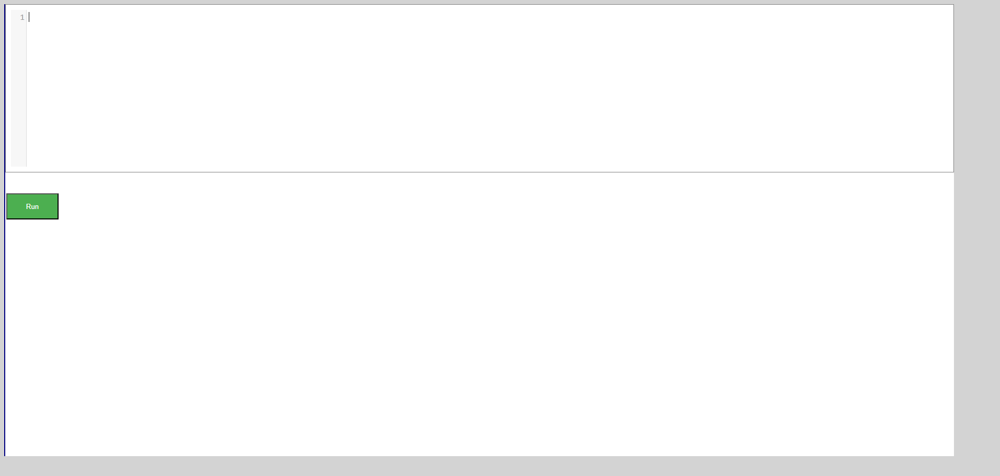
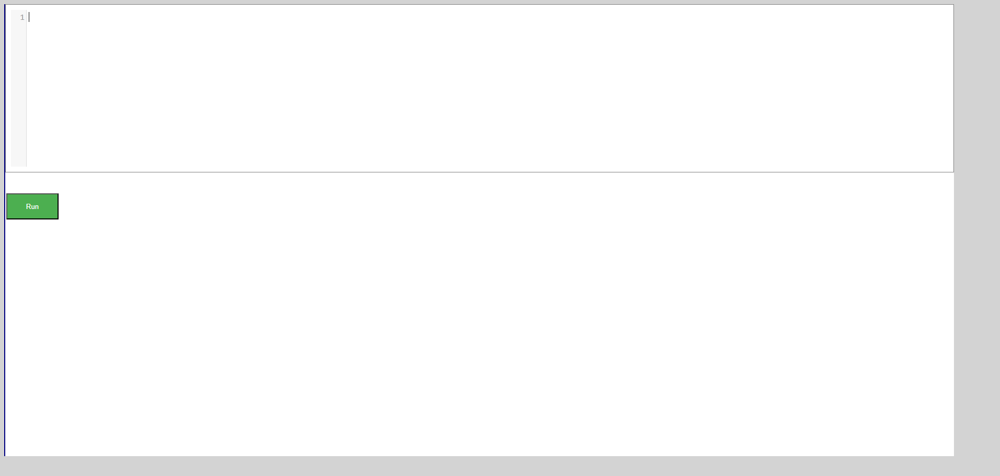

-
Array detail page
9:56:02 PM / 00:00:53:470 Fail
Array detail page
12.09.2024 9:56:02 PM 12.09.2024 9:56:56 PM 00:00:53:470 · #test-id=1PassValidate user navigated to array details page when clicked on get startedGiven The user is on the DS Introduction page as signedInAnd The user clicks on Get Started link for arrayThen The user is on the array details pagePassValidate user can navigate to Arrays in pythonGiven The user is on the DS Introduction page as signedInAnd The user clicks on Get Started link for arrayGiven The user is on the array details pageWhen The user click on Array in python linkThen the user is navigated to array in arrays in pythonPassValidate user can Try here link page from Arrays in pythonGiven The user is on the DS Introduction page as signedInAnd The user clicks on Get Started link for arrayGiven The user is on the arrays in python pageWhen User clicks Try here linkThen User should navigate to tryEditor pageFailError message displayed for invalid code on try Editor for Queue operationsGiven The user is on the DS Introduction page as signedInAnd The user clicks on Get Started link for arrayGiven The user is on the arrays in python pageAnd User clicks Try here linkWhen The user write the invalid code in EditorAnd Click the Run buttonStep skippedThen The user should able to see an error message in alert windowStep skippedStepDefinitions.Hooks.takeScreenshot(io.cucumber.java.Scenario)screenshot PassNo error message displayed for empty code on try editor for array in pythonGiven The user is on the DS Introduction page as signedInAnd The user clicks on Get Started link for arrayGiven The user is on the arrays in python pageAnd User clicks Try here linkWhen Click the Run buttonThen The user should not see any error message or alertPassValid code on try editor for arrays in python runs successfullyGiven The user is on the DS Introduction page as signedInAnd The user clicks on Get Started link for arrayGiven The user is on the arrays in python pageAnd User clicks Try here linkWhen The user write the valid code in EditorAnd Click the Run buttonThen The user should able to see output in the consolePassValidate user can navigate to Arrays using listGiven The user is on the DS Introduction page as signedInAnd The user clicks on Get Started link for arrayGiven The user is on the array details pageWhen The user click on Array using list linkThen the user is navigated to array in Array using listPassValidate user can Try here link page from Array using listGiven The user is on the DS Introduction page as signedInAnd The user clicks on Get Started link for arrayGiven The user is on the Array using listWhen User clicks Try here linkThen User should navigate to tryEditor pageFailError message displayed for invalid code on try Editor for Array using listGiven The user is on the DS Introduction page as signedInAnd The user clicks on Get Started link for arrayGiven The user is on the Array using listWhen User clicks Try here linkWhen The user write the invalid code in EditorAnd Click the Run buttonStep skippedThen The user should able to see an error message in alert windowStep skippedStepDefinitions.Hooks.takeScreenshot(io.cucumber.java.Scenario)screenshot
PassNo error message displayed for empty code on try editor for array in pythonGiven The user is on the DS Introduction page as signedInAnd The user clicks on Get Started link for arrayGiven The user is on the arrays in python pageAnd User clicks Try here linkWhen Click the Run buttonThen The user should not see any error message or alertPassValid code on try editor for arrays in python runs successfullyGiven The user is on the DS Introduction page as signedInAnd The user clicks on Get Started link for arrayGiven The user is on the arrays in python pageAnd User clicks Try here linkWhen The user write the valid code in EditorAnd Click the Run buttonThen The user should able to see output in the consolePassValidate user can navigate to Arrays using listGiven The user is on the DS Introduction page as signedInAnd The user clicks on Get Started link for arrayGiven The user is on the array details pageWhen The user click on Array using list linkThen the user is navigated to array in Array using listPassValidate user can Try here link page from Array using listGiven The user is on the DS Introduction page as signedInAnd The user clicks on Get Started link for arrayGiven The user is on the Array using listWhen User clicks Try here linkThen User should navigate to tryEditor pageFailError message displayed for invalid code on try Editor for Array using listGiven The user is on the DS Introduction page as signedInAnd The user clicks on Get Started link for arrayGiven The user is on the Array using listWhen User clicks Try here linkWhen The user write the invalid code in EditorAnd Click the Run buttonStep skippedThen The user should able to see an error message in alert windowStep skippedStepDefinitions.Hooks.takeScreenshot(io.cucumber.java.Scenario)screenshot PassNo error message displayed for empty code on try editor for Array using listGiven The user is on the DS Introduction page as signedInAnd The user clicks on Get Started link for arrayGiven The user is on the Array using listWhen User clicks Try here linkWhen Click the Run buttonThen The user should not see any error message or alertFailValid code on try editor for Array using list runs successfullyGiven The user is on the DS Introduction page as signedInAnd The user clicks on Get Started link for arrayGiven The user is on the Array using listWhen User clicks Try here linkWhen The user write the valid code in EditorAnd Click the Run buttonStep skippedThen The user should able to see output in the consoleStep skippedStepDefinitions.Hooks.takeScreenshot(io.cucumber.java.Scenario)screenshot
PassNo error message displayed for empty code on try editor for Array using listGiven The user is on the DS Introduction page as signedInAnd The user clicks on Get Started link for arrayGiven The user is on the Array using listWhen User clicks Try here linkWhen Click the Run buttonThen The user should not see any error message or alertFailValid code on try editor for Array using list runs successfullyGiven The user is on the DS Introduction page as signedInAnd The user clicks on Get Started link for arrayGiven The user is on the Array using listWhen User clicks Try here linkWhen The user write the valid code in EditorAnd Click the Run buttonStep skippedThen The user should able to see output in the consoleStep skippedStepDefinitions.Hooks.takeScreenshot(io.cucumber.java.Scenario)screenshot PassValidate user can navigate to basic opertaions in listsGiven The user is on the DS Introduction page as signedInAnd The user clicks on Get Started link for arrayGiven The user is on the array details pageWhen The user click on basic operations in listsThen the user is navigated to basic opertaions in listsPassValidate user can Try here link page from Basic operations in listsGiven The user is on the DS Introduction page as signedInAnd The user clicks on Get Started link for arrayGiven The user is on the Basic operations in listsWhen User clicks Try here linkThen User should navigate to tryEditor pageFailError message displayed for invalid code on try Editor for Basic operations in listsGiven The user is on the DS Introduction page as signedInAnd The user clicks on Get Started link for arrayGiven The user is on the Basic operations in listsAnd User clicks Try here linkWhen The user write the invalid code in EditorAnd Click the Run buttonStep skippedThen The user should able to see an error message in alert windowStep skippedStepDefinitions.Hooks.takeScreenshot(io.cucumber.java.Scenario)screenshot
PassValidate user can navigate to basic opertaions in listsGiven The user is on the DS Introduction page as signedInAnd The user clicks on Get Started link for arrayGiven The user is on the array details pageWhen The user click on basic operations in listsThen the user is navigated to basic opertaions in listsPassValidate user can Try here link page from Basic operations in listsGiven The user is on the DS Introduction page as signedInAnd The user clicks on Get Started link for arrayGiven The user is on the Basic operations in listsWhen User clicks Try here linkThen User should navigate to tryEditor pageFailError message displayed for invalid code on try Editor for Basic operations in listsGiven The user is on the DS Introduction page as signedInAnd The user clicks on Get Started link for arrayGiven The user is on the Basic operations in listsAnd User clicks Try here linkWhen The user write the invalid code in EditorAnd Click the Run buttonStep skippedThen The user should able to see an error message in alert windowStep skippedStepDefinitions.Hooks.takeScreenshot(io.cucumber.java.Scenario)screenshot PassNo error message displayed for empty code on try editor for basic operations in listsGiven The user is on the DS Introduction page as signedInAnd The user clicks on Get Started link for arrayGiven The user is on the Basic operations in listsAnd User clicks Try here linkWhen Click the Run buttonThen The user should not see any error message or alertFailValid code on try editor for basic operations in lists runs successfullyGiven The user is on the DS Introduction page as signedInAnd The user clicks on Get Started link for arrayGiven The user is on the Basic operations in listsAnd User clicks Try here linkWhen The user write the valid code in EditorAnd Click the Run buttonStep skippedThen The user should able to see output in the consoleStep skippedStepDefinitions.Hooks.takeScreenshot(io.cucumber.java.Scenario)screenshot
PassNo error message displayed for empty code on try editor for basic operations in listsGiven The user is on the DS Introduction page as signedInAnd The user clicks on Get Started link for arrayGiven The user is on the Basic operations in listsAnd User clicks Try here linkWhen Click the Run buttonThen The user should not see any error message or alertFailValid code on try editor for basic operations in lists runs successfullyGiven The user is on the DS Introduction page as signedInAnd The user clicks on Get Started link for arrayGiven The user is on the Basic operations in listsAnd User clicks Try here linkWhen The user write the valid code in EditorAnd Click the Run buttonStep skippedThen The user should able to see output in the consoleStep skippedStepDefinitions.Hooks.takeScreenshot(io.cucumber.java.Scenario)screenshot PassValidate user can navigate to applications of arrayGiven The user is on the DS Introduction page as signedInAnd The user clicks on Get Started link for arrayGiven The user is on the array details pageWhen The user click on applications of array linkThen the user is navigated to applications of arrayPassValidate user can Try here link page from applications of arrayGiven The user is on the DS Introduction page as signedInAnd The user clicks on Get Started link for arrayGiven The user is on the applications of arrayWhen User clicks Try here linkThen User should navigate to tryEditor pagePassError message displayed for invalid code on try Editor for applications of arrayGiven The user is on the DS Introduction page as signedInAnd The user clicks on Get Started link for arrayGiven The user is on the applications of arrayAnd User clicks Try here linkWhen The user write the invalid code in EditorAnd Click the Run buttonThen The user should able to see an error message in alert windowPassNo error message displayed for empty code on try editor for applications of arrayGiven The user is on the DS Introduction page as signedInAnd The user clicks on Get Started link for arrayGiven The user is on the applications of arrayAnd User clicks Try here linkWhen Click the Run buttonThen The user should not see any error message or alertFailValid code on try editor for applications of array runs successfullyGiven The user is on the DS Introduction page as signedInAnd The user clicks on Get Started link for arrayGiven The user is on the applications of arrayAnd User clicks Try here linkWhen The user write the valid code in EditorAnd Click the Run buttonStep skippedThen The user should able to see output in the consoleStep skippedStepDefinitions.Hooks.takeScreenshot(io.cucumber.java.Scenario)screenshot
PassValidate user can navigate to applications of arrayGiven The user is on the DS Introduction page as signedInAnd The user clicks on Get Started link for arrayGiven The user is on the array details pageWhen The user click on applications of array linkThen the user is navigated to applications of arrayPassValidate user can Try here link page from applications of arrayGiven The user is on the DS Introduction page as signedInAnd The user clicks on Get Started link for arrayGiven The user is on the applications of arrayWhen User clicks Try here linkThen User should navigate to tryEditor pagePassError message displayed for invalid code on try Editor for applications of arrayGiven The user is on the DS Introduction page as signedInAnd The user clicks on Get Started link for arrayGiven The user is on the applications of arrayAnd User clicks Try here linkWhen The user write the invalid code in EditorAnd Click the Run buttonThen The user should able to see an error message in alert windowPassNo error message displayed for empty code on try editor for applications of arrayGiven The user is on the DS Introduction page as signedInAnd The user clicks on Get Started link for arrayGiven The user is on the applications of arrayAnd User clicks Try here linkWhen Click the Run buttonThen The user should not see any error message or alertFailValid code on try editor for applications of array runs successfullyGiven The user is on the DS Introduction page as signedInAnd The user clicks on Get Started link for arrayGiven The user is on the applications of arrayAnd User clicks Try here linkWhen The user write the valid code in EditorAnd Click the Run buttonStep skippedThen The user should able to see output in the consoleStep skippedStepDefinitions.Hooks.takeScreenshot(io.cucumber.java.Scenario)screenshot Passvalidate user can click on practicequestionsGiven The user is on the DS Introduction page as signedInAnd The user clicks on Get Started link for arrayGiven The user is on the applications of arrayWhen the user click on the practice questions linkThen the user navigates to practice question page
Passvalidate user can click on practicequestionsGiven The user is on the DS Introduction page as signedInAnd The user clicks on Get Started link for arrayGiven The user is on the applications of arrayWhen the user click on the practice questions linkThen the user navigates to practice question page -
DS Introduction Page
9:56:50 PM / 00:00:28:914 Fail
DS Introduction Page
12.09.2024 9:56:50 PM 12.09.2024 9:57:19 PM 00:00:28:914 · #test-id=223PassValidate the DS dropdown without signINGiven The user should open the DS Algo Portal URL in any supported browserWhen The user clicks the Get Started buttonAnd The user clicks the data structure dropdown arrowThen The user should able to see siz options Arrays Linked,List,Stack,Queue,Tree,Graph in dropdown menuPassVerify warning message when user navigate to DS details page without signInGiven The user should open the DS Algo Portal URL in any supported browserGiven The user is on the DS Introduction pageWhen The user clicks any Get Started buttons of data structures on the DS Introduction pageThen The user should able to see an warning message You are not logged inPassValidate user lands on register page when clicked on registerGiven The user should open the DS Algo Portal URL in any supported browserGiven The user is on the DS Introduction pageWhen The user clicks Register link on the DS Introduction pageThen The user should navigate to register pagePassClicking on get started for data structers lands on Data Structers details pageGiven The user is on the DS Introduction page as signedInWhen The user clicks the Get Started button of DS IntroductionThen The user should navigate to DS Intoduction details pageAnd User should see the timeComplexity linkPassClicking on time complexity navigate to the pageGiven The user is on the DS Introduction page as signedInWhen The user clicks the Get Started button of DS IntroductionAnd The user clicks the Time Complexity buttonThen User should navigate to Time Complexity pageAnd User should see Practice Question link and try herePassClicking on Try Here on time complexity opens python editorGiven The user is on the DS Introduction page as signedInWhen The user clicks the Get Started button of DS IntroductionAnd The user clicks the Time Complexity buttonAnd User clicks Try here linkThen User should navigate to tryEditor pageFailError message displayed for invalid code on try editor for Time ComplexityGiven The user is on the DS Introduction page as signedInAnd The user clicks the Get Started button of DS IntroductionAnd The user clicks the Time Complexity buttonAnd User clicks Try here linkAnd User is on Try Here page for time complexityWhen The user write the invalid code in EditorAnd Click the Run buttonStep skippedThen The user should able to see an error message in alert windowStep skippedStepDefinitions.Hooks.takeScreenshot(io.cucumber.java.Scenario)screenshot PassNo error message displayed for empty code on try editor for Time ComplexityGiven The user is on the DS Introduction page as signedInAnd The user clicks the Get Started button of DS IntroductionAnd The user clicks the Time Complexity buttonAnd User clicks Try here linkAnd User is on Try Here page for time complexityWhen Click the Run buttonThen The user should not see any error message or alertFailValid code on try editor for Time Complexity runs successfullyGiven The user is on the DS Introduction page as signedInAnd The user clicks the Get Started button of DS IntroductionAnd The user clicks the Time Complexity buttonAnd User clicks Try here linkAnd User is on Try Here page for time complexityWhen The user write the valid code in EditorAnd Click the Run buttonStep skippedThen The user should able to see output in the consoleStep skippedStepDefinitions.Hooks.takeScreenshot(io.cucumber.java.Scenario)screenshot
PassNo error message displayed for empty code on try editor for Time ComplexityGiven The user is on the DS Introduction page as signedInAnd The user clicks the Get Started button of DS IntroductionAnd The user clicks the Time Complexity buttonAnd User clicks Try here linkAnd User is on Try Here page for time complexityWhen Click the Run buttonThen The user should not see any error message or alertFailValid code on try editor for Time Complexity runs successfullyGiven The user is on the DS Introduction page as signedInAnd The user clicks the Get Started button of DS IntroductionAnd The user clicks the Time Complexity buttonAnd User clicks Try here linkAnd User is on Try Here page for time complexityWhen The user write the valid code in EditorAnd Click the Run buttonStep skippedThen The user should able to see output in the consoleStep skippedStepDefinitions.Hooks.takeScreenshot(io.cucumber.java.Scenario)screenshot
-
Title of your feature
9:57:13 PM / 00:00:29:087 Fail
Title of your feature
12.09.2024 9:57:13 PM 12.09.2024 9:57:42 PM 00:00:29:087 · #test-id=319I want to use this template for my feature filePassValidate user navigated to graph details page when clicked on get startedGiven The user is on the DS Introduction page as signedInAnd The user clicks on Get Started link for graphThen The user is on the graph details pagePassValidate user can navigate to Graph in Graph pageGiven The user is on the DS Introduction page as signedInAnd The user clicks on Get Started link for graphGiven The user is on the graph details pageWhen The user click on graph link in graph details pageThen the user is navigated to graph page under graph detailsPassValidate user can Try here link page from graphsGiven The user is on the DS Introduction page as signedInAnd The user clicks on Get Started link for graphGiven The user is on the graphs page under graph detialsWhen User clicks Try here linkThen User should navigate to tryEditor pageFailError message displayed for invalid code on try Editor for graphs pageGiven The user is on the DS Introduction page as signedInAnd The user clicks on Get Started link for graphGiven The user is on the graphs page under graph detialsAnd User clicks Try here linkWhen The user write the invalid code in EditorAnd Click the Run buttonStep skippedThen The user should able to see an error message in alert windowStep skippedStepDefinitions.Hooks.takeScreenshot(io.cucumber.java.Scenario)screenshot PassNo error message displayed for empty code on try editor for graphs pageGiven The user is on the DS Introduction page as signedInAnd The user clicks on Get Started link for graphGiven The user is on the graphs page under graph detialsAnd User clicks Try here linkWhen Click the Run buttonThen The user should not see any error message or alertFailValid code on try editor for graphs runs successfullyGiven The user is on the DS Introduction page as signedInAnd The user clicks on Get Started link for graphGiven The user is on the graphs page under graph detialsAnd User clicks Try here linkWhen The user write the valid code in EditorAnd Click the Run buttonStep skippedThen The user should able to see output in the consoleStep skippedStepDefinitions.Hooks.takeScreenshot(io.cucumber.java.Scenario)screenshot
PassNo error message displayed for empty code on try editor for graphs pageGiven The user is on the DS Introduction page as signedInAnd The user clicks on Get Started link for graphGiven The user is on the graphs page under graph detialsAnd User clicks Try here linkWhen Click the Run buttonThen The user should not see any error message or alertFailValid code on try editor for graphs runs successfullyGiven The user is on the DS Introduction page as signedInAnd The user clicks on Get Started link for graphGiven The user is on the graphs page under graph detialsAnd User clicks Try here linkWhen The user write the valid code in EditorAnd Click the Run buttonStep skippedThen The user should able to see output in the consoleStep skippedStepDefinitions.Hooks.takeScreenshot(io.cucumber.java.Scenario)screenshot PassValidate user can navigate to Graph Representations pageGiven The user is on the DS Introduction page as signedInAnd The user clicks on Get Started link for graphGiven The user is on the graph details pageWhen The user click on graph representations linkThen the user is navigated to graph representations pagePassValidate user can click on Try here link from graph representations pageGiven The user is on the DS Introduction page as signedInAnd The user clicks on Get Started link for graphGiven The user is on the graphs representations pageWhen User clicks Try here linkThen User should navigate to tryEditor pagePassError message displayed for invalid code on try Editor for graph representations pageGiven The user is on the DS Introduction page as signedInAnd The user clicks on Get Started link for graphGiven The user is on the graphs representations pageAnd User clicks Try here linkWhen The user write the invalid code in EditorAnd Click the Run buttonThen The user should able to see an error message in alert windowPassNo error message displayed for empty code on try editor for graph representations pageGiven The user is on the DS Introduction page as signedInAnd The user clicks on Get Started link for graphGiven The user is on the graphs representations pageAnd User clicks Try here linkWhen Click the Run buttonThen The user should not see any error message or alertFailValid code on try editor for graph representations runs successfullyGiven The user is on the DS Introduction page as signedInAnd The user clicks on Get Started link for graphGiven The user is on the graphs representations pageAnd User clicks Try here linkWhen The user write the valid code in EditorAnd Click the Run buttonStep skippedThen The user should able to see output in the consoleStep skippedStepDefinitions.Hooks.takeScreenshot(io.cucumber.java.Scenario)screenshot
PassValidate user can navigate to Graph Representations pageGiven The user is on the DS Introduction page as signedInAnd The user clicks on Get Started link for graphGiven The user is on the graph details pageWhen The user click on graph representations linkThen the user is navigated to graph representations pagePassValidate user can click on Try here link from graph representations pageGiven The user is on the DS Introduction page as signedInAnd The user clicks on Get Started link for graphGiven The user is on the graphs representations pageWhen User clicks Try here linkThen User should navigate to tryEditor pagePassError message displayed for invalid code on try Editor for graph representations pageGiven The user is on the DS Introduction page as signedInAnd The user clicks on Get Started link for graphGiven The user is on the graphs representations pageAnd User clicks Try here linkWhen The user write the invalid code in EditorAnd Click the Run buttonThen The user should able to see an error message in alert windowPassNo error message displayed for empty code on try editor for graph representations pageGiven The user is on the DS Introduction page as signedInAnd The user clicks on Get Started link for graphGiven The user is on the graphs representations pageAnd User clicks Try here linkWhen Click the Run buttonThen The user should not see any error message or alertFailValid code on try editor for graph representations runs successfullyGiven The user is on the DS Introduction page as signedInAnd The user clicks on Get Started link for graphGiven The user is on the graphs representations pageAnd User clicks Try here linkWhen The user write the valid code in EditorAnd Click the Run buttonStep skippedThen The user should able to see output in the consoleStep skippedStepDefinitions.Hooks.takeScreenshot(io.cucumber.java.Scenario)screenshot
-
DS Homepage
9:57:40 PM / 00:00:05:384 Pass
DS Homepage
12.09.2024 9:57:40 PM 12.09.2024 9:57:46 PM 00:00:05:384 · #test-id=442PassValidate user lands on default home pageWhen The user enter the DS_Algo PortalThen The user should landed on the DS_Algo Get Started page with message You are at the right placePassValidate user navigate to DS Intro PageGiven The user should open the DS Algo Portal URL in any supported browserWhen The user clicks the Get Started buttonThen The user should land in Data Structure Introduction Page with register and Sign in links -
Linked List
9:57:43 PM / 00:01:29:838 Fail
Linked List
12.09.2024 9:57:43 PM 12.09.2024 9:59:13 PM 00:01:29:838 · #test-id=460PassDS_algo Home pageGiven The user is on the DS Introduction page as signedInAnd User clicks on Get Started button from Linked List panelThen The user is redirected to Linked List page.PassLinked List home pageGiven The user is on the DS Introduction page as signedInAnd User clicks on Get Started button from Linked List panelWhen The user clicks on Linked List from the Data Structure dropdown menu.Then The user is redirected to Linked List page.PassLinked List home pageGiven The user is on the DS Introduction page as signedInAnd User clicks on Get Started button from Linked List panelWhen The user clicks Introduction linkThen The user is redirected to Introduction page.PassLinked List home pageGiven The user is on the DS Introduction page as signedInAnd User clicks on Get Started button from Linked List panelGiven The user is on the Introduction pageWhen The user clicks Try Here buttonThen The user is redirected to a page having Editor and run buttonFailLL_Try Here Editor page with empty dataGiven The user is on the DS Introduction page as signedInAnd User clicks on Get Started button from Linked List panelGiven The user is on the Introduction pageAnd The user clicks Try Here buttonWhen The user writes no code inside editor window and clicks on Run buttonThen Nothing happens to the Editor page and no error message is displayedStep skippedStepDefinitions.Hooks.takeScreenshot(io.cucumber.java.Scenario)screenshot FailLL_Try Here Editor page with valid dataGiven The user is on the DS Introduction page as signedInAnd User clicks on Get Started button from Linked List panelGiven The user is on the Introduction pageAnd The user clicks Try Here buttonWhen The user writes the valid python code and clicks on Run buttonThen The user is able to see the output inside the console.Step skippedStepDefinitions.Hooks.takeScreenshot(io.cucumber.java.Scenario)screenshot
FailLL_Try Here Editor page with valid dataGiven The user is on the DS Introduction page as signedInAnd User clicks on Get Started button from Linked List panelGiven The user is on the Introduction pageAnd The user clicks Try Here buttonWhen The user writes the valid python code and clicks on Run buttonThen The user is able to see the output inside the console.Step skippedStepDefinitions.Hooks.takeScreenshot(io.cucumber.java.Scenario)screenshot FailLL_Try Here Editor page with invalid dataGiven The user is on the DS Introduction page as signedInAnd User clicks on Get Started button from Linked List panelGiven The user is on the Introduction pageAnd The user clicks Try Here buttonWhen The user writes the invalid python code and clicks on Run buttonThen The user see error msg in alert windowStep skippedStepDefinitions.Hooks.takeScreenshot(io.cucumber.java.Scenario)screenshot
FailLL_Try Here Editor page with invalid dataGiven The user is on the DS Introduction page as signedInAnd User clicks on Get Started button from Linked List panelGiven The user is on the Introduction pageAnd The user clicks Try Here buttonWhen The user writes the invalid python code and clicks on Run buttonThen The user see error msg in alert windowStep skippedStepDefinitions.Hooks.takeScreenshot(io.cucumber.java.Scenario)screenshot PassLinked List home pageGiven The user is on the DS Introduction page as signedInAnd User clicks on Get Started button from Linked List panelGiven The user is on the Introduction pageWhen The user clicks Creating Linked LIst linkThen The user is redirected to Creating Linked List page.PassCreating Linked LIstGiven The user is on the DS Introduction page as signedInAnd User clicks on Get Started button from Linked List panelGiven The user is on the Creating Linked LIst pageWhen The user clicks Try Here buttonThen The user is redirected to a page having Editor and run buttonFailLL_Try Here Editor page with empty dataGiven The user is on the DS Introduction page as signedInAnd User clicks on Get Started button from Linked List panelGiven The user is on the Creating Linked LIst pageAnd The user clicks Try Here buttonWhen The user writes no code inside editor window and clicks on Run buttonThen Nothing happens to the Editor page and no error message is displayedStep skippedStepDefinitions.Hooks.takeScreenshot(io.cucumber.java.Scenario)screenshot
PassLinked List home pageGiven The user is on the DS Introduction page as signedInAnd User clicks on Get Started button from Linked List panelGiven The user is on the Introduction pageWhen The user clicks Creating Linked LIst linkThen The user is redirected to Creating Linked List page.PassCreating Linked LIstGiven The user is on the DS Introduction page as signedInAnd User clicks on Get Started button from Linked List panelGiven The user is on the Creating Linked LIst pageWhen The user clicks Try Here buttonThen The user is redirected to a page having Editor and run buttonFailLL_Try Here Editor page with empty dataGiven The user is on the DS Introduction page as signedInAnd User clicks on Get Started button from Linked List panelGiven The user is on the Creating Linked LIst pageAnd The user clicks Try Here buttonWhen The user writes no code inside editor window and clicks on Run buttonThen Nothing happens to the Editor page and no error message is displayedStep skippedStepDefinitions.Hooks.takeScreenshot(io.cucumber.java.Scenario)screenshot FailLL_Try Here Editor page with valid dataGiven The user is on the DS Introduction page as signedInAnd User clicks on Get Started button from Linked List panelGiven The user is on the Creating Linked LIst pageAnd The user clicks Try Here buttonWhen The user writes the valid python code and clicks on Run buttonThen The user is able to see the output inside the console.Step skippedStepDefinitions.Hooks.takeScreenshot(io.cucumber.java.Scenario)screenshot
FailLL_Try Here Editor page with valid dataGiven The user is on the DS Introduction page as signedInAnd User clicks on Get Started button from Linked List panelGiven The user is on the Creating Linked LIst pageAnd The user clicks Try Here buttonWhen The user writes the valid python code and clicks on Run buttonThen The user is able to see the output inside the console.Step skippedStepDefinitions.Hooks.takeScreenshot(io.cucumber.java.Scenario)screenshot FailLL_Try Here Editor page with invalid dataGiven The user is on the DS Introduction page as signedInAnd User clicks on Get Started button from Linked List panelGiven The user is on the Creating Linked LIst pageAnd The user clicks Try Here buttonWhen The user writes the invalid python code and clicks on Run buttonThen The user see error msg in alert windowStep skippedStepDefinitions.Hooks.takeScreenshot(io.cucumber.java.Scenario)screenshot
FailLL_Try Here Editor page with invalid dataGiven The user is on the DS Introduction page as signedInAnd User clicks on Get Started button from Linked List panelGiven The user is on the Creating Linked LIst pageAnd The user clicks Try Here buttonWhen The user writes the invalid python code and clicks on Run buttonThen The user see error msg in alert windowStep skippedStepDefinitions.Hooks.takeScreenshot(io.cucumber.java.Scenario)screenshot PassLinked List home pageGiven The user is on the DS Introduction page as signedInAnd User clicks on Get Started button from Linked List panelGiven The user is on the Creating Linked LIst pageWhen The user clicks Types of Linked List linkThen The user is directed to Types of Linked List page.PassTypes of Linked ListGiven The user is on the DS Introduction page as signedInAnd User clicks on Get Started button from Linked List panelGiven The user is on the Types of Linked List pageWhen The user clicks Try Here buttonThen The user is redirected to a page having Editor and run buttonFailLL_Try Here Editor page with empty dataGiven The user is on the DS Introduction page as signedInAnd User clicks on Get Started button from Linked List panelGiven The user is on the Types of Linked List pageWhen The user clicks Try Here buttonWhen The user writes no code inside editor window and clicks on Run buttonThen Nothing happens to the Editor page and no error message is displayedStep skippedStepDefinitions.Hooks.takeScreenshot(io.cucumber.java.Scenario)screenshot
PassLinked List home pageGiven The user is on the DS Introduction page as signedInAnd User clicks on Get Started button from Linked List panelGiven The user is on the Creating Linked LIst pageWhen The user clicks Types of Linked List linkThen The user is directed to Types of Linked List page.PassTypes of Linked ListGiven The user is on the DS Introduction page as signedInAnd User clicks on Get Started button from Linked List panelGiven The user is on the Types of Linked List pageWhen The user clicks Try Here buttonThen The user is redirected to a page having Editor and run buttonFailLL_Try Here Editor page with empty dataGiven The user is on the DS Introduction page as signedInAnd User clicks on Get Started button from Linked List panelGiven The user is on the Types of Linked List pageWhen The user clicks Try Here buttonWhen The user writes no code inside editor window and clicks on Run buttonThen Nothing happens to the Editor page and no error message is displayedStep skippedStepDefinitions.Hooks.takeScreenshot(io.cucumber.java.Scenario)screenshot FailLL_Try Here Editor page with valid dataGiven The user is on the DS Introduction page as signedInAnd User clicks on Get Started button from Linked List panelGiven The user is on the Types of Linked List pageWhen The user clicks Try Here buttonWhen The user writes the valid python code and clicks on Run buttonThen The user is able to see the output inside the console.Step skippedStepDefinitions.Hooks.takeScreenshot(io.cucumber.java.Scenario)screenshot
FailLL_Try Here Editor page with valid dataGiven The user is on the DS Introduction page as signedInAnd User clicks on Get Started button from Linked List panelGiven The user is on the Types of Linked List pageWhen The user clicks Try Here buttonWhen The user writes the valid python code and clicks on Run buttonThen The user is able to see the output inside the console.Step skippedStepDefinitions.Hooks.takeScreenshot(io.cucumber.java.Scenario)screenshot FailLL_Try Here Editor page with invalid dataGiven The user is on the DS Introduction page as signedInAnd User clicks on Get Started button from Linked List panelGiven The user is on the Types of Linked List pageWhen The user clicks Try Here buttonWhen The user writes the invalid python code and clicks on Run buttonThen The user see error msg in alert windowStep skippedStepDefinitions.Hooks.takeScreenshot(io.cucumber.java.Scenario)screenshot
FailLL_Try Here Editor page with invalid dataGiven The user is on the DS Introduction page as signedInAnd User clicks on Get Started button from Linked List panelGiven The user is on the Types of Linked List pageWhen The user clicks Try Here buttonWhen The user writes the invalid python code and clicks on Run buttonThen The user see error msg in alert windowStep skippedStepDefinitions.Hooks.takeScreenshot(io.cucumber.java.Scenario)screenshot PassLinked List home pageGiven The user is on the DS Introduction page as signedInAnd User clicks on Get Started button from Linked List panelGiven The user is on the Types of Linked List pageWhen The user clicks Implement Linked List in Python linkThen The user is redirected to Implement Linked List in Python page.PassImplement Linked List in PythonGiven The user is on the DS Introduction page as signedInAnd User clicks on Get Started button from Linked List panelGiven The user is on the Implement Linked List in Python pageWhen The user clicks Try Here buttonThen The user is redirected to a page having Editor and run buttonPassLL_Try Here Editor page with empty dataGiven The user is on the DS Introduction page as signedInAnd User clicks on Get Started button from Linked List panelGiven The user is on the Implement Linked List in Python pageAnd The user clicks Try Here buttonWhen The user writes no code inside editor window and clicks on Run buttonThen Nothing happens to the Editor page and no error message is displayedFailLL_Try Here Editor page with valid dataGiven The user is on the DS Introduction page as signedInAnd User clicks on Get Started button from Linked List panelGiven The user is on the Implement Linked List in Python pageAnd The user clicks Try Here buttonWhen The user writes the valid python code and clicks on Run buttonThen The user is able to see the output inside the console.Step skippedStepDefinitions.Hooks.takeScreenshot(io.cucumber.java.Scenario)screenshot
PassLinked List home pageGiven The user is on the DS Introduction page as signedInAnd User clicks on Get Started button from Linked List panelGiven The user is on the Types of Linked List pageWhen The user clicks Implement Linked List in Python linkThen The user is redirected to Implement Linked List in Python page.PassImplement Linked List in PythonGiven The user is on the DS Introduction page as signedInAnd User clicks on Get Started button from Linked List panelGiven The user is on the Implement Linked List in Python pageWhen The user clicks Try Here buttonThen The user is redirected to a page having Editor and run buttonPassLL_Try Here Editor page with empty dataGiven The user is on the DS Introduction page as signedInAnd User clicks on Get Started button from Linked List panelGiven The user is on the Implement Linked List in Python pageAnd The user clicks Try Here buttonWhen The user writes no code inside editor window and clicks on Run buttonThen Nothing happens to the Editor page and no error message is displayedFailLL_Try Here Editor page with valid dataGiven The user is on the DS Introduction page as signedInAnd User clicks on Get Started button from Linked List panelGiven The user is on the Implement Linked List in Python pageAnd The user clicks Try Here buttonWhen The user writes the valid python code and clicks on Run buttonThen The user is able to see the output inside the console.Step skippedStepDefinitions.Hooks.takeScreenshot(io.cucumber.java.Scenario)screenshot FailLL_Try Here Editor page with invalid dataGiven The user is on the DS Introduction page as signedInAnd User clicks on Get Started button from Linked List panelGiven The user is on the Implement Linked List in Python pageAnd The user clicks Try Here buttonWhen The user writes the invalid python code and clicks on Run buttonThen The user see error msg in alert windowStep skippedStepDefinitions.Hooks.takeScreenshot(io.cucumber.java.Scenario)screenshot
FailLL_Try Here Editor page with invalid dataGiven The user is on the DS Introduction page as signedInAnd User clicks on Get Started button from Linked List panelGiven The user is on the Implement Linked List in Python pageAnd The user clicks Try Here buttonWhen The user writes the invalid python code and clicks on Run buttonThen The user see error msg in alert windowStep skippedStepDefinitions.Hooks.takeScreenshot(io.cucumber.java.Scenario)screenshot PassLinked List home pageGiven The user is on the DS Introduction page as signedInAnd User clicks on Get Started button from Linked List panelGiven The user is on the Implement Linked List in Python pageWhen The user clicks Traversal linkThen The user is redirected to Traversal page.PassTraversalGiven The user is on the DS Introduction page as signedInAnd User clicks on Get Started button from Linked List panelGiven The user is on the Traversal pageWhen The user clicks Try Here buttonThen The user is redirected to a page having Editor and run buttonFailLL_Try Here Editor page with empty dataGiven The user is on the DS Introduction page as signedInAnd User clicks on Get Started button from Linked List panelGiven The user is on the Traversal pageAnd The user clicks Try Here buttonWhen The user writes no code inside editor window and clicks on Run buttonThen Nothing happens to the Editor page and no error message is displayedStep skippedStepDefinitions.Hooks.takeScreenshot(io.cucumber.java.Scenario)screenshot
PassLinked List home pageGiven The user is on the DS Introduction page as signedInAnd User clicks on Get Started button from Linked List panelGiven The user is on the Implement Linked List in Python pageWhen The user clicks Traversal linkThen The user is redirected to Traversal page.PassTraversalGiven The user is on the DS Introduction page as signedInAnd User clicks on Get Started button from Linked List panelGiven The user is on the Traversal pageWhen The user clicks Try Here buttonThen The user is redirected to a page having Editor and run buttonFailLL_Try Here Editor page with empty dataGiven The user is on the DS Introduction page as signedInAnd User clicks on Get Started button from Linked List panelGiven The user is on the Traversal pageAnd The user clicks Try Here buttonWhen The user writes no code inside editor window and clicks on Run buttonThen Nothing happens to the Editor page and no error message is displayedStep skippedStepDefinitions.Hooks.takeScreenshot(io.cucumber.java.Scenario)screenshot FailLL_Try Here Editor page with valid dataGiven The user is on the DS Introduction page as signedInAnd User clicks on Get Started button from Linked List panelGiven The user is on the Traversal pageAnd The user clicks Try Here buttonWhen The user writes the valid python code and clicks on Run buttonThen The user is able to see the output inside the console.Step skippedStepDefinitions.Hooks.takeScreenshot(io.cucumber.java.Scenario)screenshot
FailLL_Try Here Editor page with valid dataGiven The user is on the DS Introduction page as signedInAnd User clicks on Get Started button from Linked List panelGiven The user is on the Traversal pageAnd The user clicks Try Here buttonWhen The user writes the valid python code and clicks on Run buttonThen The user is able to see the output inside the console.Step skippedStepDefinitions.Hooks.takeScreenshot(io.cucumber.java.Scenario)screenshot FailLL_Try Here Editor page with invalid dataGiven The user is on the DS Introduction page as signedInAnd User clicks on Get Started button from Linked List panelGiven The user is on the Traversal pageAnd The user clicks Try Here buttonWhen The user writes the invalid python code and clicks on Run buttonThen The user see error msg in alert windowStep skippedStepDefinitions.Hooks.takeScreenshot(io.cucumber.java.Scenario)screenshot
FailLL_Try Here Editor page with invalid dataGiven The user is on the DS Introduction page as signedInAnd User clicks on Get Started button from Linked List panelGiven The user is on the Traversal pageAnd The user clicks Try Here buttonWhen The user writes the invalid python code and clicks on Run buttonThen The user see error msg in alert windowStep skippedStepDefinitions.Hooks.takeScreenshot(io.cucumber.java.Scenario)screenshot PassLinked List home pageGiven The user is on the DS Introduction page as signedInAnd User clicks on Get Started button from Linked List panelGiven The user is on the Traversal pageWhen The user clicks Insertion linkThen The user is redirected to Insertion page.PassInsertionGiven The user is on the DS Introduction page as signedInAnd User clicks on Get Started button from Linked List panelGiven The user is on the Insertion pageWhen The user clicks Try Here buttonThen The user is redirected to a page having Editor and run buttonFailLL_Try Here Editor page with empty dataGiven The user is on the DS Introduction page as signedInAnd User clicks on Get Started button from Linked List panelGiven The user is on the Insertion pageAnd The user clicks Try Here buttonWhen The user writes no code inside editor window and clicks on Run buttonThen Nothing happens to the Editor page and no error message is displayedStep skippedStepDefinitions.Hooks.takeScreenshot(io.cucumber.java.Scenario)screenshot
PassLinked List home pageGiven The user is on the DS Introduction page as signedInAnd User clicks on Get Started button from Linked List panelGiven The user is on the Traversal pageWhen The user clicks Insertion linkThen The user is redirected to Insertion page.PassInsertionGiven The user is on the DS Introduction page as signedInAnd User clicks on Get Started button from Linked List panelGiven The user is on the Insertion pageWhen The user clicks Try Here buttonThen The user is redirected to a page having Editor and run buttonFailLL_Try Here Editor page with empty dataGiven The user is on the DS Introduction page as signedInAnd User clicks on Get Started button from Linked List panelGiven The user is on the Insertion pageAnd The user clicks Try Here buttonWhen The user writes no code inside editor window and clicks on Run buttonThen Nothing happens to the Editor page and no error message is displayedStep skippedStepDefinitions.Hooks.takeScreenshot(io.cucumber.java.Scenario)screenshot FailLL_Try Here Editor page with valid dataGiven The user is on the DS Introduction page as signedInAnd User clicks on Get Started button from Linked List panelGiven The user is on the Insertion pageAnd The user clicks Try Here buttonWhen The user writes the valid python code and clicks on Run buttonThen The user is able to see the output inside the console.Step skippedStepDefinitions.Hooks.takeScreenshot(io.cucumber.java.Scenario)screenshot
FailLL_Try Here Editor page with valid dataGiven The user is on the DS Introduction page as signedInAnd User clicks on Get Started button from Linked List panelGiven The user is on the Insertion pageAnd The user clicks Try Here buttonWhen The user writes the valid python code and clicks on Run buttonThen The user is able to see the output inside the console.Step skippedStepDefinitions.Hooks.takeScreenshot(io.cucumber.java.Scenario)screenshot FailLL_Try Here Editor page with invalid dataGiven The user is on the DS Introduction page as signedInAnd User clicks on Get Started button from Linked List panelGiven The user is on the Insertion pageAnd The user clicks Try Here buttonWhen The user writes the invalid python code and clicks on Run buttonThen The user see error msg in alert windowStep skippedStepDefinitions.Hooks.takeScreenshot(io.cucumber.java.Scenario)screenshot
FailLL_Try Here Editor page with invalid dataGiven The user is on the DS Introduction page as signedInAnd User clicks on Get Started button from Linked List panelGiven The user is on the Insertion pageAnd The user clicks Try Here buttonWhen The user writes the invalid python code and clicks on Run buttonThen The user see error msg in alert windowStep skippedStepDefinitions.Hooks.takeScreenshot(io.cucumber.java.Scenario)screenshot PassLinked List home pageGiven The user is on the DS Introduction page as signedInAnd User clicks on Get Started button from Linked List panelGiven The user is on the Insertion pageWhen The user clicks Deletion linkThen The user is redirected to Deletion page.PassDeletionGiven The user is on the DS Introduction page as signedInAnd User clicks on Get Started button from Linked List panelGiven The user is on the Deletion pageWhen The user clicks Try Here buttonThen The user is redirected to a page having Editor and run buttonFailLL_Try Here Editor page with empty dataGiven The user is on the DS Introduction page as signedInAnd User clicks on Get Started button from Linked List panelGiven The user is on the Deletion pageAnd The user clicks Try Here buttonWhen The user writes no code inside editor window and clicks on Run buttonThen Nothing happens to the Editor page and no error message is displayedStep skippedStepDefinitions.Hooks.takeScreenshot(io.cucumber.java.Scenario)screenshot
PassLinked List home pageGiven The user is on the DS Introduction page as signedInAnd User clicks on Get Started button from Linked List panelGiven The user is on the Insertion pageWhen The user clicks Deletion linkThen The user is redirected to Deletion page.PassDeletionGiven The user is on the DS Introduction page as signedInAnd User clicks on Get Started button from Linked List panelGiven The user is on the Deletion pageWhen The user clicks Try Here buttonThen The user is redirected to a page having Editor and run buttonFailLL_Try Here Editor page with empty dataGiven The user is on the DS Introduction page as signedInAnd User clicks on Get Started button from Linked List panelGiven The user is on the Deletion pageAnd The user clicks Try Here buttonWhen The user writes no code inside editor window and clicks on Run buttonThen Nothing happens to the Editor page and no error message is displayedStep skippedStepDefinitions.Hooks.takeScreenshot(io.cucumber.java.Scenario)screenshot FailLL_Try Here Editor page with valid dataGiven The user is on the DS Introduction page as signedInAnd User clicks on Get Started button from Linked List panelGiven The user is on the Deletion pageAnd The user clicks Try Here buttonWhen The user writes the valid python code and clicks on Run buttonThen The user is able to see the output inside the console.Step skippedStepDefinitions.Hooks.takeScreenshot(io.cucumber.java.Scenario)screenshot
FailLL_Try Here Editor page with valid dataGiven The user is on the DS Introduction page as signedInAnd User clicks on Get Started button from Linked List panelGiven The user is on the Deletion pageAnd The user clicks Try Here buttonWhen The user writes the valid python code and clicks on Run buttonThen The user is able to see the output inside the console.Step skippedStepDefinitions.Hooks.takeScreenshot(io.cucumber.java.Scenario)screenshot FailLL_Try Here Editor page with invalid dataGiven The user is on the DS Introduction page as signedInAnd User clicks on Get Started button from Linked List panelGiven The user is on the Deletion pageAnd The user clicks Try Here buttonWhen The user writes the invalid python code and clicks on Run buttonThen The user see error msg in alert windowStep skippedStepDefinitions.Hooks.takeScreenshot(io.cucumber.java.Scenario)screenshot
FailLL_Try Here Editor page with invalid dataGiven The user is on the DS Introduction page as signedInAnd User clicks on Get Started button from Linked List panelGiven The user is on the Deletion pageAnd The user clicks Try Here buttonWhen The user writes the invalid python code and clicks on Run buttonThen The user see error msg in alert windowStep skippedStepDefinitions.Hooks.takeScreenshot(io.cucumber.java.Scenario)screenshot PassIntroduction pageGiven The user is on the DS Introduction page as signedInAnd User clicks on Get Started button from Linked List panelGiven The user is on the Introduction pageWhen The user clicks Practice Questions linkThen The user is redirected to Practice Questions page.
PassIntroduction pageGiven The user is on the DS Introduction page as signedInAnd User clicks on Get Started button from Linked List panelGiven The user is on the Introduction pageWhen The user clicks Practice Questions linkThen The user is redirected to Practice Questions page. -
Login Feature
9:59:08 PM / 00:00:12:899 Fail
Login Feature
12.09.2024 9:59:08 PM 12.09.2024 9:59:21 PM 00:00:12:899 · #test-id=852I want to use this template for my feature filePassDS Algo Sign in Page with blank infoPassDS Algo Sign in Page with blank infoGiven The user is on the DS Algo Sign in PageWhen The user clicks login button after leaving the username textbox and paswword textbox blank from sheetname "Login" and row 3Then The error message "Please fill out this field." appears below Username textboxPassDS Algo Sign in Page with blank passwordPassDS Algo Sign in Page with blank passwordGiven The user is on the DS Algo Sign in PageWhen The user clicks login button after entering only username from sheetname "Login" and row 6Then The error message "Please fill out this field." appears below Pwd textboxPassDS Algo Sign in Page with blank usernamePassDS Algo Sign in Page with blank usernameGiven The user is on the DS Algo Sign in PageWhen The user clicks login button after entering only password from sheetname "Login" and row 6Then The error message "Please fill out this field." appears below Username textboxPassDS Algo Sign in Page with invalid username and passwordPassDS Algo Sign in Page with invalid username and passwordGiven The user is on the DS Algo Sign in PageWhen The user clicks login button after entering invalid username and invalid password from sheetname "Login" and row 4Then The user should able to see an error message "Invalid Username and Password".PassDS Algo Sign in Page with valid username and invalid passwordPassDS Algo Sign in Page with valid username and invalid passwordGiven The user is on the DS Algo Sign in PageWhen The user clicks login button after entering valid userName and invalid password from sheetname "Login" and row 7Then The user should able to see an error message "Invalid Username and Password".FailDS Algo Sign in Page with valid username and Valid passwordFailDS Algo Sign in Page with valid username and Valid passwordGiven The user is on the DS Algo Sign in PageWhen The user clicks login button after entering valid userName and password from sheetname "Login" and row 6Then user lands on the DS Introduction page as signedInStepDefinitions.Hooks.takeScreenshot(io.cucumber.java.Scenario)screenshot
-
Queue Details page
9:59:19 PM / 00:00:46:920 Fail
Queue Details page
12.09.2024 9:59:19 PM 12.09.2024 10:00:06 PM 00:00:46:920 · #test-id=916PassValidate user navigated to queue details page when clicked on get startedGiven The user is on the DS Introduction page as signedInAnd The user clicks on Get started link for QueueThen The user is on Queue Details pagePassValidate user can navigate to Implementations of Queue in PythonGiven The user is on the DS Introduction page as signedInAnd The user clicks on Get started link for QueueGiven The user is on Queue Details pageWhen The user clicks on Implementation of Queue python linkThen The user is on the Implimentation of Queue in Python pagePassValidate user can open try editor page from Implementation of Queue in pythonGiven The user is on the DS Introduction page as signedInAnd The user clicks on Get started link for QueueGiven The user on implementation Queue in python pageWhen User clicks Try here linkThen User should navigate to tryEditor pageFailError message displayed for invalid code on try editor for Implementation of Queue in pythonGiven The user is on the DS Introduction page as signedInAnd The user clicks on Get started link for QueueGiven The user on implementation Queue in python pageAnd User clicks Try here linkWhen The user write the invalid code in EditorAnd Click the Run buttonStep skippedThen The user should able to see an error message in alert windowStep skippedStepDefinitions.Hooks.takeScreenshot(io.cucumber.java.Scenario)screenshot FailNo error message displayed for empty code on try editor for Implementation of Queue in pythonGiven The user is on the DS Introduction page as signedInAnd The user clicks on Get started link for QueueGiven The user on implementation Queue in python pageAnd User clicks Try here linkWhen The user write the invalid code in EditorAnd Click the Run buttonStep skippedThen The user should able to see an error message in alert windowStep skippedStepDefinitions.Hooks.takeScreenshot(io.cucumber.java.Scenario)screenshot
FailNo error message displayed for empty code on try editor for Implementation of Queue in pythonGiven The user is on the DS Introduction page as signedInAnd The user clicks on Get started link for QueueGiven The user on implementation Queue in python pageAnd User clicks Try here linkWhen The user write the invalid code in EditorAnd Click the Run buttonStep skippedThen The user should able to see an error message in alert windowStep skippedStepDefinitions.Hooks.takeScreenshot(io.cucumber.java.Scenario)screenshot FailValid code on try editor for Implementation of Queue in python runs successfullyGiven The user is on the DS Introduction page as signedInAnd The user clicks on Get started link for QueueGiven The user on implementation Queue in python pageAnd User clicks Try here linkWhen The user write the valid code in EditorAnd Click the Run buttonStep skippedThen The user should able to see output in the consoleStep skippedStepDefinitions.Hooks.takeScreenshot(io.cucumber.java.Scenario)screenshot
FailValid code on try editor for Implementation of Queue in python runs successfullyGiven The user is on the DS Introduction page as signedInAnd The user clicks on Get started link for QueueGiven The user on implementation Queue in python pageAnd User clicks Try here linkWhen The user write the valid code in EditorAnd Click the Run buttonStep skippedThen The user should able to see output in the consoleStep skippedStepDefinitions.Hooks.takeScreenshot(io.cucumber.java.Scenario)screenshot PassValidate user can navigate to Implementation using collections.dequeGiven The user is on the DS Introduction page as signedInAnd The user clicks on Get started link for QueueGiven The user is on Queue Details pageWhen The user click on Implementation using collections.deque linkThen the user is navigated to Queue in collections.dequePassValidate user can open try editor page from Implementation using collections.dequeGiven The user is on the DS Introduction page as signedInAnd The user clicks on Get started link for QueueGiven The user on Implementation using collection.deque in python pageWhen User clicks Try here linkThen User should navigate to tryEditor pageFailError message displayed for invalid code on try editor for Implementation using collections.dequeGiven The user is on the DS Introduction page as signedInAnd The user clicks on Get started link for QueueGiven The user on Implementation using collection.deque in python pageAnd User clicks Try here linkWhen The user write the invalid code in EditorAnd Click the Run buttonStep skippedThen The user should able to see an error message in alert windowStep skippedStepDefinitions.Hooks.takeScreenshot(io.cucumber.java.Scenario)screenshot
PassValidate user can navigate to Implementation using collections.dequeGiven The user is on the DS Introduction page as signedInAnd The user clicks on Get started link for QueueGiven The user is on Queue Details pageWhen The user click on Implementation using collections.deque linkThen the user is navigated to Queue in collections.dequePassValidate user can open try editor page from Implementation using collections.dequeGiven The user is on the DS Introduction page as signedInAnd The user clicks on Get started link for QueueGiven The user on Implementation using collection.deque in python pageWhen User clicks Try here linkThen User should navigate to tryEditor pageFailError message displayed for invalid code on try editor for Implementation using collections.dequeGiven The user is on the DS Introduction page as signedInAnd The user clicks on Get started link for QueueGiven The user on Implementation using collection.deque in python pageAnd User clicks Try here linkWhen The user write the invalid code in EditorAnd Click the Run buttonStep skippedThen The user should able to see an error message in alert windowStep skippedStepDefinitions.Hooks.takeScreenshot(io.cucumber.java.Scenario)screenshot PassNo error message displayed for empty code on try editor for Implementation using collections.dequeGiven The user is on the DS Introduction page as signedInAnd The user clicks on Get started link for QueueGiven The user on Implementation using collection.deque in python pageAnd User clicks Try here linkWhen Click the Run buttonThen The user should not see any error message or alertPassValid code on try editor for Implementation using collections.deque runs successfullyGiven The user is on the DS Introduction page as signedInAnd The user clicks on Get started link for QueueGiven The user on Implementation using collection.deque in python pageAnd User clicks Try here linkWhen The user write the valid code in EditorAnd Click the Run buttonThen The user should able to see output in the consolePassValidate user can navigate to Implementation using collections.dequeGiven The user is on the DS Introduction page as signedInAnd The user clicks on Get started link for QueueGiven The user is on Queue Details pageWhen The user click on Queue OperationsThen the user is navigated to Queue Operations PagePassValidate user can open try editor page from Implementation using collections.dequeGiven The user is on the DS Introduction page as signedInAnd The user clicks on Get started link for QueueGiven The user is on Queue Operations pageWhen User clicks Try here linkThen User should navigate to tryEditor pageFailError message displayed for invalid code on try editor for Implementation using collections.dequeGiven The user is on the DS Introduction page as signedInAnd The user clicks on Get started link for QueueGiven The user is on Queue Operations pageAnd User clicks Try here linkWhen The user write the invalid code in EditorAnd Click the Run buttonStep skippedThen The user should able to see an error message in alert windowStep skippedStepDefinitions.Hooks.takeScreenshot(io.cucumber.java.Scenario)screenshot
PassNo error message displayed for empty code on try editor for Implementation using collections.dequeGiven The user is on the DS Introduction page as signedInAnd The user clicks on Get started link for QueueGiven The user on Implementation using collection.deque in python pageAnd User clicks Try here linkWhen Click the Run buttonThen The user should not see any error message or alertPassValid code on try editor for Implementation using collections.deque runs successfullyGiven The user is on the DS Introduction page as signedInAnd The user clicks on Get started link for QueueGiven The user on Implementation using collection.deque in python pageAnd User clicks Try here linkWhen The user write the valid code in EditorAnd Click the Run buttonThen The user should able to see output in the consolePassValidate user can navigate to Implementation using collections.dequeGiven The user is on the DS Introduction page as signedInAnd The user clicks on Get started link for QueueGiven The user is on Queue Details pageWhen The user click on Queue OperationsThen the user is navigated to Queue Operations PagePassValidate user can open try editor page from Implementation using collections.dequeGiven The user is on the DS Introduction page as signedInAnd The user clicks on Get started link for QueueGiven The user is on Queue Operations pageWhen User clicks Try here linkThen User should navigate to tryEditor pageFailError message displayed for invalid code on try editor for Implementation using collections.dequeGiven The user is on the DS Introduction page as signedInAnd The user clicks on Get started link for QueueGiven The user is on Queue Operations pageAnd User clicks Try here linkWhen The user write the invalid code in EditorAnd Click the Run buttonStep skippedThen The user should able to see an error message in alert windowStep skippedStepDefinitions.Hooks.takeScreenshot(io.cucumber.java.Scenario)screenshot PassNo error message displayed for empty code on try editor for Implementation using collections.dequeGiven The user is on the DS Introduction page as signedInAnd The user clicks on Get started link for QueueGiven The user is on Queue Operations pageAnd User clicks Try here linkWhen Click the Run buttonThen The user should not see any error message or alertFailValid code on try editor for Implementation using collections.deque runs successfullyGiven The user is on the DS Introduction page as signedInAnd The user clicks on Get started link for QueueGiven The user is on Queue Operations pageAnd User clicks Try here linkWhen The user write the invalid code in EditorAnd Click the Run buttonStep skippedThen The user should able to see an error message in alert windowStep skippedStepDefinitions.Hooks.takeScreenshot(io.cucumber.java.Scenario)screenshot
PassNo error message displayed for empty code on try editor for Implementation using collections.dequeGiven The user is on the DS Introduction page as signedInAnd The user clicks on Get started link for QueueGiven The user is on Queue Operations pageAnd User clicks Try here linkWhen Click the Run buttonThen The user should not see any error message or alertFailValid code on try editor for Implementation using collections.deque runs successfullyGiven The user is on the DS Introduction page as signedInAnd The user clicks on Get started link for QueueGiven The user is on Queue Operations pageAnd User clicks Try here linkWhen The user write the invalid code in EditorAnd Click the Run buttonStep skippedThen The user should able to see an error message in alert windowStep skippedStepDefinitions.Hooks.takeScreenshot(io.cucumber.java.Scenario)screenshot PassValidate user can navigate to Implementation using collections.dequeGiven The user is on the DS Introduction page as signedInAnd The user clicks on Get started link for QueueGiven The user is on Queue Details pageWhen The user click on Implementation using array linkThen the user is navigated to Implementation using array pagePassValidate user can open try editor page from Implementation using collections.dequeGiven The user is on the DS Introduction page as signedInAnd The user clicks on Get started link for QueueGiven The user is on Implementation using array pageWhen User clicks Try here linkThen User should navigate to tryEditor pagePassError message displayed for invalid code on try editor for Implementation using collections.dequeGiven The user is on the DS Introduction page as signedInAnd The user clicks on Get started link for QueueGiven The user is on Implementation using array pageAnd User clicks Try here linkWhen The user write the invalid code in EditorAnd Click the Run buttonThen The user should able to see an error message in alert windowPassNo error message displayed for empty code on try editor for Implementation using collections.dequeGiven The user is on the DS Introduction page as signedInAnd The user clicks on Get started link for QueueGiven The user is on Implementation using array pageAnd User clicks Try here linkWhen Click the Run buttonThen The user should not see any error message or alertPassValid code on try editor for Implementation using collections.deque runs successfullyGiven The user is on the DS Introduction page as signedInAnd The user clicks on Get started link for QueueGiven The user is on Implementation using array pageAnd User clicks Try here linkWhen The user write the valid code in EditorAnd Click the Run buttonThen The user should able to see output in the console
PassValidate user can navigate to Implementation using collections.dequeGiven The user is on the DS Introduction page as signedInAnd The user clicks on Get started link for QueueGiven The user is on Queue Details pageWhen The user click on Implementation using array linkThen the user is navigated to Implementation using array pagePassValidate user can open try editor page from Implementation using collections.dequeGiven The user is on the DS Introduction page as signedInAnd The user clicks on Get started link for QueueGiven The user is on Implementation using array pageWhen User clicks Try here linkThen User should navigate to tryEditor pagePassError message displayed for invalid code on try editor for Implementation using collections.dequeGiven The user is on the DS Introduction page as signedInAnd The user clicks on Get started link for QueueGiven The user is on Implementation using array pageAnd User clicks Try here linkWhen The user write the invalid code in EditorAnd Click the Run buttonThen The user should able to see an error message in alert windowPassNo error message displayed for empty code on try editor for Implementation using collections.dequeGiven The user is on the DS Introduction page as signedInAnd The user clicks on Get started link for QueueGiven The user is on Implementation using array pageAnd User clicks Try here linkWhen Click the Run buttonThen The user should not see any error message or alertPassValid code on try editor for Implementation using collections.deque runs successfullyGiven The user is on the DS Introduction page as signedInAnd The user clicks on Get started link for QueueGiven The user is on Implementation using array pageAnd User clicks Try here linkWhen The user write the valid code in EditorAnd Click the Run buttonThen The user should able to see output in the console -
Registration
10:00:06 PM / 00:00:16:654 Fail
Registration
12.09.2024 10:00:06 PM 12.09.2024 10:00:22 PM 00:00:16:654 · #test-id=1,149I want to use this template for my feature filePassNew user registration page with all fields empty and Register button is clickedPassNew user registration page with all fields empty and Register button is clickedGiven The user is on the new user registration pageWhen The user clicks Register button with all fields empty on registration form from sheetname "register" and row 0Then The error Please fill out this field appears below Username textboxPassNew user registration page with only username enteredPassNew user registration page with only username enteredGiven The user is on the new user registration pageWhen The user clicks Register button after entering Username with other fields empty on registration form from sheetname "register" and row 1Then The error message Please fill out this field. appears below Password textboxPassNew user registration page with only username and password fields enteredPassNew user registration page with only username and password fields enteredGiven The user is on the new user registration pageWhen The user clicks Register button after entering Username and password with Password Confirmation field empty on registration form from sheetname "register" and row 2Then The error message Please fill out this field. appears below Password Confirmation textboxFailNew user registration page with username entered with a space inbetweenFailNew user registration page with username entered with a space inbetweenGiven The user is on the new user registration pageWhen The user clicks Register button after entering a username with spacebar characters other than digits and symbols on registration form from sheetname "register" and row 3Then The user is displayed with error msg after entering invalid data and redirects to empty username textboxStepDefinitions.Hooks.takeScreenshot(io.cucumber.java.Scenario)screenshot FailNew user registration page with valid username but only numeric password and confirm passwordFailNew user registration page with valid username but only numeric password and confirm passwordGiven The user is on the new user registration pageWhen The user clicks Register button after entering a password with only numeric data on registration form from sheetname "register" and row 4Then The user is displayed the appropriate error msg after entering invalid data and redirects to empty confirm password textboxStepDefinitions.Hooks.takeScreenshot(io.cucumber.java.Scenario)screenshot
FailNew user registration page with valid username but only numeric password and confirm passwordFailNew user registration page with valid username but only numeric password and confirm passwordGiven The user is on the new user registration pageWhen The user clicks Register button after entering a password with only numeric data on registration form from sheetname "register" and row 4Then The user is displayed the appropriate error msg after entering invalid data and redirects to empty confirm password textboxStepDefinitions.Hooks.takeScreenshot(io.cucumber.java.Scenario)screenshot FailNew user registration page with valid username but password and confirm password fields has less than eight charactersFailNew user registration page with valid username but password and confirm password fields has less than eight charactersGiven The user is on the new user registration pageWhen The user clicks Register button after entering a Password with characters less than eight on registration form from sheetname "register" and row 5Then The user is displayed the appropriate error msg after entering invalid data and redirects to empty password confirm textboxStepDefinitions.Hooks.takeScreenshot(io.cucumber.java.Scenario)screenshot
FailNew user registration page with valid username but password and confirm password fields has less than eight charactersFailNew user registration page with valid username but password and confirm password fields has less than eight charactersGiven The user is on the new user registration pageWhen The user clicks Register button after entering a Password with characters less than eight on registration form from sheetname "register" and row 5Then The user is displayed the appropriate error msg after entering invalid data and redirects to empty password confirm textboxStepDefinitions.Hooks.takeScreenshot(io.cucumber.java.Scenario)screenshot PassNew user registration page on registration with different passwords entered in password and confirm password fieldsPassNew user registration page on registration with different passwords entered in password and confirm password fieldsGiven The user is on the new user registration pageWhen The user clicks Register button after entering different passwords in Password and Password Confirmation fields form from sheetname "register" and row 6Then The user is displayed with a warning message password_mismatch:The two password fields didn’t match.FailNew user registration page with all valid credentials enteredFailNew user registration page with all valid credentials enteredGiven The user is on the new user registration pageWhen The user clicks Register button after user fills registration form from sheetname "register" and row 7Then The user is redirected to Home Page of DS Algo with success message - New Account Created. You are logged in as username on the DS Algo Home PageStepDefinitions.Hooks.takeScreenshot(io.cucumber.java.Scenario)screenshot
PassNew user registration page on registration with different passwords entered in password and confirm password fieldsPassNew user registration page on registration with different passwords entered in password and confirm password fieldsGiven The user is on the new user registration pageWhen The user clicks Register button after entering different passwords in Password and Password Confirmation fields form from sheetname "register" and row 6Then The user is displayed with a warning message password_mismatch:The two password fields didn’t match.FailNew user registration page with all valid credentials enteredFailNew user registration page with all valid credentials enteredGiven The user is on the new user registration pageWhen The user clicks Register button after user fills registration form from sheetname "register" and row 7Then The user is redirected to Home Page of DS Algo with success message - New Account Created. You are logged in as username on the DS Algo Home PageStepDefinitions.Hooks.takeScreenshot(io.cucumber.java.Scenario)screenshot PassNew user registration page where login button is clickedGiven The user is on the new user registration pageWhen User clicks on login button from registration pageThen user lands on login pagePassNew user registration page where SignIn button is clickedGiven The user is on the new user registration pageWhen User clicks on SignIn button from registration pageThen user lands on login page
PassNew user registration page where login button is clickedGiven The user is on the new user registration pageWhen User clicks on login button from registration pageThen user lands on login pagePassNew user registration page where SignIn button is clickedGiven The user is on the new user registration pageWhen User clicks on SignIn button from registration pageThen user lands on login page -
Stack page
10:00:19 PM / 00:00:38:832 Fail
Stack page
12.09.2024 10:00:19 PM 12.09.2024 10:00:58 PM 00:00:38:832 · #test-id=1,231I want to test the StackPagePassValidate user navigated to stack details page when clicked on get startedGiven The user is on the DS Introduction page as signedInAnd The user clicks on Get Started link for stackThen The user is on the stack details pagePassValidate user can navigate to Operations in Stack pageGiven The user is on the DS Introduction page as signedInAnd The user clicks on Get Started link for stackGiven The user is on the stack details pageWhen The user click on Operations in Stack linkThen the user is navigated to Operations in Stack pagePassValidate user can Try here link page from Operations in StackGiven The user is on the DS Introduction page as signedInAnd The user clicks on Get Started link for stackGiven The user is on the Operations in Stack pageWhen User clicks Try here linkThen User should navigate to tryEditor pageFailError message displayed for invalid code on try Editor for Operations in Stack pageGiven The user is on the DS Introduction page as signedInAnd The user clicks on Get Started link for stackGiven The user is on the Operations in Stack pageAnd User clicks Try here linkWhen The user write the invalid code in EditorAnd Click the Run buttonStep skippedThen The user should able to see an error message in alert windowStep skippedStepDefinitions.Hooks.takeScreenshot(io.cucumber.java.Scenario)screenshot PassNo error message displayed for empty code on try editor for Operations in Stack pageGiven The user is on the DS Introduction page as signedInAnd The user clicks on Get Started link for stackGiven The user is on the Operations in Stack pageAnd User clicks Try here linkWhen Click the Run buttonThen The user should not see any error message or alertFailValid code on try editor for Operations in Stack runs successfullyGiven The user is on the DS Introduction page as signedInAnd The user clicks on Get Started link for stackGiven The user is on the Operations in Stack pageAnd User clicks Try here linkWhen The user write the valid code in EditorAnd Click the Run buttonStep skippedThen The user should able to see output in the consoleStep skippedStepDefinitions.Hooks.takeScreenshot(io.cucumber.java.Scenario)screenshot
PassNo error message displayed for empty code on try editor for Operations in Stack pageGiven The user is on the DS Introduction page as signedInAnd The user clicks on Get Started link for stackGiven The user is on the Operations in Stack pageAnd User clicks Try here linkWhen Click the Run buttonThen The user should not see any error message or alertFailValid code on try editor for Operations in Stack runs successfullyGiven The user is on the DS Introduction page as signedInAnd The user clicks on Get Started link for stackGiven The user is on the Operations in Stack pageAnd User clicks Try here linkWhen The user write the valid code in EditorAnd Click the Run buttonStep skippedThen The user should able to see output in the consoleStep skippedStepDefinitions.Hooks.takeScreenshot(io.cucumber.java.Scenario)screenshot PassValidate user can navigate to Implementation pageGiven The user is on the DS Introduction page as signedInAnd The user clicks on Get Started link for stackGiven The user is on the stack details pageWhen The user click on Implementation linkThen the user is navigated to Implementation pagePassValidate user can click on Try here link from Implementation pageGiven The user is on the DS Introduction page as signedInAnd The user clicks on Get Started link for stackGiven The user is on the Implementation pageWhen User clicks Try here linkThen User should navigate to tryEditor pageFailError message displayed for invalid code on try Editor for Implementation pageGiven The user is on the DS Introduction page as signedInAnd The user clicks on Get Started link for stackGiven The user is on the Implementation pageAnd User clicks Try here linkWhen The user write the invalid code in EditorAnd Click the Run buttonStep skippedThen The user should able to see an error message in alert windowStep skippedStepDefinitions.Hooks.takeScreenshot(io.cucumber.java.Scenario)screenshot
PassValidate user can navigate to Implementation pageGiven The user is on the DS Introduction page as signedInAnd The user clicks on Get Started link for stackGiven The user is on the stack details pageWhen The user click on Implementation linkThen the user is navigated to Implementation pagePassValidate user can click on Try here link from Implementation pageGiven The user is on the DS Introduction page as signedInAnd The user clicks on Get Started link for stackGiven The user is on the Implementation pageWhen User clicks Try here linkThen User should navigate to tryEditor pageFailError message displayed for invalid code on try Editor for Implementation pageGiven The user is on the DS Introduction page as signedInAnd The user clicks on Get Started link for stackGiven The user is on the Implementation pageAnd User clicks Try here linkWhen The user write the invalid code in EditorAnd Click the Run buttonStep skippedThen The user should able to see an error message in alert windowStep skippedStepDefinitions.Hooks.takeScreenshot(io.cucumber.java.Scenario)screenshot PassNo error message displayed for empty code on try editor for Implementation pageGiven The user is on the DS Introduction page as signedInAnd The user clicks on Get Started link for stackGiven The user is on the Implementation pageAnd User clicks Try here linkWhen Click the Run buttonThen The user should not see any error message or alertFailValid code on try editor for Implementation runs successfullyGiven The user is on the DS Introduction page as signedInAnd The user clicks on Get Started link for stackGiven The user is on the Implementation pageAnd User clicks Try here linkWhen The user write the valid code in EditorAnd Click the Run buttonStep skippedThen The user should able to see output in the consoleStep skippedStepDefinitions.Hooks.takeScreenshot(io.cucumber.java.Scenario)screenshot
PassNo error message displayed for empty code on try editor for Implementation pageGiven The user is on the DS Introduction page as signedInAnd The user clicks on Get Started link for stackGiven The user is on the Implementation pageAnd User clicks Try here linkWhen Click the Run buttonThen The user should not see any error message or alertFailValid code on try editor for Implementation runs successfullyGiven The user is on the DS Introduction page as signedInAnd The user clicks on Get Started link for stackGiven The user is on the Implementation pageAnd User clicks Try here linkWhen The user write the valid code in EditorAnd Click the Run buttonStep skippedThen The user should able to see output in the consoleStep skippedStepDefinitions.Hooks.takeScreenshot(io.cucumber.java.Scenario)screenshot PassValidate user can navigate to Applications pageGiven The user is on the DS Introduction page as signedInAnd The user clicks on Get Started link for stackGiven The user is on the stack details pageWhen The user click on Applications linkThen the user is navigated to Applications pagePassValidate user can click on Try here link from Applications pageGiven The user is on the DS Introduction page as signedInAnd The user clicks on Get Started link for stackGiven The user is on the Applications pageWhen User clicks Try here linkThen User should navigate to tryEditor pageFailError message displayed for invalid code on try Editor for Applications pageGiven The user is on the DS Introduction page as signedInAnd The user clicks on Get Started link for stackGiven The user is on the Applications pageAnd User clicks Try here linkWhen The user write the invalid code in EditorAnd Click the Run buttonStep skippedThen The user should able to see an error message in alert windowStep skippedStepDefinitions.Hooks.takeScreenshot(io.cucumber.java.Scenario)screenshot
PassValidate user can navigate to Applications pageGiven The user is on the DS Introduction page as signedInAnd The user clicks on Get Started link for stackGiven The user is on the stack details pageWhen The user click on Applications linkThen the user is navigated to Applications pagePassValidate user can click on Try here link from Applications pageGiven The user is on the DS Introduction page as signedInAnd The user clicks on Get Started link for stackGiven The user is on the Applications pageWhen User clicks Try here linkThen User should navigate to tryEditor pageFailError message displayed for invalid code on try Editor for Applications pageGiven The user is on the DS Introduction page as signedInAnd The user clicks on Get Started link for stackGiven The user is on the Applications pageAnd User clicks Try here linkWhen The user write the invalid code in EditorAnd Click the Run buttonStep skippedThen The user should able to see an error message in alert windowStep skippedStepDefinitions.Hooks.takeScreenshot(io.cucumber.java.Scenario)screenshot PassNo error message displayed for empty code on try editor for Applications pageGiven The user is on the DS Introduction page as signedInAnd The user clicks on Get Started link for stackGiven The user is on the Applications pageAnd User clicks Try here linkWhen Click the Run buttonThen The user should not see any error message or alertFailValid code on try editor for Applications runs successfullyGiven The user is on the DS Introduction page as signedInAnd The user clicks on Get Started link for stackGiven The user is on the Applications pageAnd User clicks Try here linkWhen The user write the valid code in EditorAnd Click the Run buttonStep skippedThen The user should able to see output in the consoleStep skippedStepDefinitions.Hooks.takeScreenshot(io.cucumber.java.Scenario)screenshot
PassNo error message displayed for empty code on try editor for Applications pageGiven The user is on the DS Introduction page as signedInAnd The user clicks on Get Started link for stackGiven The user is on the Applications pageAnd User clicks Try here linkWhen Click the Run buttonThen The user should not see any error message or alertFailValid code on try editor for Applications runs successfullyGiven The user is on the DS Introduction page as signedInAnd The user clicks on Get Started link for stackGiven The user is on the Applications pageAnd User clicks Try here linkWhen The user write the valid code in EditorAnd Click the Run buttonStep skippedThen The user should able to see output in the consoleStep skippedStepDefinitions.Hooks.takeScreenshot(io.cucumber.java.Scenario)screenshot
-
Tree
10:00:54 PM / 00:03:06:827 Fail
Tree
12.09.2024 10:00:54 PM 12.09.2024 10:04:00 PM 00:03:06:827 · #test-id=1,399PassDS_algo Home pageGiven The user is on the DS Introduction page as signedInAnd User clicks on Get Started button from Tree panelWhen The user select Tree from the Data Structure dropdown menuThen The user is redirected to Tree page.PassTree home pageGiven The user is on the DS Introduction page as signedInAnd User clicks on Get Started button from Tree panelWhen The user clicks Overview of Trees linkThen The user is redirected to Overview of Trees page.PassOverview of TreesGiven The user is on the DS Introduction page as signedInAnd User clicks on Get Started button from Tree panelGiven The user is on the Overview of Trees pageWhen The user clicks Try Here buttonThen The user is redirected to a page having Editor and run buttonFailTry Here Editor page with empty codeGiven The user is on the DS Introduction page as signedInAnd User clicks on Get Started button from Tree panelGiven The user is on the Overview of Trees pageAnd The user clicks Try Here buttonWhen The user writes no code inside editor window and clicks on Run buttonThen Nothing happens to the Editor page and no error message is displayedStep skippedStepDefinitions.Hooks.takeScreenshot(io.cucumber.java.Scenario)screenshot FailTry Here Editor page with valid dataGiven The user is on the DS Introduction page as signedInAnd User clicks on Get Started button from Tree panelGiven The user is on the Overview of Trees pageAnd The user clicks Try Here buttonWhen The user writes the valid python code and clicks on Run buttonThen The user is able to see the output inside the console.Step skippedStepDefinitions.Hooks.takeScreenshot(io.cucumber.java.Scenario)screenshot
FailTry Here Editor page with valid dataGiven The user is on the DS Introduction page as signedInAnd User clicks on Get Started button from Tree panelGiven The user is on the Overview of Trees pageAnd The user clicks Try Here buttonWhen The user writes the valid python code and clicks on Run buttonThen The user is able to see the output inside the console.Step skippedStepDefinitions.Hooks.takeScreenshot(io.cucumber.java.Scenario)screenshot FailTry Here Editor page with invalid dataGiven The user is on the DS Introduction page as signedInAnd User clicks on Get Started button from Tree panelGiven The user is on the Overview of Trees pageAnd The user clicks Try Here buttonWhen The user writes the invalid python code and clicks on Run buttonThen The user see error msg in alert windowStep skippedStepDefinitions.Hooks.takeScreenshot(io.cucumber.java.Scenario)screenshot
FailTry Here Editor page with invalid dataGiven The user is on the DS Introduction page as signedInAnd User clicks on Get Started button from Tree panelGiven The user is on the Overview of Trees pageAnd The user clicks Try Here buttonWhen The user writes the invalid python code and clicks on Run buttonThen The user see error msg in alert windowStep skippedStepDefinitions.Hooks.takeScreenshot(io.cucumber.java.Scenario)screenshot FailTry Here Editor page with alert messageGiven The user is on the DS Introduction page as signedInAnd User clicks on Get Started button from Tree panelGiven The user is on the Overview of Trees pageAnd The user clicks Try Here buttonAnd The user writes the invalid python code and clicks on Run buttonWhen The user clicks the ok button in the alert windowStep skippedThen Alert message window is dismissed and user stays on Editor pageStep skippedStepDefinitions.Hooks.takeScreenshot(io.cucumber.java.Scenario)screenshot
FailTry Here Editor page with alert messageGiven The user is on the DS Introduction page as signedInAnd User clicks on Get Started button from Tree panelGiven The user is on the Overview of Trees pageAnd The user clicks Try Here buttonAnd The user writes the invalid python code and clicks on Run buttonWhen The user clicks the ok button in the alert windowStep skippedThen Alert message window is dismissed and user stays on Editor pageStep skippedStepDefinitions.Hooks.takeScreenshot(io.cucumber.java.Scenario)screenshot PassOverview of TreesGiven The user is on the DS Introduction page as signedInAnd User clicks on Get Started button from Tree panelGiven The user is on the Overview of Trees pageWhen The user clicks Terminologies linkThen The user is redirected to Terminologies pagePassTerminologiesGiven The user is on the DS Introduction page as signedInAnd User clicks on Get Started button from Tree panelGiven The user is on the Terminologies pageWhen The user clicks Try Here buttonThen The user is redirected to a page having Editor and run buttonFailTry Here Editor page with empty codeGiven The user is on the DS Introduction page as signedInAnd User clicks on Get Started button from Tree panelGiven The user is on the Terminologies pageAnd The user clicks Try Here buttonWhen The user writes no code inside editor window and clicks on Run buttonThen Nothing happens to the Editor page and no error message is displayedStep skippedStepDefinitions.Hooks.takeScreenshot(io.cucumber.java.Scenario)screenshot
PassOverview of TreesGiven The user is on the DS Introduction page as signedInAnd User clicks on Get Started button from Tree panelGiven The user is on the Overview of Trees pageWhen The user clicks Terminologies linkThen The user is redirected to Terminologies pagePassTerminologiesGiven The user is on the DS Introduction page as signedInAnd User clicks on Get Started button from Tree panelGiven The user is on the Terminologies pageWhen The user clicks Try Here buttonThen The user is redirected to a page having Editor and run buttonFailTry Here Editor page with empty codeGiven The user is on the DS Introduction page as signedInAnd User clicks on Get Started button from Tree panelGiven The user is on the Terminologies pageAnd The user clicks Try Here buttonWhen The user writes no code inside editor window and clicks on Run buttonThen Nothing happens to the Editor page and no error message is displayedStep skippedStepDefinitions.Hooks.takeScreenshot(io.cucumber.java.Scenario)screenshot FailTry Here Editor page with valid dataGiven The user is on the DS Introduction page as signedInAnd User clicks on Get Started button from Tree panelGiven The user is on the Terminologies pageAnd The user clicks Try Here buttonWhen The user writes the valid python code and clicks on Run buttonThen The user is able to see the output inside the console.Step skippedStepDefinitions.Hooks.takeScreenshot(io.cucumber.java.Scenario)screenshot
FailTry Here Editor page with valid dataGiven The user is on the DS Introduction page as signedInAnd User clicks on Get Started button from Tree panelGiven The user is on the Terminologies pageAnd The user clicks Try Here buttonWhen The user writes the valid python code and clicks on Run buttonThen The user is able to see the output inside the console.Step skippedStepDefinitions.Hooks.takeScreenshot(io.cucumber.java.Scenario)screenshot FailTry Here Editor page with invalid dataGiven The user is on the DS Introduction page as signedInAnd User clicks on Get Started button from Tree panelGiven The user is on the Terminologies pageAnd The user clicks Try Here buttonWhen The user writes the invalid python code and clicks on Run buttonThen The user see error msg in alert windowStep skippedStepDefinitions.Hooks.takeScreenshot(io.cucumber.java.Scenario)screenshot
FailTry Here Editor page with invalid dataGiven The user is on the DS Introduction page as signedInAnd User clicks on Get Started button from Tree panelGiven The user is on the Terminologies pageAnd The user clicks Try Here buttonWhen The user writes the invalid python code and clicks on Run buttonThen The user see error msg in alert windowStep skippedStepDefinitions.Hooks.takeScreenshot(io.cucumber.java.Scenario)screenshot FailTry Here Editor page with alert messageGiven The user is on the DS Introduction page as signedInAnd User clicks on Get Started button from Tree panelGiven The user is on the Terminologies pageAnd The user clicks Try Here buttonAnd The user writes the invalid python code and clicks on Run buttonWhen The user clicks the ok button in the alert windowStep skippedThen Alert message window is dismissed and user stays on Editor pageStep skippedStepDefinitions.Hooks.takeScreenshot(io.cucumber.java.Scenario)screenshot
FailTry Here Editor page with alert messageGiven The user is on the DS Introduction page as signedInAnd User clicks on Get Started button from Tree panelGiven The user is on the Terminologies pageAnd The user clicks Try Here buttonAnd The user writes the invalid python code and clicks on Run buttonWhen The user clicks the ok button in the alert windowStep skippedThen Alert message window is dismissed and user stays on Editor pageStep skippedStepDefinitions.Hooks.takeScreenshot(io.cucumber.java.Scenario)screenshot PassTerminologiesGiven The user is on the DS Introduction page as signedInAnd User clicks on Get Started button from Tree panelGiven The user is on the Terminologies pageWhen The user clicks Types of Trees link from TerminologiesPageThen The user is redirected to Types of Trees page.PassTypes of TreesGiven The user is on the DS Introduction page as signedInAnd User clicks on Get Started button from Tree panelGiven The user is on the Types of Trees pageWhen The user clicks Try Here buttonThen The user is redirected to a page having Editor and run buttonPassTry Here Editor page with empty codeGiven The user is on the DS Introduction page as signedInAnd User clicks on Get Started button from Tree panelGiven The user is on the Types of Trees pageAnd The user clicks Try Here buttonWhen The user writes no code inside editor window and clicks on Run buttonThen Nothing happens to the Editor page and no error message is displayedFailTry Here Editor page with valid dataGiven The user is on the DS Introduction page as signedInAnd User clicks on Get Started button from Tree panelGiven The user is on the Types of Trees pageAnd The user clicks Try Here buttonWhen The user writes the valid python code and clicks on Run buttonThen The user is able to see the output inside the console.Step skippedStepDefinitions.Hooks.takeScreenshot(io.cucumber.java.Scenario)screenshot
PassTerminologiesGiven The user is on the DS Introduction page as signedInAnd User clicks on Get Started button from Tree panelGiven The user is on the Terminologies pageWhen The user clicks Types of Trees link from TerminologiesPageThen The user is redirected to Types of Trees page.PassTypes of TreesGiven The user is on the DS Introduction page as signedInAnd User clicks on Get Started button from Tree panelGiven The user is on the Types of Trees pageWhen The user clicks Try Here buttonThen The user is redirected to a page having Editor and run buttonPassTry Here Editor page with empty codeGiven The user is on the DS Introduction page as signedInAnd User clicks on Get Started button from Tree panelGiven The user is on the Types of Trees pageAnd The user clicks Try Here buttonWhen The user writes no code inside editor window and clicks on Run buttonThen Nothing happens to the Editor page and no error message is displayedFailTry Here Editor page with valid dataGiven The user is on the DS Introduction page as signedInAnd User clicks on Get Started button from Tree panelGiven The user is on the Types of Trees pageAnd The user clicks Try Here buttonWhen The user writes the valid python code and clicks on Run buttonThen The user is able to see the output inside the console.Step skippedStepDefinitions.Hooks.takeScreenshot(io.cucumber.java.Scenario)screenshot FailTry Here Editor page with invalid dataGiven The user is on the DS Introduction page as signedInAnd User clicks on Get Started button from Tree panelGiven The user is on the Types of Trees pageAnd The user clicks Try Here buttonWhen The user writes the invalid python code and clicks on Run buttonThen The user see error msg in alert windowStep skippedStepDefinitions.Hooks.takeScreenshot(io.cucumber.java.Scenario)screenshot
FailTry Here Editor page with invalid dataGiven The user is on the DS Introduction page as signedInAnd User clicks on Get Started button from Tree panelGiven The user is on the Types of Trees pageAnd The user clicks Try Here buttonWhen The user writes the invalid python code and clicks on Run buttonThen The user see error msg in alert windowStep skippedStepDefinitions.Hooks.takeScreenshot(io.cucumber.java.Scenario)screenshot FailTry Here Editor page with alert messageGiven The user is on the DS Introduction page as signedInAnd User clicks on Get Started button from Tree panelGiven The user is on the Types of Trees pageAnd The user clicks Try Here buttonAnd The user writes the invalid python code and clicks on Run buttonWhen The user clicks the ok button in the alert windowStep skippedThen Alert message window is dismissed and user stays on Editor pageStep skippedStepDefinitions.Hooks.takeScreenshot(io.cucumber.java.Scenario)screenshot
FailTry Here Editor page with alert messageGiven The user is on the DS Introduction page as signedInAnd User clicks on Get Started button from Tree panelGiven The user is on the Types of Trees pageAnd The user clicks Try Here buttonAnd The user writes the invalid python code and clicks on Run buttonWhen The user clicks the ok button in the alert windowStep skippedThen Alert message window is dismissed and user stays on Editor pageStep skippedStepDefinitions.Hooks.takeScreenshot(io.cucumber.java.Scenario)screenshot PassTypes of TreesGiven The user is on the DS Introduction page as signedInAnd User clicks on Get Started button from Tree panelGiven The user is on the Types of Trees pageWhen The user clicks Tree Traversals linkThen The user is redirected to Tree Traversals pagePassTree TraversalsGiven The user is on the DS Introduction page as signedInAnd User clicks on Get Started button from Tree panelGiven The user is on the Tree Traversals pageWhen The user clicks Try Here buttonThen The user is redirected to a page having Editor and run buttonPassTry Here Editor page with empty codeGiven The user is on the DS Introduction page as signedInAnd User clicks on Get Started button from Tree panelGiven The user is on the Tree Traversals pageAnd The user clicks Try Here buttonWhen The user writes no code inside editor window and clicks on Run buttonThen Nothing happens to the Editor page and no error message is displayedFailTry Here Editor page with valid dataGiven The user is on the DS Introduction page as signedInAnd User clicks on Get Started button from Tree panelGiven The user is on the Tree Traversals pageAnd The user clicks Try Here buttonWhen The user writes the valid python code and clicks on Run buttonThen The user is able to see the output inside the console.Step skippedStepDefinitions.Hooks.takeScreenshot(io.cucumber.java.Scenario)screenshot
PassTypes of TreesGiven The user is on the DS Introduction page as signedInAnd User clicks on Get Started button from Tree panelGiven The user is on the Types of Trees pageWhen The user clicks Tree Traversals linkThen The user is redirected to Tree Traversals pagePassTree TraversalsGiven The user is on the DS Introduction page as signedInAnd User clicks on Get Started button from Tree panelGiven The user is on the Tree Traversals pageWhen The user clicks Try Here buttonThen The user is redirected to a page having Editor and run buttonPassTry Here Editor page with empty codeGiven The user is on the DS Introduction page as signedInAnd User clicks on Get Started button from Tree panelGiven The user is on the Tree Traversals pageAnd The user clicks Try Here buttonWhen The user writes no code inside editor window and clicks on Run buttonThen Nothing happens to the Editor page and no error message is displayedFailTry Here Editor page with valid dataGiven The user is on the DS Introduction page as signedInAnd User clicks on Get Started button from Tree panelGiven The user is on the Tree Traversals pageAnd The user clicks Try Here buttonWhen The user writes the valid python code and clicks on Run buttonThen The user is able to see the output inside the console.Step skippedStepDefinitions.Hooks.takeScreenshot(io.cucumber.java.Scenario)screenshot FailTry Here Editor page with invalid dataGiven The user is on the DS Introduction page as signedInAnd User clicks on Get Started button from Tree panelGiven The user is on the Tree Traversals pageAnd The user clicks Try Here buttonWhen The user writes the invalid python code and clicks on Run buttonThen The user see error msg in alert windowStep skippedStepDefinitions.Hooks.takeScreenshot(io.cucumber.java.Scenario)screenshot
FailTry Here Editor page with invalid dataGiven The user is on the DS Introduction page as signedInAnd User clicks on Get Started button from Tree panelGiven The user is on the Tree Traversals pageAnd The user clicks Try Here buttonWhen The user writes the invalid python code and clicks on Run buttonThen The user see error msg in alert windowStep skippedStepDefinitions.Hooks.takeScreenshot(io.cucumber.java.Scenario)screenshot FailTry Here Editor page with alert messageGiven The user is on the DS Introduction page as signedInAnd User clicks on Get Started button from Tree panelGiven The user is on the Tree Traversals pageAnd The user clicks Try Here buttonAnd The user writes the invalid python code and clicks on Run buttonWhen The user clicks the ok button in the alert windowStep skippedThen Alert message window is dismissed and user stays on Editor pageStep skippedStepDefinitions.Hooks.takeScreenshot(io.cucumber.java.Scenario)screenshot
FailTry Here Editor page with alert messageGiven The user is on the DS Introduction page as signedInAnd User clicks on Get Started button from Tree panelGiven The user is on the Tree Traversals pageAnd The user clicks Try Here buttonAnd The user writes the invalid python code and clicks on Run buttonWhen The user clicks the ok button in the alert windowStep skippedThen Alert message window is dismissed and user stays on Editor pageStep skippedStepDefinitions.Hooks.takeScreenshot(io.cucumber.java.Scenario)screenshot PassTree TraversalsGiven The user is on the DS Introduction page as signedInAnd User clicks on Get Started button from Tree panelGiven The user is on the Tree Traversals pageWhen The user clicks Traversals-Illustration linkThen The user is redirected to Traversals-Illustration pagePassTraversals-IllustrationGiven The user is on the DS Introduction page as signedInAnd User clicks on Get Started button from Tree panelGiven The user is on the Traversals-Illustration pageWhen The user clicks Try Here buttonThen The user is redirected to a page having Editor and run buttonPassTry Here Editor page with empty codeGiven The user is on the DS Introduction page as signedInAnd User clicks on Get Started button from Tree panelGiven The user is on the Traversals-Illustration pageAnd The user clicks Try Here buttonWhen The user writes no code inside editor window and clicks on Run buttonThen Nothing happens to the Editor page and no error message is displayedFailTry Here Editor page with valid dataGiven The user is on the DS Introduction page as signedInAnd User clicks on Get Started button from Tree panelGiven The user is on the Traversals-Illustration pageAnd The user clicks Try Here buttonWhen The user writes the valid python code and clicks on Run buttonThen The user is able to see the output inside the console.Step skippedStepDefinitions.Hooks.takeScreenshot(io.cucumber.java.Scenario)screenshot
PassTree TraversalsGiven The user is on the DS Introduction page as signedInAnd User clicks on Get Started button from Tree panelGiven The user is on the Tree Traversals pageWhen The user clicks Traversals-Illustration linkThen The user is redirected to Traversals-Illustration pagePassTraversals-IllustrationGiven The user is on the DS Introduction page as signedInAnd User clicks on Get Started button from Tree panelGiven The user is on the Traversals-Illustration pageWhen The user clicks Try Here buttonThen The user is redirected to a page having Editor and run buttonPassTry Here Editor page with empty codeGiven The user is on the DS Introduction page as signedInAnd User clicks on Get Started button from Tree panelGiven The user is on the Traversals-Illustration pageAnd The user clicks Try Here buttonWhen The user writes no code inside editor window and clicks on Run buttonThen Nothing happens to the Editor page and no error message is displayedFailTry Here Editor page with valid dataGiven The user is on the DS Introduction page as signedInAnd User clicks on Get Started button from Tree panelGiven The user is on the Traversals-Illustration pageAnd The user clicks Try Here buttonWhen The user writes the valid python code and clicks on Run buttonThen The user is able to see the output inside the console.Step skippedStepDefinitions.Hooks.takeScreenshot(io.cucumber.java.Scenario)screenshot FailTry Here Editor page with invalid dataGiven The user is on the DS Introduction page as signedInAnd User clicks on Get Started button from Tree panelGiven The user is on the Traversals-Illustration pageAnd The user clicks Try Here buttonWhen The user writes the invalid python code and clicks on Run buttonThen The user see error msg in alert windowStep skippedStepDefinitions.Hooks.takeScreenshot(io.cucumber.java.Scenario)screenshot
FailTry Here Editor page with invalid dataGiven The user is on the DS Introduction page as signedInAnd User clicks on Get Started button from Tree panelGiven The user is on the Traversals-Illustration pageAnd The user clicks Try Here buttonWhen The user writes the invalid python code and clicks on Run buttonThen The user see error msg in alert windowStep skippedStepDefinitions.Hooks.takeScreenshot(io.cucumber.java.Scenario)screenshot FailTry Here Editor page with alert messageGiven The user is on the DS Introduction page as signedInAnd User clicks on Get Started button from Tree panelGiven The user is on the Traversals-Illustration pageAnd The user clicks Try Here buttonAnd The user writes the invalid python code and clicks on Run buttonWhen The user clicks the ok button in the alert windowStep skippedThen Alert message window is dismissed and user stays on Editor pageStep skippedStepDefinitions.Hooks.takeScreenshot(io.cucumber.java.Scenario)screenshot
FailTry Here Editor page with alert messageGiven The user is on the DS Introduction page as signedInAnd User clicks on Get Started button from Tree panelGiven The user is on the Traversals-Illustration pageAnd The user clicks Try Here buttonAnd The user writes the invalid python code and clicks on Run buttonWhen The user clicks the ok button in the alert windowStep skippedThen Alert message window is dismissed and user stays on Editor pageStep skippedStepDefinitions.Hooks.takeScreenshot(io.cucumber.java.Scenario)screenshot PassTraversals-IllustrationGiven The user is on the DS Introduction page as signedInAnd User clicks on Get Started button from Tree panelGiven The user is on the Traversals-Illustration pageWhen The user clicks Binary Trees linkThen The user is redirected to Binary Trees page.PassBinary TreesGiven The user is on the DS Introduction page as signedInAnd User clicks on Get Started button from Tree panelGiven The user is on the Binary Trees pageWhen The user clicks Try Here buttonThen The user is redirected to a page having Editor and run buttonFailTry Here Editor page with empty codeGiven The user is on the DS Introduction page as signedInAnd User clicks on Get Started button from Tree panelGiven The user is on the Binary Trees pageAnd The user clicks Try Here buttonWhen The user writes no code inside editor window and clicks on Run buttonThen Nothing happens to the Editor page and no error message is displayedStep skippedStepDefinitions.Hooks.takeScreenshot(io.cucumber.java.Scenario)screenshot
PassTraversals-IllustrationGiven The user is on the DS Introduction page as signedInAnd User clicks on Get Started button from Tree panelGiven The user is on the Traversals-Illustration pageWhen The user clicks Binary Trees linkThen The user is redirected to Binary Trees page.PassBinary TreesGiven The user is on the DS Introduction page as signedInAnd User clicks on Get Started button from Tree panelGiven The user is on the Binary Trees pageWhen The user clicks Try Here buttonThen The user is redirected to a page having Editor and run buttonFailTry Here Editor page with empty codeGiven The user is on the DS Introduction page as signedInAnd User clicks on Get Started button from Tree panelGiven The user is on the Binary Trees pageAnd The user clicks Try Here buttonWhen The user writes no code inside editor window and clicks on Run buttonThen Nothing happens to the Editor page and no error message is displayedStep skippedStepDefinitions.Hooks.takeScreenshot(io.cucumber.java.Scenario)screenshot FailTry Here Editor page with valid dataGiven The user is on the DS Introduction page as signedInAnd User clicks on Get Started button from Tree panelGiven The user is on the Binary Trees pageAnd The user clicks Try Here buttonWhen The user writes the valid python code and clicks on Run buttonThen The user is able to see the output inside the console.Step skippedStepDefinitions.Hooks.takeScreenshot(io.cucumber.java.Scenario)screenshot
FailTry Here Editor page with valid dataGiven The user is on the DS Introduction page as signedInAnd User clicks on Get Started button from Tree panelGiven The user is on the Binary Trees pageAnd The user clicks Try Here buttonWhen The user writes the valid python code and clicks on Run buttonThen The user is able to see the output inside the console.Step skippedStepDefinitions.Hooks.takeScreenshot(io.cucumber.java.Scenario)screenshot FailTry Here Editor page with invalid dataGiven The user is on the DS Introduction page as signedInAnd User clicks on Get Started button from Tree panelGiven The user is on the Binary Trees pageAnd The user clicks Try Here buttonWhen The user writes the invalid python code and clicks on Run buttonThen The user see error msg in alert windowStep skippedStepDefinitions.Hooks.takeScreenshot(io.cucumber.java.Scenario)screenshot
FailTry Here Editor page with invalid dataGiven The user is on the DS Introduction page as signedInAnd User clicks on Get Started button from Tree panelGiven The user is on the Binary Trees pageAnd The user clicks Try Here buttonWhen The user writes the invalid python code and clicks on Run buttonThen The user see error msg in alert windowStep skippedStepDefinitions.Hooks.takeScreenshot(io.cucumber.java.Scenario)screenshot FailTry Here Editor page with alert messageGiven The user is on the DS Introduction page as signedInAnd User clicks on Get Started button from Tree panelGiven The user is on the Binary Trees pageAnd The user clicks Try Here buttonAnd The user writes the invalid python code and clicks on Run buttonWhen The user clicks the ok button in the alert windowStep skippedThen Alert message window is dismissed and user stays on Editor pageStep skippedStepDefinitions.Hooks.takeScreenshot(io.cucumber.java.Scenario)screenshot
FailTry Here Editor page with alert messageGiven The user is on the DS Introduction page as signedInAnd User clicks on Get Started button from Tree panelGiven The user is on the Binary Trees pageAnd The user clicks Try Here buttonAnd The user writes the invalid python code and clicks on Run buttonWhen The user clicks the ok button in the alert windowStep skippedThen Alert message window is dismissed and user stays on Editor pageStep skippedStepDefinitions.Hooks.takeScreenshot(io.cucumber.java.Scenario)screenshot PassBinary TreesGiven The user is on the DS Introduction page as signedInAnd User clicks on Get Started button from Tree panelGiven The user is on the Binary Trees pageWhen The user clicks Types of Binary Trees linkThen The user is redirected to Types of Binary Trees page.PassTypes of Binary TreesGiven The user is on the DS Introduction page as signedInAnd User clicks on Get Started button from Tree panelGiven The user is on the Types of Binary Trees pageWhen The user clicks Try Here buttonThen The user is redirected to a page having Editor and run buttonFailTry Here Editor page with empty codeGiven The user is on the DS Introduction page as signedInAnd User clicks on Get Started button from Tree panelGiven The user is on the Types of Binary Trees pageAnd The user clicks Try Here buttonWhen The user writes no code inside editor window and clicks on Run buttonThen Nothing happens to the Editor page and no error message is displayedStep skippedStepDefinitions.Hooks.takeScreenshot(io.cucumber.java.Scenario)screenshot
PassBinary TreesGiven The user is on the DS Introduction page as signedInAnd User clicks on Get Started button from Tree panelGiven The user is on the Binary Trees pageWhen The user clicks Types of Binary Trees linkThen The user is redirected to Types of Binary Trees page.PassTypes of Binary TreesGiven The user is on the DS Introduction page as signedInAnd User clicks on Get Started button from Tree panelGiven The user is on the Types of Binary Trees pageWhen The user clicks Try Here buttonThen The user is redirected to a page having Editor and run buttonFailTry Here Editor page with empty codeGiven The user is on the DS Introduction page as signedInAnd User clicks on Get Started button from Tree panelGiven The user is on the Types of Binary Trees pageAnd The user clicks Try Here buttonWhen The user writes no code inside editor window and clicks on Run buttonThen Nothing happens to the Editor page and no error message is displayedStep skippedStepDefinitions.Hooks.takeScreenshot(io.cucumber.java.Scenario)screenshot FailTry Here Editor page with valid dataGiven The user is on the DS Introduction page as signedInAnd User clicks on Get Started button from Tree panelGiven The user is on the Types of Binary Trees pageAnd The user clicks Try Here buttonWhen The user writes the valid python code and clicks on Run buttonThen The user is able to see the output inside the console.Step skippedStepDefinitions.Hooks.takeScreenshot(io.cucumber.java.Scenario)screenshot
FailTry Here Editor page with valid dataGiven The user is on the DS Introduction page as signedInAnd User clicks on Get Started button from Tree panelGiven The user is on the Types of Binary Trees pageAnd The user clicks Try Here buttonWhen The user writes the valid python code and clicks on Run buttonThen The user is able to see the output inside the console.Step skippedStepDefinitions.Hooks.takeScreenshot(io.cucumber.java.Scenario)screenshot FailTry Here Editor page with invalid dataGiven The user is on the DS Introduction page as signedInAnd User clicks on Get Started button from Tree panelGiven The user is on the Types of Binary Trees pageAnd The user clicks Try Here buttonWhen The user writes the invalid python code and clicks on Run buttonThen The user see error msg in alert windowStep skippedStepDefinitions.Hooks.takeScreenshot(io.cucumber.java.Scenario)screenshot
FailTry Here Editor page with invalid dataGiven The user is on the DS Introduction page as signedInAnd User clicks on Get Started button from Tree panelGiven The user is on the Types of Binary Trees pageAnd The user clicks Try Here buttonWhen The user writes the invalid python code and clicks on Run buttonThen The user see error msg in alert windowStep skippedStepDefinitions.Hooks.takeScreenshot(io.cucumber.java.Scenario)screenshot FailTry Here Editor page with alert messageGiven The user is on the DS Introduction page as signedInAnd User clicks on Get Started button from Tree panelGiven The user is on the Types of Binary Trees pageAnd The user clicks Try Here buttonAnd The user writes the invalid python code and clicks on Run buttonWhen The user clicks the ok button in the alert windowStep skippedThen Alert message window is dismissed and user stays on Editor pageStep skippedStepDefinitions.Hooks.takeScreenshot(io.cucumber.java.Scenario)screenshot
FailTry Here Editor page with alert messageGiven The user is on the DS Introduction page as signedInAnd User clicks on Get Started button from Tree panelGiven The user is on the Types of Binary Trees pageAnd The user clicks Try Here buttonAnd The user writes the invalid python code and clicks on Run buttonWhen The user clicks the ok button in the alert windowStep skippedThen Alert message window is dismissed and user stays on Editor pageStep skippedStepDefinitions.Hooks.takeScreenshot(io.cucumber.java.Scenario)screenshot PassTypes of Binary TreesGiven The user is on the DS Introduction page as signedInAnd User clicks on Get Started button from Tree panelGiven The user is on the Types of Binary Trees pageWhen The user clicks Implementation in Python Trees linkThen The user is redirected to Implementation in Python page.PassImplementation in PythonGiven The user is on the DS Introduction page as signedInAnd User clicks on Get Started button from Tree panelGiven The user is on the Implementation in Python pageWhen The user clicks Try Here buttonThen The user is redirected to a page having Editor and run buttonFailTry Here Editor page with empty codeGiven The user is on the DS Introduction page as signedInAnd User clicks on Get Started button from Tree panelGiven The user is on the Implementation in Python pageAnd The user clicks Try Here buttonWhen The user writes no code inside editor window and clicks on Run buttonThen Nothing happens to the Editor page and no error message is displayedStep skippedStepDefinitions.Hooks.takeScreenshot(io.cucumber.java.Scenario)screenshot
PassTypes of Binary TreesGiven The user is on the DS Introduction page as signedInAnd User clicks on Get Started button from Tree panelGiven The user is on the Types of Binary Trees pageWhen The user clicks Implementation in Python Trees linkThen The user is redirected to Implementation in Python page.PassImplementation in PythonGiven The user is on the DS Introduction page as signedInAnd User clicks on Get Started button from Tree panelGiven The user is on the Implementation in Python pageWhen The user clicks Try Here buttonThen The user is redirected to a page having Editor and run buttonFailTry Here Editor page with empty codeGiven The user is on the DS Introduction page as signedInAnd User clicks on Get Started button from Tree panelGiven The user is on the Implementation in Python pageAnd The user clicks Try Here buttonWhen The user writes no code inside editor window and clicks on Run buttonThen Nothing happens to the Editor page and no error message is displayedStep skippedStepDefinitions.Hooks.takeScreenshot(io.cucumber.java.Scenario)screenshot FailTry Here Editor page with valid dataGiven The user is on the DS Introduction page as signedInAnd User clicks on Get Started button from Tree panelGiven The user is on the Implementation in Python pageAnd The user clicks Try Here buttonWhen The user writes the valid python code and clicks on Run buttonThen The user is able to see the output inside the console.Step skippedStepDefinitions.Hooks.takeScreenshot(io.cucumber.java.Scenario)screenshot
FailTry Here Editor page with valid dataGiven The user is on the DS Introduction page as signedInAnd User clicks on Get Started button from Tree panelGiven The user is on the Implementation in Python pageAnd The user clicks Try Here buttonWhen The user writes the valid python code and clicks on Run buttonThen The user is able to see the output inside the console.Step skippedStepDefinitions.Hooks.takeScreenshot(io.cucumber.java.Scenario)screenshot FailTry Here Editor page with invalid dataGiven The user is on the DS Introduction page as signedInAnd User clicks on Get Started button from Tree panelGiven The user is on the Implementation in Python pageAnd The user clicks Try Here buttonWhen The user writes the invalid python code and clicks on Run buttonThen The user see error msg in alert windowStep skippedStepDefinitions.Hooks.takeScreenshot(io.cucumber.java.Scenario)screenshot
FailTry Here Editor page with invalid dataGiven The user is on the DS Introduction page as signedInAnd User clicks on Get Started button from Tree panelGiven The user is on the Implementation in Python pageAnd The user clicks Try Here buttonWhen The user writes the invalid python code and clicks on Run buttonThen The user see error msg in alert windowStep skippedStepDefinitions.Hooks.takeScreenshot(io.cucumber.java.Scenario)screenshot FailTry Here Editor page with alert messageGiven The user is on the DS Introduction page as signedInAnd User clicks on Get Started button from Tree panelGiven The user is on the Implementation in Python pageAnd The user clicks Try Here buttonAnd The user writes the invalid python code and clicks on Run buttonWhen The user clicks the ok button in the alert windowStep skippedThen Alert message window is dismissed and user stays on Editor pageStep skippedStepDefinitions.Hooks.takeScreenshot(io.cucumber.java.Scenario)screenshot
FailTry Here Editor page with alert messageGiven The user is on the DS Introduction page as signedInAnd User clicks on Get Started button from Tree panelGiven The user is on the Implementation in Python pageAnd The user clicks Try Here buttonAnd The user writes the invalid python code and clicks on Run buttonWhen The user clicks the ok button in the alert windowStep skippedThen Alert message window is dismissed and user stays on Editor pageStep skippedStepDefinitions.Hooks.takeScreenshot(io.cucumber.java.Scenario)screenshot PassImplementation in PythonGiven The user is on the DS Introduction page as signedInAnd User clicks on Get Started button from Tree panelGiven The user is on the Implementation in Python pageWhen The user clicks Binary Tree Traversals linkThen The user is redirected to Binary Tree Traversals page.PassBinary Tree TraversalsGiven The user is on the DS Introduction page as signedInAnd User clicks on Get Started button from Tree panelGiven The user is on the Binary Tree Traversals pageWhen The user clicks Try Here buttonThen The user is redirected to a page having Editor and run buttonFailTry Here Editor page with empty codeGiven The user is on the DS Introduction page as signedInAnd User clicks on Get Started button from Tree panelGiven The user is on the Binary Tree Traversals pageAnd The user clicks Try Here buttonWhen The user writes no code inside editor window and clicks on Run buttonThen Nothing happens to the Editor page and no error message is displayedStep skippedStepDefinitions.Hooks.takeScreenshot(io.cucumber.java.Scenario)screenshot
PassImplementation in PythonGiven The user is on the DS Introduction page as signedInAnd User clicks on Get Started button from Tree panelGiven The user is on the Implementation in Python pageWhen The user clicks Binary Tree Traversals linkThen The user is redirected to Binary Tree Traversals page.PassBinary Tree TraversalsGiven The user is on the DS Introduction page as signedInAnd User clicks on Get Started button from Tree panelGiven The user is on the Binary Tree Traversals pageWhen The user clicks Try Here buttonThen The user is redirected to a page having Editor and run buttonFailTry Here Editor page with empty codeGiven The user is on the DS Introduction page as signedInAnd User clicks on Get Started button from Tree panelGiven The user is on the Binary Tree Traversals pageAnd The user clicks Try Here buttonWhen The user writes no code inside editor window and clicks on Run buttonThen Nothing happens to the Editor page and no error message is displayedStep skippedStepDefinitions.Hooks.takeScreenshot(io.cucumber.java.Scenario)screenshot FailTry Here Editor page with valid dataGiven The user is on the DS Introduction page as signedInAnd User clicks on Get Started button from Tree panelGiven The user is on the Binary Tree Traversals pageAnd The user clicks Try Here buttonWhen The user writes the valid python code and clicks on Run buttonThen The user is able to see the output inside the console.Step skippedStepDefinitions.Hooks.takeScreenshot(io.cucumber.java.Scenario)screenshot
FailTry Here Editor page with valid dataGiven The user is on the DS Introduction page as signedInAnd User clicks on Get Started button from Tree panelGiven The user is on the Binary Tree Traversals pageAnd The user clicks Try Here buttonWhen The user writes the valid python code and clicks on Run buttonThen The user is able to see the output inside the console.Step skippedStepDefinitions.Hooks.takeScreenshot(io.cucumber.java.Scenario)screenshot FailTry Here Editor page with invalid dataGiven The user is on the DS Introduction page as signedInAnd User clicks on Get Started button from Tree panelGiven The user is on the Binary Tree Traversals pageAnd The user clicks Try Here buttonWhen The user writes the invalid python code and clicks on Run buttonThen The user see error msg in alert windowStep skippedStepDefinitions.Hooks.takeScreenshot(io.cucumber.java.Scenario)screenshot
FailTry Here Editor page with invalid dataGiven The user is on the DS Introduction page as signedInAnd User clicks on Get Started button from Tree panelGiven The user is on the Binary Tree Traversals pageAnd The user clicks Try Here buttonWhen The user writes the invalid python code and clicks on Run buttonThen The user see error msg in alert windowStep skippedStepDefinitions.Hooks.takeScreenshot(io.cucumber.java.Scenario)screenshot PassTry Here Editor page with alert messageGiven The user is on the DS Introduction page as signedInAnd User clicks on Get Started button from Tree panelGiven The user is on the Binary Tree Traversals pageAnd The user clicks Try Here buttonAnd The user writes the invalid python code and clicks on Run buttonWhen The user clicks the ok button in the alert windowThen Alert message window is dismissed and user stays on Editor pagePassBinary Tree TraversalsGiven The user is on the DS Introduction page as signedInAnd User clicks on Get Started button from Tree panelGiven The user is on the Binary Tree Traversals pageWhen The user clicks Implementation of Binary Trees buttonThen The user is redirected to Implementation of Binary Trees page.PassImplementation of Binary TreesGiven The user is on the DS Introduction page as signedInAnd User clicks on Get Started button from Tree panelGiven The user is on the Implementation of Binary Trees pageWhen The user clicks Try Here buttonThen The user is redirected to a page having Editor and run buttonPassTry Here Editor page with empty codeGiven The user is on the DS Introduction page as signedInAnd User clicks on Get Started button from Tree panelGiven The user is on the Implementation of Binary Trees pageAnd The user clicks Try Here buttonWhen The user writes no code inside editor window and clicks on Run buttonThen Nothing happens to the Editor page and no error message is displayedFailTry Here Editor page with valid dataGiven The user is on the DS Introduction page as signedInAnd User clicks on Get Started button from Tree panelGiven The user is on the Implementation of Binary Trees pageAnd The user clicks Try Here buttonWhen The user writes the valid python code and clicks on Run buttonThen The user is able to see the output inside the console.Step skippedStepDefinitions.Hooks.takeScreenshot(io.cucumber.java.Scenario)screenshot
PassTry Here Editor page with alert messageGiven The user is on the DS Introduction page as signedInAnd User clicks on Get Started button from Tree panelGiven The user is on the Binary Tree Traversals pageAnd The user clicks Try Here buttonAnd The user writes the invalid python code and clicks on Run buttonWhen The user clicks the ok button in the alert windowThen Alert message window is dismissed and user stays on Editor pagePassBinary Tree TraversalsGiven The user is on the DS Introduction page as signedInAnd User clicks on Get Started button from Tree panelGiven The user is on the Binary Tree Traversals pageWhen The user clicks Implementation of Binary Trees buttonThen The user is redirected to Implementation of Binary Trees page.PassImplementation of Binary TreesGiven The user is on the DS Introduction page as signedInAnd User clicks on Get Started button from Tree panelGiven The user is on the Implementation of Binary Trees pageWhen The user clicks Try Here buttonThen The user is redirected to a page having Editor and run buttonPassTry Here Editor page with empty codeGiven The user is on the DS Introduction page as signedInAnd User clicks on Get Started button from Tree panelGiven The user is on the Implementation of Binary Trees pageAnd The user clicks Try Here buttonWhen The user writes no code inside editor window and clicks on Run buttonThen Nothing happens to the Editor page and no error message is displayedFailTry Here Editor page with valid dataGiven The user is on the DS Introduction page as signedInAnd User clicks on Get Started button from Tree panelGiven The user is on the Implementation of Binary Trees pageAnd The user clicks Try Here buttonWhen The user writes the valid python code and clicks on Run buttonThen The user is able to see the output inside the console.Step skippedStepDefinitions.Hooks.takeScreenshot(io.cucumber.java.Scenario)screenshot PassTry Here Editor page with invalid dataGiven The user is on the DS Introduction page as signedInAnd User clicks on Get Started button from Tree panelGiven The user is on the Implementation of Binary Trees pageAnd The user clicks Try Here buttonWhen The user writes the invalid python code and clicks on Run buttonThen The user see error msg in alert windowFailTry Here Editor page with alert messageGiven The user is on the DS Introduction page as signedInAnd User clicks on Get Started button from Tree panelGiven The user is on the Implementation of Binary Trees pageAnd The user clicks Try Here buttonAnd The user writes the invalid python code and clicks on Run buttonWhen The user clicks the ok button in the alert windowStep skippedThen Alert message window is dismissed and user stays on Editor pageStep skippedStepDefinitions.Hooks.takeScreenshot(io.cucumber.java.Scenario)screenshot
PassTry Here Editor page with invalid dataGiven The user is on the DS Introduction page as signedInAnd User clicks on Get Started button from Tree panelGiven The user is on the Implementation of Binary Trees pageAnd The user clicks Try Here buttonWhen The user writes the invalid python code and clicks on Run buttonThen The user see error msg in alert windowFailTry Here Editor page with alert messageGiven The user is on the DS Introduction page as signedInAnd User clicks on Get Started button from Tree panelGiven The user is on the Implementation of Binary Trees pageAnd The user clicks Try Here buttonAnd The user writes the invalid python code and clicks on Run buttonWhen The user clicks the ok button in the alert windowStep skippedThen Alert message window is dismissed and user stays on Editor pageStep skippedStepDefinitions.Hooks.takeScreenshot(io.cucumber.java.Scenario)screenshot PassImplementation of Binary TreesGiven The user is on the DS Introduction page as signedInAnd User clicks on Get Started button from Tree panelGiven The user is on the Implementation of Binary Trees pageWhen The user clicks Applications of Binary trees linkThen The user is redirected to Applications of Binary trees page.PassApplications of Binary treesGiven The user is on the DS Introduction page as signedInAnd User clicks on Get Started button from Tree panelGiven The user is on the Applications of Binary trees pageWhen The user clicks Try Here buttonThen The user is redirected to a page having Editor and run buttonFailTry Here Editor page with empty codeGiven The user is on the DS Introduction page as signedInAnd User clicks on Get Started button from Tree panelGiven The user is on the Applications of Binary trees pageAnd The user clicks Try Here buttonWhen The user writes no code inside editor window and clicks on Run buttonThen Nothing happens to the Editor page and no error message is displayedStep skippedStepDefinitions.Hooks.takeScreenshot(io.cucumber.java.Scenario)screenshot
PassImplementation of Binary TreesGiven The user is on the DS Introduction page as signedInAnd User clicks on Get Started button from Tree panelGiven The user is on the Implementation of Binary Trees pageWhen The user clicks Applications of Binary trees linkThen The user is redirected to Applications of Binary trees page.PassApplications of Binary treesGiven The user is on the DS Introduction page as signedInAnd User clicks on Get Started button from Tree panelGiven The user is on the Applications of Binary trees pageWhen The user clicks Try Here buttonThen The user is redirected to a page having Editor and run buttonFailTry Here Editor page with empty codeGiven The user is on the DS Introduction page as signedInAnd User clicks on Get Started button from Tree panelGiven The user is on the Applications of Binary trees pageAnd The user clicks Try Here buttonWhen The user writes no code inside editor window and clicks on Run buttonThen Nothing happens to the Editor page and no error message is displayedStep skippedStepDefinitions.Hooks.takeScreenshot(io.cucumber.java.Scenario)screenshot PassTry Here Editor page with valid dataGiven The user is on the DS Introduction page as signedInAnd User clicks on Get Started button from Tree panelGiven The user is on the Applications of Binary trees pageAnd The user clicks Try Here buttonWhen The user writes the valid python code and clicks on Run buttonThen The user is able to see the output inside the console.PassTry Here Editor page with invalid dataGiven The user is on the DS Introduction page as signedInAnd User clicks on Get Started button from Tree panelGiven The user is on the Applications of Binary trees pageAnd The user clicks Try Here buttonWhen The user writes the invalid python code and clicks on Run buttonThen The user see error msg in alert windowFailTry Here Editor page with alert messageGiven The user is on the DS Introduction page as signedInAnd User clicks on Get Started button from Tree panelGiven The user is on the Applications of Binary trees pageAnd The user clicks Try Here buttonAnd The user writes the invalid python code and clicks on Run buttonWhen The user clicks the ok button in the alert windowStep skippedThen Alert message window is dismissed and user stays on Editor pageStep skippedStepDefinitions.Hooks.takeScreenshot(io.cucumber.java.Scenario)screenshot
PassTry Here Editor page with valid dataGiven The user is on the DS Introduction page as signedInAnd User clicks on Get Started button from Tree panelGiven The user is on the Applications of Binary trees pageAnd The user clicks Try Here buttonWhen The user writes the valid python code and clicks on Run buttonThen The user is able to see the output inside the console.PassTry Here Editor page with invalid dataGiven The user is on the DS Introduction page as signedInAnd User clicks on Get Started button from Tree panelGiven The user is on the Applications of Binary trees pageAnd The user clicks Try Here buttonWhen The user writes the invalid python code and clicks on Run buttonThen The user see error msg in alert windowFailTry Here Editor page with alert messageGiven The user is on the DS Introduction page as signedInAnd User clicks on Get Started button from Tree panelGiven The user is on the Applications of Binary trees pageAnd The user clicks Try Here buttonAnd The user writes the invalid python code and clicks on Run buttonWhen The user clicks the ok button in the alert windowStep skippedThen Alert message window is dismissed and user stays on Editor pageStep skippedStepDefinitions.Hooks.takeScreenshot(io.cucumber.java.Scenario)screenshot PassApplications of Binary treesGiven The user is on the DS Introduction page as signedInAnd User clicks on Get Started button from Tree panelGiven The user is on the Applications of Binary trees pageWhen The user clicks Binary Search Trees linkThen The user is redirected to Binary Search Trees page.PassBinary Search TreesGiven The user is on the DS Introduction page as signedInAnd User clicks on Get Started button from Tree panelGiven The user is on the Binary Search Trees pageWhen The user clicks Try Here buttonThen The user is redirected to a page having Editor and run buttonFailTry Here Editor page with empty codeGiven The user is on the DS Introduction page as signedInAnd User clicks on Get Started button from Tree panelGiven The user is on the Binary Search Trees pageAnd The user clicks Try Here buttonWhen The user writes no code inside editor window and clicks on Run buttonThen Nothing happens to the Editor page and no error message is displayedStep skippedStepDefinitions.Hooks.takeScreenshot(io.cucumber.java.Scenario)screenshot
PassApplications of Binary treesGiven The user is on the DS Introduction page as signedInAnd User clicks on Get Started button from Tree panelGiven The user is on the Applications of Binary trees pageWhen The user clicks Binary Search Trees linkThen The user is redirected to Binary Search Trees page.PassBinary Search TreesGiven The user is on the DS Introduction page as signedInAnd User clicks on Get Started button from Tree panelGiven The user is on the Binary Search Trees pageWhen The user clicks Try Here buttonThen The user is redirected to a page having Editor and run buttonFailTry Here Editor page with empty codeGiven The user is on the DS Introduction page as signedInAnd User clicks on Get Started button from Tree panelGiven The user is on the Binary Search Trees pageAnd The user clicks Try Here buttonWhen The user writes no code inside editor window and clicks on Run buttonThen Nothing happens to the Editor page and no error message is displayedStep skippedStepDefinitions.Hooks.takeScreenshot(io.cucumber.java.Scenario)screenshot FailTry Here Editor page with valid dataGiven The user is on the DS Introduction page as signedInAnd User clicks on Get Started button from Tree panelGiven The user is on the Binary Search Trees pageAnd The user clicks Try Here buttonWhen The user writes the valid python code and clicks on Run buttonThen The user is able to see the output inside the console.Step skippedStepDefinitions.Hooks.takeScreenshot(io.cucumber.java.Scenario)screenshot
FailTry Here Editor page with valid dataGiven The user is on the DS Introduction page as signedInAnd User clicks on Get Started button from Tree panelGiven The user is on the Binary Search Trees pageAnd The user clicks Try Here buttonWhen The user writes the valid python code and clicks on Run buttonThen The user is able to see the output inside the console.Step skippedStepDefinitions.Hooks.takeScreenshot(io.cucumber.java.Scenario)screenshot FailTry Here Editor page with invalid dataGiven The user is on the DS Introduction page as signedInAnd User clicks on Get Started button from Tree panelGiven The user is on the Binary Search Trees pageAnd The user clicks Try Here buttonWhen The user writes the invalid python code and clicks on Run buttonThen The user see error msg in alert windowStep skippedStepDefinitions.Hooks.takeScreenshot(io.cucumber.java.Scenario)screenshot
FailTry Here Editor page with invalid dataGiven The user is on the DS Introduction page as signedInAnd User clicks on Get Started button from Tree panelGiven The user is on the Binary Search Trees pageAnd The user clicks Try Here buttonWhen The user writes the invalid python code and clicks on Run buttonThen The user see error msg in alert windowStep skippedStepDefinitions.Hooks.takeScreenshot(io.cucumber.java.Scenario)screenshot FailTry Here Editor page with alert messageGiven The user is on the DS Introduction page as signedInAnd User clicks on Get Started button from Tree panelGiven The user is on the Binary Search Trees pageAnd The user clicks Try Here buttonAnd The user writes the invalid python code and clicks on Run buttonWhen The user clicks the ok button in the alert windowStep skippedThen Alert message window is dismissed and user stays on Editor pageStep skippedStepDefinitions.Hooks.takeScreenshot(io.cucumber.java.Scenario)screenshot
FailTry Here Editor page with alert messageGiven The user is on the DS Introduction page as signedInAnd User clicks on Get Started button from Tree panelGiven The user is on the Binary Search Trees pageAnd The user clicks Try Here buttonAnd The user writes the invalid python code and clicks on Run buttonWhen The user clicks the ok button in the alert windowStep skippedThen Alert message window is dismissed and user stays on Editor pageStep skippedStepDefinitions.Hooks.takeScreenshot(io.cucumber.java.Scenario)screenshot PassTry Here Editor page with alert messageGiven The user is on the DS Introduction page as signedInAnd User clicks on Get Started button from Tree panelGiven The user is on the Overview of Trees pageAnd The user clicks Try Here buttonAnd The user writes the invalid python code and clicks on Run buttonWhen The user clicks the ok button in the alert windowThen Alert message window is dismissed and user stays on Editor pagePassBinary Search TreesGiven The user is on the DS Introduction page as signedInAnd User clicks on Get Started button from Tree panelGiven The user is on the Binary Search Trees pageWhen The user clicks Implementation Of BST linkThen The user is redirected to Implementation Of BST page.PassImplementation Of BSTGiven The user is on the DS Introduction page as signedInAnd User clicks on Get Started button from Tree panelGiven The user is on the Implementation Of BST pageWhen The user clicks Try Here buttonThen The user is redirected to a page having Editor and run buttonPassTry Here Editor page with empty codeGiven The user is on the DS Introduction page as signedInAnd User clicks on Get Started button from Tree panelGiven The user is on the Implementation Of BST pageAnd The user clicks Try Here buttonWhen The user writes no code inside editor window and clicks on Run buttonThen Nothing happens to the Editor page and no error message is displayedFailTry Here Editor page with valid dataGiven The user is on the DS Introduction page as signedInAnd User clicks on Get Started button from Tree panelGiven The user is on the Implementation Of BST pageAnd The user clicks Try Here buttonWhen The user writes the valid python code and clicks on Run buttonThen The user is able to see the output inside the console.Step skippedStepDefinitions.Hooks.takeScreenshot(io.cucumber.java.Scenario)screenshot
PassTry Here Editor page with alert messageGiven The user is on the DS Introduction page as signedInAnd User clicks on Get Started button from Tree panelGiven The user is on the Overview of Trees pageAnd The user clicks Try Here buttonAnd The user writes the invalid python code and clicks on Run buttonWhen The user clicks the ok button in the alert windowThen Alert message window is dismissed and user stays on Editor pagePassBinary Search TreesGiven The user is on the DS Introduction page as signedInAnd User clicks on Get Started button from Tree panelGiven The user is on the Binary Search Trees pageWhen The user clicks Implementation Of BST linkThen The user is redirected to Implementation Of BST page.PassImplementation Of BSTGiven The user is on the DS Introduction page as signedInAnd User clicks on Get Started button from Tree panelGiven The user is on the Implementation Of BST pageWhen The user clicks Try Here buttonThen The user is redirected to a page having Editor and run buttonPassTry Here Editor page with empty codeGiven The user is on the DS Introduction page as signedInAnd User clicks on Get Started button from Tree panelGiven The user is on the Implementation Of BST pageAnd The user clicks Try Here buttonWhen The user writes no code inside editor window and clicks on Run buttonThen Nothing happens to the Editor page and no error message is displayedFailTry Here Editor page with valid dataGiven The user is on the DS Introduction page as signedInAnd User clicks on Get Started button from Tree panelGiven The user is on the Implementation Of BST pageAnd The user clicks Try Here buttonWhen The user writes the valid python code and clicks on Run buttonThen The user is able to see the output inside the console.Step skippedStepDefinitions.Hooks.takeScreenshot(io.cucumber.java.Scenario)screenshot PassTry Here Editor page with invalid dataGiven The user is on the DS Introduction page as signedInAnd User clicks on Get Started button from Tree panelGiven The user is on the Implementation Of BST pageAnd The user clicks Try Here buttonWhen The user writes the invalid python code and clicks on Run buttonThen The user see error msg in alert windowFailTry Here Editor page with alert messageGiven The user is on the DS Introduction page as signedInAnd User clicks on Get Started button from Tree panelGiven The user is on the Implementation Of BST pageAnd The user clicks Try Here buttonAnd The user writes the invalid python code and clicks on Run buttonWhen The user clicks the ok button in the alert windowStep skippedThen Alert message window is dismissed and user stays on Editor pageStep skippedStepDefinitions.Hooks.takeScreenshot(io.cucumber.java.Scenario)screenshot
PassTry Here Editor page with invalid dataGiven The user is on the DS Introduction page as signedInAnd User clicks on Get Started button from Tree panelGiven The user is on the Implementation Of BST pageAnd The user clicks Try Here buttonWhen The user writes the invalid python code and clicks on Run buttonThen The user see error msg in alert windowFailTry Here Editor page with alert messageGiven The user is on the DS Introduction page as signedInAnd User clicks on Get Started button from Tree panelGiven The user is on the Implementation Of BST pageAnd The user clicks Try Here buttonAnd The user writes the invalid python code and clicks on Run buttonWhen The user clicks the ok button in the alert windowStep skippedThen Alert message window is dismissed and user stays on Editor pageStep skippedStepDefinitions.Hooks.takeScreenshot(io.cucumber.java.Scenario)screenshot PassImplementation Of BSTGiven The user is on the DS Introduction page as signedInAnd User clicks on Get Started button from Tree panelGiven The user is on the Implementation Of BST pageWhen The user clicks Practice Questions linkThen The user is redirected to Practice Questions page.
PassImplementation Of BSTGiven The user is on the DS Introduction page as signedInAnd User clicks on Get Started button from Tree panelGiven The user is on the Implementation Of BST pageWhen The user clicks Practice Questions linkThen The user is redirected to Practice Questions page. -
Array detail page
10:04:29 PM / 00:01:35:453 Fail
Array detail page
12.09.2024 10:04:29 PM 12.09.2024 10:06:04 PM 00:01:35:453 · #test-id=2,292PassValidate user navigated to array details page when clicked on get startedGiven The user is on the DS Introduction page as signedInAnd The user clicks on Get Started link for arrayThen The user is on the array details pagePassValidate user can Try here link page from Arrays in pythonGiven The user is on the DS Introduction page as signedInAnd The user clicks on Get Started link for arrayGiven The user is on the arrays in python pageWhen User clicks Try here linkThen User should navigate to tryEditor pagePassValidate user can navigate to Arrays in pythonGiven The user is on the DS Introduction page as signedInAnd The user clicks on Get Started link for arrayGiven The user is on the array details pageWhen The user click on Array in python linkThen the user is navigated to array in arrays in pythonFailError message displayed for invalid code on try Editor for Queue operationsGiven The user is on the DS Introduction page as signedInAnd The user clicks on Get Started link for arrayGiven The user is on the arrays in python pageAnd User clicks Try here linkWhen The user write the invalid code in EditorAnd Click the Run buttonThen The user should able to see an error message in alert windowStepDefinitions.Hooks.takeScreenshot(io.cucumber.java.Scenario)screenshot PassNo error message displayed for empty code on try editor for array in pythonGiven The user is on the DS Introduction page as signedInAnd The user clicks on Get Started link for arrayGiven The user is on the arrays in python pageAnd User clicks Try here linkWhen Click the Run buttonThen The user should not see any error message or alertPassValid code on try editor for arrays in python runs successfullyGiven The user is on the DS Introduction page as signedInAnd The user clicks on Get Started link for arrayGiven The user is on the arrays in python pageAnd User clicks Try here linkWhen The user write the valid code in EditorAnd Click the Run buttonThen The user should able to see output in the consolePassValidate user can navigate to Arrays using listGiven The user is on the DS Introduction page as signedInAnd The user clicks on Get Started link for arrayGiven The user is on the array details pageWhen The user click on Array using list linkThen the user is navigated to array in Array using listPassValidate user can Try here link page from Array using listGiven The user is on the DS Introduction page as signedInAnd The user clicks on Get Started link for arrayGiven The user is on the Array using listWhen User clicks Try here linkThen User should navigate to tryEditor pagePassError message displayed for invalid code on try Editor for Array using listGiven The user is on the DS Introduction page as signedInAnd The user clicks on Get Started link for arrayGiven The user is on the Array using listWhen User clicks Try here linkWhen The user write the invalid code in EditorAnd Click the Run buttonThen The user should able to see an error message in alert windowPassNo error message displayed for empty code on try editor for Array using listGiven The user is on the DS Introduction page as signedInAnd The user clicks on Get Started link for arrayGiven The user is on the Array using listWhen User clicks Try here linkWhen Click the Run buttonThen The user should not see any error message or alertPassValid code on try editor for Array using list runs successfullyGiven The user is on the DS Introduction page as signedInAnd The user clicks on Get Started link for arrayGiven The user is on the Array using listWhen User clicks Try here linkWhen The user write the valid code in EditorAnd Click the Run buttonThen The user should able to see output in the consolePassValidate user can navigate to basic opertaions in listsGiven The user is on the DS Introduction page as signedInAnd The user clicks on Get Started link for arrayGiven The user is on the array details pageWhen The user click on basic operations in listsThen the user is navigated to basic opertaions in listsPassValidate user can Try here link page from Basic operations in listsGiven The user is on the DS Introduction page as signedInAnd The user clicks on Get Started link for arrayGiven The user is on the Basic operations in listsWhen User clicks Try here linkThen User should navigate to tryEditor pagePassError message displayed for invalid code on try Editor for Basic operations in listsGiven The user is on the DS Introduction page as signedInAnd The user clicks on Get Started link for arrayGiven The user is on the Basic operations in listsAnd User clicks Try here linkWhen The user write the invalid code in EditorAnd Click the Run buttonThen The user should able to see an error message in alert windowPassNo error message displayed for empty code on try editor for basic operations in listsGiven The user is on the DS Introduction page as signedInAnd The user clicks on Get Started link for arrayGiven The user is on the Basic operations in listsAnd User clicks Try here linkWhen Click the Run buttonThen The user should not see any error message or alertPassValid code on try editor for basic operations in lists runs successfullyGiven The user is on the DS Introduction page as signedInAnd The user clicks on Get Started link for arrayGiven The user is on the Basic operations in listsAnd User clicks Try here linkWhen The user write the valid code in EditorAnd Click the Run buttonThen The user should able to see output in the consolePassValidate user can navigate to applications of arrayGiven The user is on the DS Introduction page as signedInAnd The user clicks on Get Started link for arrayGiven The user is on the array details pageWhen The user click on applications of array linkThen the user is navigated to applications of arrayPassValidate user can Try here link page from applications of arrayGiven The user is on the DS Introduction page as signedInAnd The user clicks on Get Started link for arrayGiven The user is on the applications of arrayWhen User clicks Try here linkThen User should navigate to tryEditor pagePassError message displayed for invalid code on try Editor for applications of arrayGiven The user is on the DS Introduction page as signedInAnd The user clicks on Get Started link for arrayGiven The user is on the applications of arrayAnd User clicks Try here linkWhen The user write the invalid code in EditorAnd Click the Run buttonThen The user should able to see an error message in alert windowPassNo error message displayed for empty code on try editor for applications of arrayGiven The user is on the DS Introduction page as signedInAnd The user clicks on Get Started link for arrayGiven The user is on the applications of arrayAnd User clicks Try here linkWhen Click the Run buttonThen The user should not see any error message or alertPassValid code on try editor for applications of array runs successfullyGiven The user is on the DS Introduction page as signedInAnd The user clicks on Get Started link for arrayGiven The user is on the applications of arrayAnd User clicks Try here linkWhen The user write the valid code in EditorAnd Click the Run buttonThen The user should able to see output in the consolePassvalidate user can click on practicequestionsGiven The user is on the DS Introduction page as signedInAnd The user clicks on Get Started link for arrayGiven The user is on the applications of arrayWhen the user click on the practice questions linkThen the user navigates to practice question page
PassNo error message displayed for empty code on try editor for array in pythonGiven The user is on the DS Introduction page as signedInAnd The user clicks on Get Started link for arrayGiven The user is on the arrays in python pageAnd User clicks Try here linkWhen Click the Run buttonThen The user should not see any error message or alertPassValid code on try editor for arrays in python runs successfullyGiven The user is on the DS Introduction page as signedInAnd The user clicks on Get Started link for arrayGiven The user is on the arrays in python pageAnd User clicks Try here linkWhen The user write the valid code in EditorAnd Click the Run buttonThen The user should able to see output in the consolePassValidate user can navigate to Arrays using listGiven The user is on the DS Introduction page as signedInAnd The user clicks on Get Started link for arrayGiven The user is on the array details pageWhen The user click on Array using list linkThen the user is navigated to array in Array using listPassValidate user can Try here link page from Array using listGiven The user is on the DS Introduction page as signedInAnd The user clicks on Get Started link for arrayGiven The user is on the Array using listWhen User clicks Try here linkThen User should navigate to tryEditor pagePassError message displayed for invalid code on try Editor for Array using listGiven The user is on the DS Introduction page as signedInAnd The user clicks on Get Started link for arrayGiven The user is on the Array using listWhen User clicks Try here linkWhen The user write the invalid code in EditorAnd Click the Run buttonThen The user should able to see an error message in alert windowPassNo error message displayed for empty code on try editor for Array using listGiven The user is on the DS Introduction page as signedInAnd The user clicks on Get Started link for arrayGiven The user is on the Array using listWhen User clicks Try here linkWhen Click the Run buttonThen The user should not see any error message or alertPassValid code on try editor for Array using list runs successfullyGiven The user is on the DS Introduction page as signedInAnd The user clicks on Get Started link for arrayGiven The user is on the Array using listWhen User clicks Try here linkWhen The user write the valid code in EditorAnd Click the Run buttonThen The user should able to see output in the consolePassValidate user can navigate to basic opertaions in listsGiven The user is on the DS Introduction page as signedInAnd The user clicks on Get Started link for arrayGiven The user is on the array details pageWhen The user click on basic operations in listsThen the user is navigated to basic opertaions in listsPassValidate user can Try here link page from Basic operations in listsGiven The user is on the DS Introduction page as signedInAnd The user clicks on Get Started link for arrayGiven The user is on the Basic operations in listsWhen User clicks Try here linkThen User should navigate to tryEditor pagePassError message displayed for invalid code on try Editor for Basic operations in listsGiven The user is on the DS Introduction page as signedInAnd The user clicks on Get Started link for arrayGiven The user is on the Basic operations in listsAnd User clicks Try here linkWhen The user write the invalid code in EditorAnd Click the Run buttonThen The user should able to see an error message in alert windowPassNo error message displayed for empty code on try editor for basic operations in listsGiven The user is on the DS Introduction page as signedInAnd The user clicks on Get Started link for arrayGiven The user is on the Basic operations in listsAnd User clicks Try here linkWhen Click the Run buttonThen The user should not see any error message or alertPassValid code on try editor for basic operations in lists runs successfullyGiven The user is on the DS Introduction page as signedInAnd The user clicks on Get Started link for arrayGiven The user is on the Basic operations in listsAnd User clicks Try here linkWhen The user write the valid code in EditorAnd Click the Run buttonThen The user should able to see output in the consolePassValidate user can navigate to applications of arrayGiven The user is on the DS Introduction page as signedInAnd The user clicks on Get Started link for arrayGiven The user is on the array details pageWhen The user click on applications of array linkThen the user is navigated to applications of arrayPassValidate user can Try here link page from applications of arrayGiven The user is on the DS Introduction page as signedInAnd The user clicks on Get Started link for arrayGiven The user is on the applications of arrayWhen User clicks Try here linkThen User should navigate to tryEditor pagePassError message displayed for invalid code on try Editor for applications of arrayGiven The user is on the DS Introduction page as signedInAnd The user clicks on Get Started link for arrayGiven The user is on the applications of arrayAnd User clicks Try here linkWhen The user write the invalid code in EditorAnd Click the Run buttonThen The user should able to see an error message in alert windowPassNo error message displayed for empty code on try editor for applications of arrayGiven The user is on the DS Introduction page as signedInAnd The user clicks on Get Started link for arrayGiven The user is on the applications of arrayAnd User clicks Try here linkWhen Click the Run buttonThen The user should not see any error message or alertPassValid code on try editor for applications of array runs successfullyGiven The user is on the DS Introduction page as signedInAnd The user clicks on Get Started link for arrayGiven The user is on the applications of arrayAnd User clicks Try here linkWhen The user write the valid code in EditorAnd Click the Run buttonThen The user should able to see output in the consolePassvalidate user can click on practicequestionsGiven The user is on the DS Introduction page as signedInAnd The user clicks on Get Started link for arrayGiven The user is on the applications of arrayWhen the user click on the practice questions linkThen the user navigates to practice question page -
DS Introduction Page
10:05:54 PM / 00:00:42:979 Pass
DS Introduction Page
12.09.2024 10:05:54 PM 12.09.2024 10:06:37 PM 00:00:42:979 · #test-id=2,523PassValidate the DS dropdown without signINGiven The user should open the DS Algo Portal URL in any supported browserWhen The user clicks the Get Started buttonAnd The user clicks the data structure dropdown arrowThen The user should able to see siz options Arrays Linked,List,Stack,Queue,Tree,Graph in dropdown menuPassVerify warning message when user navigate to DS details page without signInGiven The user should open the DS Algo Portal URL in any supported browserGiven The user is on the DS Introduction pageWhen The user clicks any Get Started buttons of data structures on the DS Introduction pageThen The user should able to see an warning message You are not logged inPassValidate user lands on register page when clicked on registerGiven The user should open the DS Algo Portal URL in any supported browserGiven The user is on the DS Introduction pageWhen The user clicks Register link on the DS Introduction pageThen The user should navigate to register pagePassClicking on get started for data structers lands on Data Structers details pageGiven The user is on the DS Introduction page as signedInWhen The user clicks the Get Started button of DS IntroductionThen The user should navigate to DS Intoduction details pageAnd User should see the timeComplexity linkPassClicking on time complexity navigate to the pageGiven The user is on the DS Introduction page as signedInWhen The user clicks the Get Started button of DS IntroductionAnd The user clicks the Time Complexity buttonThen User should navigate to Time Complexity pageAnd User should see Practice Question link and try herePassClicking on Try Here on time complexity opens python editorGiven The user is on the DS Introduction page as signedInWhen The user clicks the Get Started button of DS IntroductionAnd The user clicks the Time Complexity buttonAnd User clicks Try here linkThen User should navigate to tryEditor pagePassError message displayed for invalid code on try editor for Time ComplexityGiven The user is on the DS Introduction page as signedInAnd The user clicks the Get Started button of DS IntroductionAnd The user clicks the Time Complexity buttonAnd User clicks Try here linkAnd User is on Try Here page for time complexityWhen The user write the invalid code in EditorAnd Click the Run buttonThen The user should able to see an error message in alert windowPassNo error message displayed for empty code on try editor for Time ComplexityGiven The user is on the DS Introduction page as signedInAnd The user clicks the Get Started button of DS IntroductionAnd The user clicks the Time Complexity buttonAnd User clicks Try here linkAnd User is on Try Here page for time complexityWhen Click the Run buttonThen The user should not see any error message or alertPassValid code on try editor for Time Complexity runs successfullyGiven The user is on the DS Introduction page as signedInAnd The user clicks the Get Started button of DS IntroductionAnd The user clicks the Time Complexity buttonAnd User clicks Try here linkAnd User is on Try Here page for time complexityWhen The user write the valid code in EditorAnd Click the Run buttonThen The user should able to see output in the console -
Title of your feature
10:06:26 PM / 00:00:48:169 Pass
Title of your feature
12.09.2024 10:06:26 PM 12.09.2024 10:07:14 PM 00:00:48:169 · #test-id=2,615I want to use this template for my feature filePassValidate user navigated to graph details page when clicked on get startedGiven The user is on the DS Introduction page as signedInAnd The user clicks on Get Started link for graphThen The user is on the graph details pagePassValidate user can navigate to Graph in Graph pageGiven The user is on the DS Introduction page as signedInAnd The user clicks on Get Started link for graphGiven The user is on the graph details pageWhen The user click on graph link in graph details pageThen the user is navigated to graph page under graph detailsPassValidate user can Try here link page from graphsGiven The user is on the DS Introduction page as signedInAnd The user clicks on Get Started link for graphGiven The user is on the graphs page under graph detialsWhen User clicks Try here linkThen User should navigate to tryEditor pagePassError message displayed for invalid code on try Editor for graphs pageGiven The user is on the DS Introduction page as signedInAnd The user clicks on Get Started link for graphGiven The user is on the graphs page under graph detialsAnd User clicks Try here linkWhen The user write the invalid code in EditorAnd Click the Run buttonThen The user should able to see an error message in alert windowPassNo error message displayed for empty code on try editor for graphs pageGiven The user is on the DS Introduction page as signedInAnd The user clicks on Get Started link for graphGiven The user is on the graphs page under graph detialsAnd User clicks Try here linkWhen Click the Run buttonThen The user should not see any error message or alertPassValid code on try editor for graphs runs successfullyGiven The user is on the DS Introduction page as signedInAnd The user clicks on Get Started link for graphGiven The user is on the graphs page under graph detialsAnd User clicks Try here linkWhen The user write the valid code in EditorAnd Click the Run buttonThen The user should able to see output in the consolePassValidate user can navigate to Graph Representations pageGiven The user is on the DS Introduction page as signedInAnd The user clicks on Get Started link for graphGiven The user is on the graph details pageWhen The user click on graph representations linkThen the user is navigated to graph representations pagePassValidate user can click on Try here link from graph representations pageGiven The user is on the DS Introduction page as signedInAnd The user clicks on Get Started link for graphGiven The user is on the graphs representations pageWhen User clicks Try here linkThen User should navigate to tryEditor pagePassError message displayed for invalid code on try Editor for graph representations pageGiven The user is on the DS Introduction page as signedInAnd The user clicks on Get Started link for graphGiven The user is on the graphs representations pageAnd User clicks Try here linkWhen The user write the invalid code in EditorAnd Click the Run buttonThen The user should able to see an error message in alert windowPassNo error message displayed for empty code on try editor for graph representations pageGiven The user is on the DS Introduction page as signedInAnd The user clicks on Get Started link for graphGiven The user is on the graphs representations pageAnd User clicks Try here linkWhen Click the Run buttonThen The user should not see any error message or alertPassValid code on try editor for graph representations runs successfullyGiven The user is on the DS Introduction page as signedInAnd The user clicks on Get Started link for graphGiven The user is on the graphs representations pageAnd User clicks Try here linkWhen The user write the valid code in EditorAnd Click the Run buttonThen The user should able to see output in the console -
DS Homepage
10:07:13 PM / 00:00:09:197 Fail
DS Homepage
12.09.2024 10:07:13 PM 12.09.2024 10:07:22 PM 00:00:09:197 · #test-id=2,745FailValidate user lands on default home pageWhen The user enter the DS_Algo PortalThen The user should landed on the DS_Algo Get Started page with message You are at the right placeStepDefinitions.Hooks.takeScreenshot(io.cucumber.java.Scenario)screenshot PassValidate user navigate to DS Intro PageGiven The user should open the DS Algo Portal URL in any supported browserWhen The user clicks the Get Started buttonThen The user should land in Data Structure Introduction Page with register and Sign in links
PassValidate user navigate to DS Intro PageGiven The user should open the DS Algo Portal URL in any supported browserWhen The user clicks the Get Started buttonThen The user should land in Data Structure Introduction Page with register and Sign in links -
Linked List
10:07:14 PM / 00:02:41:648 Fail
Linked List
12.09.2024 10:07:14 PM 12.09.2024 10:09:56 PM 00:02:41:648 · #test-id=2,750PassDS_algo Home pageGiven The user is on the DS Introduction page as signedInAnd User clicks on Get Started button from Linked List panelThen The user is redirected to Linked List page.PassLinked List home pageGiven The user is on the DS Introduction page as signedInAnd User clicks on Get Started button from Linked List panelWhen The user clicks on Linked List from the Data Structure dropdown menu.Then The user is redirected to Linked List page.PassLinked List home pageGiven The user is on the DS Introduction page as signedInAnd User clicks on Get Started button from Linked List panelWhen The user clicks Introduction linkThen The user is redirected to Introduction page.PassLinked List home pageGiven The user is on the DS Introduction page as signedInAnd User clicks on Get Started button from Linked List panelGiven The user is on the Introduction pageWhen The user clicks Try Here buttonThen The user is redirected to a page having Editor and run buttonPassLL_Try Here Editor page with empty dataGiven The user is on the DS Introduction page as signedInAnd User clicks on Get Started button from Linked List panelGiven The user is on the Introduction pageAnd The user clicks Try Here buttonWhen The user writes no code inside editor window and clicks on Run buttonThen Nothing happens to the Editor page and no error message is displayedPassLL_Try Here Editor page with valid dataGiven The user is on the DS Introduction page as signedInAnd User clicks on Get Started button from Linked List panelGiven The user is on the Introduction pageAnd The user clicks Try Here buttonWhen The user writes the valid python code and clicks on Run buttonThen The user is able to see the output inside the console.PassLL_Try Here Editor page with invalid dataGiven The user is on the DS Introduction page as signedInAnd User clicks on Get Started button from Linked List panelGiven The user is on the Introduction pageAnd The user clicks Try Here buttonWhen The user writes the invalid python code and clicks on Run buttonThen The user see error msg in alert windowPassLinked List home pageGiven The user is on the DS Introduction page as signedInAnd User clicks on Get Started button from Linked List panelGiven The user is on the Introduction pageWhen The user clicks Creating Linked LIst linkThen The user is redirected to Creating Linked List page.PassCreating Linked LIstGiven The user is on the DS Introduction page as signedInAnd User clicks on Get Started button from Linked List panelGiven The user is on the Creating Linked LIst pageWhen The user clicks Try Here buttonThen The user is redirected to a page having Editor and run buttonPassLL_Try Here Editor page with empty dataGiven The user is on the DS Introduction page as signedInAnd User clicks on Get Started button from Linked List panelGiven The user is on the Creating Linked LIst pageAnd The user clicks Try Here buttonWhen The user writes no code inside editor window and clicks on Run buttonThen Nothing happens to the Editor page and no error message is displayedPassLL_Try Here Editor page with valid dataGiven The user is on the DS Introduction page as signedInAnd User clicks on Get Started button from Linked List panelGiven The user is on the Creating Linked LIst pageAnd The user clicks Try Here buttonWhen The user writes the valid python code and clicks on Run buttonThen The user is able to see the output inside the console.PassLL_Try Here Editor page with invalid dataGiven The user is on the DS Introduction page as signedInAnd User clicks on Get Started button from Linked List panelGiven The user is on the Creating Linked LIst pageAnd The user clicks Try Here buttonWhen The user writes the invalid python code and clicks on Run buttonThen The user see error msg in alert windowPassLinked List home pageGiven The user is on the DS Introduction page as signedInAnd User clicks on Get Started button from Linked List panelGiven The user is on the Creating Linked LIst pageWhen The user clicks Types of Linked List linkThen The user is directed to Types of Linked List page.PassTypes of Linked ListGiven The user is on the DS Introduction page as signedInAnd User clicks on Get Started button from Linked List panelGiven The user is on the Types of Linked List pageWhen The user clicks Try Here buttonThen The user is redirected to a page having Editor and run buttonPassLL_Try Here Editor page with empty dataGiven The user is on the DS Introduction page as signedInAnd User clicks on Get Started button from Linked List panelGiven The user is on the Types of Linked List pageWhen The user clicks Try Here buttonWhen The user writes no code inside editor window and clicks on Run buttonThen Nothing happens to the Editor page and no error message is displayedFailLL_Try Here Editor page with valid dataGiven The user is on the DS Introduction page as signedInAnd User clicks on Get Started button from Linked List panelGiven The user is on the Types of Linked List pageWhen The user clicks Try Here buttonWhen The user writes the valid python code and clicks on Run buttonThen The user is able to see the output inside the console.StepDefinitions.Hooks.takeScreenshot(io.cucumber.java.Scenario)screenshot FailLL_Try Here Editor page with invalid dataGiven The user is on the DS Introduction page as signedInAnd User clicks on Get Started button from Linked List panelGiven The user is on the Types of Linked List pageWhen The user clicks Try Here buttonWhen The user writes the invalid python code and clicks on Run buttonThen The user see error msg in alert windowStepDefinitions.Hooks.takeScreenshot(io.cucumber.java.Scenario)screenshot
FailLL_Try Here Editor page with invalid dataGiven The user is on the DS Introduction page as signedInAnd User clicks on Get Started button from Linked List panelGiven The user is on the Types of Linked List pageWhen The user clicks Try Here buttonWhen The user writes the invalid python code and clicks on Run buttonThen The user see error msg in alert windowStepDefinitions.Hooks.takeScreenshot(io.cucumber.java.Scenario)screenshot PassLinked List home pageGiven The user is on the DS Introduction page as signedInAnd User clicks on Get Started button from Linked List panelGiven The user is on the Types of Linked List pageWhen The user clicks Implement Linked List in Python linkThen The user is redirected to Implement Linked List in Python page.PassImplement Linked List in PythonGiven The user is on the DS Introduction page as signedInAnd User clicks on Get Started button from Linked List panelGiven The user is on the Implement Linked List in Python pageWhen The user clicks Try Here buttonThen The user is redirected to a page having Editor and run buttonPassLL_Try Here Editor page with empty dataGiven The user is on the DS Introduction page as signedInAnd User clicks on Get Started button from Linked List panelGiven The user is on the Implement Linked List in Python pageAnd The user clicks Try Here buttonWhen The user writes no code inside editor window and clicks on Run buttonThen Nothing happens to the Editor page and no error message is displayedFailLL_Try Here Editor page with valid dataGiven The user is on the DS Introduction page as signedInAnd User clicks on Get Started button from Linked List panelGiven The user is on the Implement Linked List in Python pageAnd The user clicks Try Here buttonWhen The user writes the valid python code and clicks on Run buttonThen The user is able to see the output inside the console.StepDefinitions.Hooks.takeScreenshot(io.cucumber.java.Scenario)screenshot
PassLinked List home pageGiven The user is on the DS Introduction page as signedInAnd User clicks on Get Started button from Linked List panelGiven The user is on the Types of Linked List pageWhen The user clicks Implement Linked List in Python linkThen The user is redirected to Implement Linked List in Python page.PassImplement Linked List in PythonGiven The user is on the DS Introduction page as signedInAnd User clicks on Get Started button from Linked List panelGiven The user is on the Implement Linked List in Python pageWhen The user clicks Try Here buttonThen The user is redirected to a page having Editor and run buttonPassLL_Try Here Editor page with empty dataGiven The user is on the DS Introduction page as signedInAnd User clicks on Get Started button from Linked List panelGiven The user is on the Implement Linked List in Python pageAnd The user clicks Try Here buttonWhen The user writes no code inside editor window and clicks on Run buttonThen Nothing happens to the Editor page and no error message is displayedFailLL_Try Here Editor page with valid dataGiven The user is on the DS Introduction page as signedInAnd User clicks on Get Started button from Linked List panelGiven The user is on the Implement Linked List in Python pageAnd The user clicks Try Here buttonWhen The user writes the valid python code and clicks on Run buttonThen The user is able to see the output inside the console.StepDefinitions.Hooks.takeScreenshot(io.cucumber.java.Scenario)screenshot PassLL_Try Here Editor page with invalid dataGiven The user is on the DS Introduction page as signedInAnd User clicks on Get Started button from Linked List panelGiven The user is on the Implement Linked List in Python pageAnd The user clicks Try Here buttonWhen The user writes the invalid python code and clicks on Run buttonThen The user see error msg in alert windowPassLinked List home pageGiven The user is on the DS Introduction page as signedInAnd User clicks on Get Started button from Linked List panelGiven The user is on the Implement Linked List in Python pageWhen The user clicks Traversal linkThen The user is redirected to Traversal page.PassTraversalGiven The user is on the DS Introduction page as signedInAnd User clicks on Get Started button from Linked List panelGiven The user is on the Traversal pageWhen The user clicks Try Here buttonThen The user is redirected to a page having Editor and run buttonPassLL_Try Here Editor page with empty dataGiven The user is on the DS Introduction page as signedInAnd User clicks on Get Started button from Linked List panelGiven The user is on the Traversal pageAnd The user clicks Try Here buttonWhen The user writes no code inside editor window and clicks on Run buttonThen Nothing happens to the Editor page and no error message is displayedPassLL_Try Here Editor page with valid dataGiven The user is on the DS Introduction page as signedInAnd User clicks on Get Started button from Linked List panelGiven The user is on the Traversal pageAnd The user clicks Try Here buttonWhen The user writes the valid python code and clicks on Run buttonThen The user is able to see the output inside the console.PassLinked List home pageGiven The user is on the DS Introduction page as signedInAnd User clicks on Get Started button from Linked List panelGiven The user is on the Traversal pageWhen The user clicks Insertion linkThen The user is redirected to Insertion page.PassLL_Try Here Editor page with invalid dataGiven The user is on the DS Introduction page as signedInAnd User clicks on Get Started button from Linked List panelGiven The user is on the Traversal pageAnd The user clicks Try Here buttonWhen The user writes the invalid python code and clicks on Run buttonThen The user see error msg in alert windowPassInsertionGiven The user is on the DS Introduction page as signedInAnd User clicks on Get Started button from Linked List panelGiven The user is on the Insertion pageWhen The user clicks Try Here buttonThen The user is redirected to a page having Editor and run buttonPassLL_Try Here Editor page with empty dataGiven The user is on the DS Introduction page as signedInAnd User clicks on Get Started button from Linked List panelGiven The user is on the Insertion pageAnd The user clicks Try Here buttonWhen The user writes no code inside editor window and clicks on Run buttonThen Nothing happens to the Editor page and no error message is displayedPassLL_Try Here Editor page with valid dataGiven The user is on the DS Introduction page as signedInAnd User clicks on Get Started button from Linked List panelGiven The user is on the Insertion pageAnd The user clicks Try Here buttonWhen The user writes the valid python code and clicks on Run buttonThen The user is able to see the output inside the console.PassLL_Try Here Editor page with invalid dataGiven The user is on the DS Introduction page as signedInAnd User clicks on Get Started button from Linked List panelGiven The user is on the Insertion pageAnd The user clicks Try Here buttonWhen The user writes the invalid python code and clicks on Run buttonThen The user see error msg in alert windowPassLinked List home pageGiven The user is on the DS Introduction page as signedInAnd User clicks on Get Started button from Linked List panelGiven The user is on the Insertion pageWhen The user clicks Deletion linkThen The user is redirected to Deletion page.PassDeletionGiven The user is on the DS Introduction page as signedInAnd User clicks on Get Started button from Linked List panelGiven The user is on the Deletion pageWhen The user clicks Try Here buttonThen The user is redirected to a page having Editor and run buttonPassLL_Try Here Editor page with empty dataGiven The user is on the DS Introduction page as signedInAnd User clicks on Get Started button from Linked List panelGiven The user is on the Deletion pageAnd The user clicks Try Here buttonWhen The user writes no code inside editor window and clicks on Run buttonThen Nothing happens to the Editor page and no error message is displayedPassLL_Try Here Editor page with valid dataGiven The user is on the DS Introduction page as signedInAnd User clicks on Get Started button from Linked List panelGiven The user is on the Deletion pageAnd The user clicks Try Here buttonWhen The user writes the valid python code and clicks on Run buttonThen The user is able to see the output inside the console.FailLL_Try Here Editor page with invalid dataGiven The user is on the DS Introduction page as signedInAnd User clicks on Get Started button from Linked List panelGiven The user is on the Deletion pageAnd The user clicks Try Here buttonWhen The user writes the invalid python code and clicks on Run buttonThen The user see error msg in alert windowStepDefinitions.Hooks.takeScreenshot(io.cucumber.java.Scenario)screenshot
PassLL_Try Here Editor page with invalid dataGiven The user is on the DS Introduction page as signedInAnd User clicks on Get Started button from Linked List panelGiven The user is on the Implement Linked List in Python pageAnd The user clicks Try Here buttonWhen The user writes the invalid python code and clicks on Run buttonThen The user see error msg in alert windowPassLinked List home pageGiven The user is on the DS Introduction page as signedInAnd User clicks on Get Started button from Linked List panelGiven The user is on the Implement Linked List in Python pageWhen The user clicks Traversal linkThen The user is redirected to Traversal page.PassTraversalGiven The user is on the DS Introduction page as signedInAnd User clicks on Get Started button from Linked List panelGiven The user is on the Traversal pageWhen The user clicks Try Here buttonThen The user is redirected to a page having Editor and run buttonPassLL_Try Here Editor page with empty dataGiven The user is on the DS Introduction page as signedInAnd User clicks on Get Started button from Linked List panelGiven The user is on the Traversal pageAnd The user clicks Try Here buttonWhen The user writes no code inside editor window and clicks on Run buttonThen Nothing happens to the Editor page and no error message is displayedPassLL_Try Here Editor page with valid dataGiven The user is on the DS Introduction page as signedInAnd User clicks on Get Started button from Linked List panelGiven The user is on the Traversal pageAnd The user clicks Try Here buttonWhen The user writes the valid python code and clicks on Run buttonThen The user is able to see the output inside the console.PassLinked List home pageGiven The user is on the DS Introduction page as signedInAnd User clicks on Get Started button from Linked List panelGiven The user is on the Traversal pageWhen The user clicks Insertion linkThen The user is redirected to Insertion page.PassLL_Try Here Editor page with invalid dataGiven The user is on the DS Introduction page as signedInAnd User clicks on Get Started button from Linked List panelGiven The user is on the Traversal pageAnd The user clicks Try Here buttonWhen The user writes the invalid python code and clicks on Run buttonThen The user see error msg in alert windowPassInsertionGiven The user is on the DS Introduction page as signedInAnd User clicks on Get Started button from Linked List panelGiven The user is on the Insertion pageWhen The user clicks Try Here buttonThen The user is redirected to a page having Editor and run buttonPassLL_Try Here Editor page with empty dataGiven The user is on the DS Introduction page as signedInAnd User clicks on Get Started button from Linked List panelGiven The user is on the Insertion pageAnd The user clicks Try Here buttonWhen The user writes no code inside editor window and clicks on Run buttonThen Nothing happens to the Editor page and no error message is displayedPassLL_Try Here Editor page with valid dataGiven The user is on the DS Introduction page as signedInAnd User clicks on Get Started button from Linked List panelGiven The user is on the Insertion pageAnd The user clicks Try Here buttonWhen The user writes the valid python code and clicks on Run buttonThen The user is able to see the output inside the console.PassLL_Try Here Editor page with invalid dataGiven The user is on the DS Introduction page as signedInAnd User clicks on Get Started button from Linked List panelGiven The user is on the Insertion pageAnd The user clicks Try Here buttonWhen The user writes the invalid python code and clicks on Run buttonThen The user see error msg in alert windowPassLinked List home pageGiven The user is on the DS Introduction page as signedInAnd User clicks on Get Started button from Linked List panelGiven The user is on the Insertion pageWhen The user clicks Deletion linkThen The user is redirected to Deletion page.PassDeletionGiven The user is on the DS Introduction page as signedInAnd User clicks on Get Started button from Linked List panelGiven The user is on the Deletion pageWhen The user clicks Try Here buttonThen The user is redirected to a page having Editor and run buttonPassLL_Try Here Editor page with empty dataGiven The user is on the DS Introduction page as signedInAnd User clicks on Get Started button from Linked List panelGiven The user is on the Deletion pageAnd The user clicks Try Here buttonWhen The user writes no code inside editor window and clicks on Run buttonThen Nothing happens to the Editor page and no error message is displayedPassLL_Try Here Editor page with valid dataGiven The user is on the DS Introduction page as signedInAnd User clicks on Get Started button from Linked List panelGiven The user is on the Deletion pageAnd The user clicks Try Here buttonWhen The user writes the valid python code and clicks on Run buttonThen The user is able to see the output inside the console.FailLL_Try Here Editor page with invalid dataGiven The user is on the DS Introduction page as signedInAnd User clicks on Get Started button from Linked List panelGiven The user is on the Deletion pageAnd The user clicks Try Here buttonWhen The user writes the invalid python code and clicks on Run buttonThen The user see error msg in alert windowStepDefinitions.Hooks.takeScreenshot(io.cucumber.java.Scenario)screenshot PassIntroduction pageGiven The user is on the DS Introduction page as signedInAnd User clicks on Get Started button from Linked List panelGiven The user is on the Introduction pageWhen The user clicks Practice Questions linkThen The user is redirected to Practice Questions page.
PassIntroduction pageGiven The user is on the DS Introduction page as signedInAnd User clicks on Get Started button from Linked List panelGiven The user is on the Introduction pageWhen The user clicks Practice Questions linkThen The user is redirected to Practice Questions page. -
Login Feature
10:09:47 PM / 00:00:28:890 Fail
Login Feature
12.09.2024 10:09:47 PM 12.09.2024 10:10:16 PM 00:00:28:890 · #test-id=3,151I want to use this template for my feature filePassDS Algo Sign in Page with blank infoPassDS Algo Sign in Page with blank infoGiven The user is on the DS Algo Sign in PageWhen The user clicks login button after leaving the username textbox and paswword textbox blank from sheetname "Login" and row 3Then The error message "Please fill out this field." appears below Username textboxPassDS Algo Sign in Page with blank passwordPassDS Algo Sign in Page with blank passwordGiven The user is on the DS Algo Sign in PageWhen The user clicks login button after entering only username from sheetname "Login" and row 6Then The error message "Please fill out this field." appears below Pwd textboxPassDS Algo Sign in Page with blank usernamePassDS Algo Sign in Page with blank usernameGiven The user is on the DS Algo Sign in PageWhen The user clicks login button after entering only password from sheetname "Login" and row 6Then The error message "Please fill out this field." appears below Username textboxPassDS Algo Sign in Page with invalid username and passwordPassDS Algo Sign in Page with invalid username and passwordGiven The user is on the DS Algo Sign in PageWhen The user clicks login button after entering invalid username and invalid password from sheetname "Login" and row 4Then The user should able to see an error message "Invalid Username and Password".PassDS Algo Sign in Page with valid username and invalid passwordPassDS Algo Sign in Page with valid username and invalid passwordGiven The user is on the DS Algo Sign in PageWhen The user clicks login button after entering valid userName and invalid password from sheetname "Login" and row 7Then The user should able to see an error message "Invalid Username and Password".FailDS Algo Sign in Page with valid username and Valid passwordFailDS Algo Sign in Page with valid username and Valid passwordGiven The user is on the DS Algo Sign in PageWhen The user clicks login button after entering valid userName and password from sheetname "Login" and row 6Then user lands on the DS Introduction page as signedInStepDefinitions.Hooks.takeScreenshot(io.cucumber.java.Scenario)screenshot
-
Queue Details page
10:10:06 PM / 00:01:32:285 Pass
Queue Details page
12.09.2024 10:10:06 PM 12.09.2024 10:11:39 PM 00:01:32:285 · #test-id=3,208PassValidate user navigated to queue details page when clicked on get startedGiven The user is on the DS Introduction page as signedInAnd The user clicks on Get started link for QueueThen The user is on Queue Details pagePassValidate user can navigate to Implementations of Queue in PythonGiven The user is on the DS Introduction page as signedInAnd The user clicks on Get started link for QueueGiven The user is on Queue Details pageWhen The user clicks on Implementation of Queue python linkThen The user is on the Implimentation of Queue in Python pagePassValidate user can open try editor page from Implementation of Queue in pythonGiven The user is on the DS Introduction page as signedInAnd The user clicks on Get started link for QueueGiven The user on implementation Queue in python pageWhen User clicks Try here linkThen User should navigate to tryEditor pagePassNo error message displayed for empty code on try editor for Implementation of Queue in pythonGiven The user is on the DS Introduction page as signedInAnd The user clicks on Get started link for QueueGiven The user on implementation Queue in python pageAnd User clicks Try here linkWhen The user write the invalid code in EditorAnd Click the Run buttonThen The user should able to see an error message in alert windowPassError message displayed for invalid code on try editor for Implementation of Queue in pythonGiven The user is on the DS Introduction page as signedInAnd The user clicks on Get started link for QueueGiven The user on implementation Queue in python pageAnd User clicks Try here linkWhen The user write the invalid code in EditorAnd Click the Run buttonThen The user should able to see an error message in alert windowPassValid code on try editor for Implementation of Queue in python runs successfullyGiven The user is on the DS Introduction page as signedInAnd The user clicks on Get started link for QueueGiven The user on implementation Queue in python pageAnd User clicks Try here linkWhen The user write the valid code in EditorAnd Click the Run buttonThen The user should able to see output in the consolePassValidate user can navigate to Implementation using collections.dequeGiven The user is on the DS Introduction page as signedInAnd The user clicks on Get started link for QueueGiven The user is on Queue Details pageWhen The user click on Implementation using collections.deque linkThen the user is navigated to Queue in collections.dequePassValidate user can open try editor page from Implementation using collections.dequeGiven The user is on the DS Introduction page as signedInAnd The user clicks on Get started link for QueueGiven The user on Implementation using collection.deque in python pageWhen User clicks Try here linkThen User should navigate to tryEditor pagePassError message displayed for invalid code on try editor for Implementation using collections.dequeGiven The user is on the DS Introduction page as signedInAnd The user clicks on Get started link for QueueGiven The user on Implementation using collection.deque in python pageAnd User clicks Try here linkWhen The user write the invalid code in EditorAnd Click the Run buttonThen The user should able to see an error message in alert windowPassNo error message displayed for empty code on try editor for Implementation using collections.dequeGiven The user is on the DS Introduction page as signedInAnd The user clicks on Get started link for QueueGiven The user on Implementation using collection.deque in python pageAnd User clicks Try here linkWhen Click the Run buttonThen The user should not see any error message or alertPassValid code on try editor for Implementation using collections.deque runs successfullyGiven The user is on the DS Introduction page as signedInAnd The user clicks on Get started link for QueueGiven The user on Implementation using collection.deque in python pageAnd User clicks Try here linkWhen The user write the valid code in EditorAnd Click the Run buttonThen The user should able to see output in the consolePassValidate user can navigate to Implementation using collections.dequeGiven The user is on the DS Introduction page as signedInAnd The user clicks on Get started link for QueueGiven The user is on Queue Details pageWhen The user click on Queue OperationsThen the user is navigated to Queue Operations PagePassValidate user can open try editor page from Implementation using collections.dequeGiven The user is on the DS Introduction page as signedInAnd The user clicks on Get started link for QueueGiven The user is on Queue Operations pageWhen User clicks Try here linkThen User should navigate to tryEditor pagePassError message displayed for invalid code on try editor for Implementation using collections.dequeGiven The user is on the DS Introduction page as signedInAnd The user clicks on Get started link for QueueGiven The user is on Queue Operations pageAnd User clicks Try here linkWhen The user write the invalid code in EditorAnd Click the Run buttonThen The user should able to see an error message in alert windowPassNo error message displayed for empty code on try editor for Implementation using collections.dequeGiven The user is on the DS Introduction page as signedInAnd The user clicks on Get started link for QueueGiven The user is on Queue Operations pageAnd User clicks Try here linkWhen Click the Run buttonThen The user should not see any error message or alertPassValid code on try editor for Implementation using collections.deque runs successfullyGiven The user is on the DS Introduction page as signedInAnd The user clicks on Get started link for QueueGiven The user is on Queue Operations pageAnd User clicks Try here linkWhen The user write the invalid code in EditorAnd Click the Run buttonThen The user should able to see an error message in alert windowPassValidate user can navigate to Implementation using collections.dequeGiven The user is on the DS Introduction page as signedInAnd The user clicks on Get started link for QueueGiven The user is on Queue Details pageWhen The user click on Implementation using array linkThen the user is navigated to Implementation using array pagePassValidate user can open try editor page from Implementation using collections.dequeGiven The user is on the DS Introduction page as signedInAnd The user clicks on Get started link for QueueGiven The user is on Implementation using array pageWhen User clicks Try here linkThen User should navigate to tryEditor pagePassError message displayed for invalid code on try editor for Implementation using collections.dequeGiven The user is on the DS Introduction page as signedInAnd The user clicks on Get started link for QueueGiven The user is on Implementation using array pageAnd User clicks Try here linkWhen The user write the invalid code in EditorAnd Click the Run buttonThen The user should able to see an error message in alert windowPassNo error message displayed for empty code on try editor for Implementation using collections.dequeGiven The user is on the DS Introduction page as signedInAnd The user clicks on Get started link for QueueGiven The user is on Implementation using array pageAnd User clicks Try here linkWhen Click the Run buttonThen The user should not see any error message or alertPassValid code on try editor for Implementation using collections.deque runs successfullyGiven The user is on the DS Introduction page as signedInAnd The user clicks on Get started link for QueueGiven The user is on Implementation using array pageAnd User clicks Try here linkWhen The user write the valid code in EditorAnd Click the Run buttonThen The user should able to see output in the console -
Registration
10:11:28 PM / 00:00:39:960 Fail
Registration
12.09.2024 10:11:28 PM 12.09.2024 10:12:08 PM 00:00:39:960 · #test-id=3,434I want to use this template for my feature filePassNew user registration page with all fields empty and Register button is clickedPassNew user registration page with all fields empty and Register button is clickedGiven The user is on the new user registration pageWhen The user clicks Register button with all fields empty on registration form from sheetname "register" and row 0Then The error Please fill out this field appears below Username textboxPassNew user registration page with only username enteredPassNew user registration page with only username enteredGiven The user is on the new user registration pageWhen The user clicks Register button after entering Username with other fields empty on registration form from sheetname "register" and row 1Then The error message Please fill out this field. appears below Password textboxPassNew user registration page with only username and password fields enteredPassNew user registration page with only username and password fields enteredGiven The user is on the new user registration pageWhen The user clicks Register button after entering Username and password with Password Confirmation field empty on registration form from sheetname "register" and row 2Then The error message Please fill out this field. appears below Password Confirmation textboxFailNew user registration page with username entered with a space inbetweenFailNew user registration page with username entered with a space inbetweenGiven The user is on the new user registration pageWhen The user clicks Register button after entering a username with spacebar characters other than digits and symbols on registration form from sheetname "register" and row 3Then The user is displayed with error msg after entering invalid data and redirects to empty username textboxStepDefinitions.Hooks.takeScreenshot(io.cucumber.java.Scenario)screenshot FailNew user registration page with valid username but only numeric password and confirm passwordFailNew user registration page with valid username but only numeric password and confirm passwordGiven The user is on the new user registration pageWhen The user clicks Register button after entering a password with only numeric data on registration form from sheetname "register" and row 4Then The user is displayed the appropriate error msg after entering invalid data and redirects to empty confirm password textboxStepDefinitions.Hooks.takeScreenshot(io.cucumber.java.Scenario)screenshot
FailNew user registration page with valid username but only numeric password and confirm passwordFailNew user registration page with valid username but only numeric password and confirm passwordGiven The user is on the new user registration pageWhen The user clicks Register button after entering a password with only numeric data on registration form from sheetname "register" and row 4Then The user is displayed the appropriate error msg after entering invalid data and redirects to empty confirm password textboxStepDefinitions.Hooks.takeScreenshot(io.cucumber.java.Scenario)screenshot FailNew user registration page with valid username but password and confirm password fields has less than eight charactersFailNew user registration page with valid username but password and confirm password fields has less than eight charactersGiven The user is on the new user registration pageWhen The user clicks Register button after entering a Password with characters less than eight on registration form from sheetname "register" and row 5Then The user is displayed the appropriate error msg after entering invalid data and redirects to empty password confirm textboxStepDefinitions.Hooks.takeScreenshot(io.cucumber.java.Scenario)screenshot
FailNew user registration page with valid username but password and confirm password fields has less than eight charactersFailNew user registration page with valid username but password and confirm password fields has less than eight charactersGiven The user is on the new user registration pageWhen The user clicks Register button after entering a Password with characters less than eight on registration form from sheetname "register" and row 5Then The user is displayed the appropriate error msg after entering invalid data and redirects to empty password confirm textboxStepDefinitions.Hooks.takeScreenshot(io.cucumber.java.Scenario)screenshot PassNew user registration page on registration with different passwords entered in password and confirm password fieldsPassNew user registration page on registration with different passwords entered in password and confirm password fieldsGiven The user is on the new user registration pageWhen The user clicks Register button after entering different passwords in Password and Password Confirmation fields form from sheetname "register" and row 6Then The user is displayed with a warning message password_mismatch:The two password fields didn’t match.FailNew user registration page with all valid credentials enteredFailNew user registration page with all valid credentials enteredGiven The user is on the new user registration pageWhen The user clicks Register button after user fills registration form from sheetname "register" and row 7Then The user is redirected to Home Page of DS Algo with success message - New Account Created. You are logged in as username on the DS Algo Home PageStepDefinitions.Hooks.takeScreenshot(io.cucumber.java.Scenario)screenshot
PassNew user registration page on registration with different passwords entered in password and confirm password fieldsPassNew user registration page on registration with different passwords entered in password and confirm password fieldsGiven The user is on the new user registration pageWhen The user clicks Register button after entering different passwords in Password and Password Confirmation fields form from sheetname "register" and row 6Then The user is displayed with a warning message password_mismatch:The two password fields didn’t match.FailNew user registration page with all valid credentials enteredFailNew user registration page with all valid credentials enteredGiven The user is on the new user registration pageWhen The user clicks Register button after user fills registration form from sheetname "register" and row 7Then The user is redirected to Home Page of DS Algo with success message - New Account Created. You are logged in as username on the DS Algo Home PageStepDefinitions.Hooks.takeScreenshot(io.cucumber.java.Scenario)screenshot PassNew user registration page where login button is clickedGiven The user is on the new user registration pageWhen User clicks on login button from registration pageThen user lands on login pagePassNew user registration page where SignIn button is clickedGiven The user is on the new user registration pageWhen User clicks on SignIn button from registration pageThen user lands on login page
PassNew user registration page where login button is clickedGiven The user is on the new user registration pageWhen User clicks on login button from registration pageThen user lands on login pagePassNew user registration page where SignIn button is clickedGiven The user is on the new user registration pageWhen User clicks on SignIn button from registration pageThen user lands on login page -
Stack page
10:11:58 PM / 00:01:09:140 Fail
Stack page
12.09.2024 10:11:58 PM 12.09.2024 10:13:07 PM 00:01:09:140 · #test-id=3,521I want to test the StackPagePassValidate user navigated to stack details page when clicked on get startedGiven The user is on the DS Introduction page as signedInAnd The user clicks on Get Started link for stackThen The user is on the stack details pagePassValidate user can navigate to Operations in Stack pageGiven The user is on the DS Introduction page as signedInAnd The user clicks on Get Started link for stackGiven The user is on the stack details pageWhen The user click on Operations in Stack linkThen the user is navigated to Operations in Stack pagePassValidate user can Try here link page from Operations in StackGiven The user is on the DS Introduction page as signedInAnd The user clicks on Get Started link for stackGiven The user is on the Operations in Stack pageWhen User clicks Try here linkThen User should navigate to tryEditor pagePassError message displayed for invalid code on try Editor for Operations in Stack pageGiven The user is on the DS Introduction page as signedInAnd The user clicks on Get Started link for stackGiven The user is on the Operations in Stack pageAnd User clicks Try here linkWhen The user write the invalid code in EditorAnd Click the Run buttonThen The user should able to see an error message in alert windowPassNo error message displayed for empty code on try editor for Operations in Stack pageGiven The user is on the DS Introduction page as signedInAnd The user clicks on Get Started link for stackGiven The user is on the Operations in Stack pageAnd User clicks Try here linkWhen Click the Run buttonThen The user should not see any error message or alertPassValid code on try editor for Operations in Stack runs successfullyGiven The user is on the DS Introduction page as signedInAnd The user clicks on Get Started link for stackGiven The user is on the Operations in Stack pageAnd User clicks Try here linkWhen The user write the valid code in EditorAnd Click the Run buttonThen The user should able to see output in the consolePassValidate user can navigate to Implementation pageGiven The user is on the DS Introduction page as signedInAnd The user clicks on Get Started link for stackGiven The user is on the stack details pageWhen The user click on Implementation linkThen the user is navigated to Implementation pagePassValidate user can click on Try here link from Implementation pageGiven The user is on the DS Introduction page as signedInAnd The user clicks on Get Started link for stackGiven The user is on the Implementation pageWhen User clicks Try here linkThen User should navigate to tryEditor pageFailError message displayed for invalid code on try Editor for Implementation pageGiven The user is on the DS Introduction page as signedInAnd The user clicks on Get Started link for stackGiven The user is on the Implementation pageAnd User clicks Try here linkWhen The user write the invalid code in EditorAnd Click the Run buttonThen The user should able to see an error message in alert windowStepDefinitions.Hooks.takeScreenshot(io.cucumber.java.Scenario)screenshot PassNo error message displayed for empty code on try editor for Implementation pageGiven The user is on the DS Introduction page as signedInAnd The user clicks on Get Started link for stackGiven The user is on the Implementation pageAnd User clicks Try here linkWhen Click the Run buttonThen The user should not see any error message or alertPassValid code on try editor for Implementation runs successfullyGiven The user is on the DS Introduction page as signedInAnd The user clicks on Get Started link for stackGiven The user is on the Implementation pageAnd User clicks Try here linkWhen The user write the valid code in EditorAnd Click the Run buttonThen The user should able to see output in the consolePassValidate user can navigate to Applications pageGiven The user is on the DS Introduction page as signedInAnd The user clicks on Get Started link for stackGiven The user is on the stack details pageWhen The user click on Applications linkThen the user is navigated to Applications pagePassValidate user can click on Try here link from Applications pageGiven The user is on the DS Introduction page as signedInAnd The user clicks on Get Started link for stackGiven The user is on the Applications pageWhen User clicks Try here linkThen User should navigate to tryEditor pagePassError message displayed for invalid code on try Editor for Applications pageGiven The user is on the DS Introduction page as signedInAnd The user clicks on Get Started link for stackGiven The user is on the Applications pageAnd User clicks Try here linkWhen The user write the invalid code in EditorAnd Click the Run buttonThen The user should able to see an error message in alert windowPassNo error message displayed for empty code on try editor for Applications pageGiven The user is on the DS Introduction page as signedInAnd The user clicks on Get Started link for stackGiven The user is on the Applications pageAnd User clicks Try here linkWhen Click the Run buttonThen The user should not see any error message or alertPassValid code on try editor for Applications runs successfullyGiven The user is on the DS Introduction page as signedInAnd The user clicks on Get Started link for stackGiven The user is on the Applications pageAnd User clicks Try here linkWhen The user write the valid code in EditorAnd Click the Run buttonThen The user should able to see output in the console
PassNo error message displayed for empty code on try editor for Implementation pageGiven The user is on the DS Introduction page as signedInAnd The user clicks on Get Started link for stackGiven The user is on the Implementation pageAnd User clicks Try here linkWhen Click the Run buttonThen The user should not see any error message or alertPassValid code on try editor for Implementation runs successfullyGiven The user is on the DS Introduction page as signedInAnd The user clicks on Get Started link for stackGiven The user is on the Implementation pageAnd User clicks Try here linkWhen The user write the valid code in EditorAnd Click the Run buttonThen The user should able to see output in the consolePassValidate user can navigate to Applications pageGiven The user is on the DS Introduction page as signedInAnd The user clicks on Get Started link for stackGiven The user is on the stack details pageWhen The user click on Applications linkThen the user is navigated to Applications pagePassValidate user can click on Try here link from Applications pageGiven The user is on the DS Introduction page as signedInAnd The user clicks on Get Started link for stackGiven The user is on the Applications pageWhen User clicks Try here linkThen User should navigate to tryEditor pagePassError message displayed for invalid code on try Editor for Applications pageGiven The user is on the DS Introduction page as signedInAnd The user clicks on Get Started link for stackGiven The user is on the Applications pageAnd User clicks Try here linkWhen The user write the invalid code in EditorAnd Click the Run buttonThen The user should able to see an error message in alert windowPassNo error message displayed for empty code on try editor for Applications pageGiven The user is on the DS Introduction page as signedInAnd The user clicks on Get Started link for stackGiven The user is on the Applications pageAnd User clicks Try here linkWhen Click the Run buttonThen The user should not see any error message or alertPassValid code on try editor for Applications runs successfullyGiven The user is on the DS Introduction page as signedInAnd The user clicks on Get Started link for stackGiven The user is on the Applications pageAnd User clicks Try here linkWhen The user write the valid code in EditorAnd Click the Run buttonThen The user should able to see output in the console -
Tree
10:13:06 PM / 00:05:23:968 Fail
Tree
12.09.2024 10:13:06 PM 12.09.2024 10:18:30 PM 00:05:23:968 · #test-id=3,707PassDS_algo Home pageGiven The user is on the DS Introduction page as signedInAnd User clicks on Get Started button from Tree panelWhen The user select Tree from the Data Structure dropdown menuThen The user is redirected to Tree page.PassTree home pageGiven The user is on the DS Introduction page as signedInAnd User clicks on Get Started button from Tree panelWhen The user clicks Overview of Trees linkThen The user is redirected to Overview of Trees page.PassOverview of TreesGiven The user is on the DS Introduction page as signedInAnd User clicks on Get Started button from Tree panelGiven The user is on the Overview of Trees pageWhen The user clicks Try Here buttonThen The user is redirected to a page having Editor and run buttonPassTry Here Editor page with empty codeGiven The user is on the DS Introduction page as signedInAnd User clicks on Get Started button from Tree panelGiven The user is on the Overview of Trees pageAnd The user clicks Try Here buttonWhen The user writes no code inside editor window and clicks on Run buttonThen Nothing happens to the Editor page and no error message is displayedPassTry Here Editor page with valid dataGiven The user is on the DS Introduction page as signedInAnd User clicks on Get Started button from Tree panelGiven The user is on the Overview of Trees pageAnd The user clicks Try Here buttonWhen The user writes the valid python code and clicks on Run buttonThen The user is able to see the output inside the console.PassTry Here Editor page with invalid dataGiven The user is on the DS Introduction page as signedInAnd User clicks on Get Started button from Tree panelGiven The user is on the Overview of Trees pageAnd The user clicks Try Here buttonWhen The user writes the invalid python code and clicks on Run buttonThen The user see error msg in alert windowPassTry Here Editor page with alert messageGiven The user is on the DS Introduction page as signedInAnd User clicks on Get Started button from Tree panelGiven The user is on the Overview of Trees pageAnd The user clicks Try Here buttonAnd The user writes the invalid python code and clicks on Run buttonWhen The user clicks the ok button in the alert windowThen Alert message window is dismissed and user stays on Editor pagePassOverview of TreesGiven The user is on the DS Introduction page as signedInAnd User clicks on Get Started button from Tree panelGiven The user is on the Overview of Trees pageWhen The user clicks Terminologies linkThen The user is redirected to Terminologies pagePassTerminologiesGiven The user is on the DS Introduction page as signedInAnd User clicks on Get Started button from Tree panelGiven The user is on the Terminologies pageWhen The user clicks Try Here buttonThen The user is redirected to a page having Editor and run buttonPassTry Here Editor page with empty codeGiven The user is on the DS Introduction page as signedInAnd User clicks on Get Started button from Tree panelGiven The user is on the Terminologies pageAnd The user clicks Try Here buttonWhen The user writes no code inside editor window and clicks on Run buttonThen Nothing happens to the Editor page and no error message is displayedPassTry Here Editor page with valid dataGiven The user is on the DS Introduction page as signedInAnd User clicks on Get Started button from Tree panelGiven The user is on the Terminologies pageAnd The user clicks Try Here buttonWhen The user writes the valid python code and clicks on Run buttonThen The user is able to see the output inside the console.PassTry Here Editor page with invalid dataGiven The user is on the DS Introduction page as signedInAnd User clicks on Get Started button from Tree panelGiven The user is on the Terminologies pageAnd The user clicks Try Here buttonWhen The user writes the invalid python code and clicks on Run buttonThen The user see error msg in alert windowPassTry Here Editor page with alert messageGiven The user is on the DS Introduction page as signedInAnd User clicks on Get Started button from Tree panelGiven The user is on the Terminologies pageAnd The user clicks Try Here buttonAnd The user writes the invalid python code and clicks on Run buttonWhen The user clicks the ok button in the alert windowThen Alert message window is dismissed and user stays on Editor pagePassTerminologiesGiven The user is on the DS Introduction page as signedInAnd User clicks on Get Started button from Tree panelGiven The user is on the Terminologies pageWhen The user clicks Types of Trees link from TerminologiesPageThen The user is redirected to Types of Trees page.PassTypes of TreesGiven The user is on the DS Introduction page as signedInAnd User clicks on Get Started button from Tree panelGiven The user is on the Types of Trees pageWhen The user clicks Try Here buttonThen The user is redirected to a page having Editor and run buttonPassTry Here Editor page with empty codeGiven The user is on the DS Introduction page as signedInAnd User clicks on Get Started button from Tree panelGiven The user is on the Types of Trees pageAnd The user clicks Try Here buttonWhen The user writes no code inside editor window and clicks on Run buttonThen Nothing happens to the Editor page and no error message is displayedPassTry Here Editor page with valid dataGiven The user is on the DS Introduction page as signedInAnd User clicks on Get Started button from Tree panelGiven The user is on the Types of Trees pageAnd The user clicks Try Here buttonWhen The user writes the valid python code and clicks on Run buttonThen The user is able to see the output inside the console.PassTry Here Editor page with invalid dataGiven The user is on the DS Introduction page as signedInAnd User clicks on Get Started button from Tree panelGiven The user is on the Types of Trees pageAnd The user clicks Try Here buttonWhen The user writes the invalid python code and clicks on Run buttonThen The user see error msg in alert windowPassTry Here Editor page with alert messageGiven The user is on the DS Introduction page as signedInAnd User clicks on Get Started button from Tree panelGiven The user is on the Types of Trees pageAnd The user clicks Try Here buttonAnd The user writes the invalid python code and clicks on Run buttonWhen The user clicks the ok button in the alert windowThen Alert message window is dismissed and user stays on Editor pagePassTypes of TreesGiven The user is on the DS Introduction page as signedInAnd User clicks on Get Started button from Tree panelGiven The user is on the Types of Trees pageWhen The user clicks Tree Traversals linkThen The user is redirected to Tree Traversals pagePassTree TraversalsGiven The user is on the DS Introduction page as signedInAnd User clicks on Get Started button from Tree panelGiven The user is on the Tree Traversals pageWhen The user clicks Try Here buttonThen The user is redirected to a page having Editor and run buttonPassTry Here Editor page with empty codeGiven The user is on the DS Introduction page as signedInAnd User clicks on Get Started button from Tree panelGiven The user is on the Tree Traversals pageAnd The user clicks Try Here buttonWhen The user writes no code inside editor window and clicks on Run buttonThen Nothing happens to the Editor page and no error message is displayedPassTry Here Editor page with valid dataGiven The user is on the DS Introduction page as signedInAnd User clicks on Get Started button from Tree panelGiven The user is on the Tree Traversals pageAnd The user clicks Try Here buttonWhen The user writes the valid python code and clicks on Run buttonThen The user is able to see the output inside the console.PassTry Here Editor page with invalid dataGiven The user is on the DS Introduction page as signedInAnd User clicks on Get Started button from Tree panelGiven The user is on the Tree Traversals pageAnd The user clicks Try Here buttonWhen The user writes the invalid python code and clicks on Run buttonThen The user see error msg in alert windowPassTry Here Editor page with alert messageGiven The user is on the DS Introduction page as signedInAnd User clicks on Get Started button from Tree panelGiven The user is on the Tree Traversals pageAnd The user clicks Try Here buttonAnd The user writes the invalid python code and clicks on Run buttonWhen The user clicks the ok button in the alert windowThen Alert message window is dismissed and user stays on Editor pagePassTree TraversalsGiven The user is on the DS Introduction page as signedInAnd User clicks on Get Started button from Tree panelGiven The user is on the Tree Traversals pageWhen The user clicks Traversals-Illustration linkThen The user is redirected to Traversals-Illustration pagePassTraversals-IllustrationGiven The user is on the DS Introduction page as signedInAnd User clicks on Get Started button from Tree panelGiven The user is on the Traversals-Illustration pageWhen The user clicks Try Here buttonThen The user is redirected to a page having Editor and run buttonPassTry Here Editor page with empty codeGiven The user is on the DS Introduction page as signedInAnd User clicks on Get Started button from Tree panelGiven The user is on the Traversals-Illustration pageAnd The user clicks Try Here buttonWhen The user writes no code inside editor window and clicks on Run buttonThen Nothing happens to the Editor page and no error message is displayedPassTry Here Editor page with valid dataGiven The user is on the DS Introduction page as signedInAnd User clicks on Get Started button from Tree panelGiven The user is on the Traversals-Illustration pageAnd The user clicks Try Here buttonWhen The user writes the valid python code and clicks on Run buttonThen The user is able to see the output inside the console.PassTry Here Editor page with invalid dataGiven The user is on the DS Introduction page as signedInAnd User clicks on Get Started button from Tree panelGiven The user is on the Traversals-Illustration pageAnd The user clicks Try Here buttonWhen The user writes the invalid python code and clicks on Run buttonThen The user see error msg in alert windowPassTry Here Editor page with alert messageGiven The user is on the DS Introduction page as signedInAnd User clicks on Get Started button from Tree panelGiven The user is on the Traversals-Illustration pageAnd The user clicks Try Here buttonAnd The user writes the invalid python code and clicks on Run buttonWhen The user clicks the ok button in the alert windowThen Alert message window is dismissed and user stays on Editor pagePassTraversals-IllustrationGiven The user is on the DS Introduction page as signedInAnd User clicks on Get Started button from Tree panelGiven The user is on the Traversals-Illustration pageWhen The user clicks Binary Trees linkThen The user is redirected to Binary Trees page.PassBinary TreesGiven The user is on the DS Introduction page as signedInAnd User clicks on Get Started button from Tree panelGiven The user is on the Binary Trees pageWhen The user clicks Try Here buttonThen The user is redirected to a page having Editor and run buttonPassTry Here Editor page with empty codeGiven The user is on the DS Introduction page as signedInAnd User clicks on Get Started button from Tree panelGiven The user is on the Binary Trees pageAnd The user clicks Try Here buttonWhen The user writes no code inside editor window and clicks on Run buttonThen Nothing happens to the Editor page and no error message is displayedPassTry Here Editor page with valid dataGiven The user is on the DS Introduction page as signedInAnd User clicks on Get Started button from Tree panelGiven The user is on the Binary Trees pageAnd The user clicks Try Here buttonWhen The user writes the valid python code and clicks on Run buttonThen The user is able to see the output inside the console.PassTry Here Editor page with invalid dataGiven The user is on the DS Introduction page as signedInAnd User clicks on Get Started button from Tree panelGiven The user is on the Binary Trees pageAnd The user clicks Try Here buttonWhen The user writes the invalid python code and clicks on Run buttonThen The user see error msg in alert windowPassTry Here Editor page with alert messageGiven The user is on the DS Introduction page as signedInAnd User clicks on Get Started button from Tree panelGiven The user is on the Binary Trees pageAnd The user clicks Try Here buttonAnd The user writes the invalid python code and clicks on Run buttonWhen The user clicks the ok button in the alert windowThen Alert message window is dismissed and user stays on Editor pagePassBinary TreesGiven The user is on the DS Introduction page as signedInAnd User clicks on Get Started button from Tree panelGiven The user is on the Binary Trees pageWhen The user clicks Types of Binary Trees linkThen The user is redirected to Types of Binary Trees page.PassTypes of Binary TreesGiven The user is on the DS Introduction page as signedInAnd User clicks on Get Started button from Tree panelGiven The user is on the Types of Binary Trees pageWhen The user clicks Try Here buttonThen The user is redirected to a page having Editor and run buttonPassTry Here Editor page with empty codeGiven The user is on the DS Introduction page as signedInAnd User clicks on Get Started button from Tree panelGiven The user is on the Types of Binary Trees pageAnd The user clicks Try Here buttonWhen The user writes no code inside editor window and clicks on Run buttonThen Nothing happens to the Editor page and no error message is displayedPassTry Here Editor page with valid dataGiven The user is on the DS Introduction page as signedInAnd User clicks on Get Started button from Tree panelGiven The user is on the Types of Binary Trees pageAnd The user clicks Try Here buttonWhen The user writes the valid python code and clicks on Run buttonThen The user is able to see the output inside the console.PassTry Here Editor page with invalid dataGiven The user is on the DS Introduction page as signedInAnd User clicks on Get Started button from Tree panelGiven The user is on the Types of Binary Trees pageAnd The user clicks Try Here buttonWhen The user writes the invalid python code and clicks on Run buttonThen The user see error msg in alert windowPassTry Here Editor page with alert messageGiven The user is on the DS Introduction page as signedInAnd User clicks on Get Started button from Tree panelGiven The user is on the Types of Binary Trees pageAnd The user clicks Try Here buttonAnd The user writes the invalid python code and clicks on Run buttonWhen The user clicks the ok button in the alert windowThen Alert message window is dismissed and user stays on Editor pagePassTypes of Binary TreesGiven The user is on the DS Introduction page as signedInAnd User clicks on Get Started button from Tree panelGiven The user is on the Types of Binary Trees pageWhen The user clicks Implementation in Python Trees linkThen The user is redirected to Implementation in Python page.PassImplementation in PythonGiven The user is on the DS Introduction page as signedInAnd User clicks on Get Started button from Tree panelGiven The user is on the Implementation in Python pageWhen The user clicks Try Here buttonThen The user is redirected to a page having Editor and run buttonPassTry Here Editor page with empty codeGiven The user is on the DS Introduction page as signedInAnd User clicks on Get Started button from Tree panelGiven The user is on the Implementation in Python pageAnd The user clicks Try Here buttonWhen The user writes no code inside editor window and clicks on Run buttonThen Nothing happens to the Editor page and no error message is displayedPassTry Here Editor page with valid dataGiven The user is on the DS Introduction page as signedInAnd User clicks on Get Started button from Tree panelGiven The user is on the Implementation in Python pageAnd The user clicks Try Here buttonWhen The user writes the valid python code and clicks on Run buttonThen The user is able to see the output inside the console.PassTry Here Editor page with invalid dataGiven The user is on the DS Introduction page as signedInAnd User clicks on Get Started button from Tree panelGiven The user is on the Implementation in Python pageAnd The user clicks Try Here buttonWhen The user writes the invalid python code and clicks on Run buttonThen The user see error msg in alert windowPassTry Here Editor page with alert messageGiven The user is on the DS Introduction page as signedInAnd User clicks on Get Started button from Tree panelGiven The user is on the Implementation in Python pageAnd The user clicks Try Here buttonAnd The user writes the invalid python code and clicks on Run buttonWhen The user clicks the ok button in the alert windowThen Alert message window is dismissed and user stays on Editor pagePassImplementation in PythonGiven The user is on the DS Introduction page as signedInAnd User clicks on Get Started button from Tree panelGiven The user is on the Implementation in Python pageWhen The user clicks Binary Tree Traversals linkThen The user is redirected to Binary Tree Traversals page.PassBinary Tree TraversalsGiven The user is on the DS Introduction page as signedInAnd User clicks on Get Started button from Tree panelGiven The user is on the Binary Tree Traversals pageWhen The user clicks Try Here buttonThen The user is redirected to a page having Editor and run buttonPassTry Here Editor page with empty codeGiven The user is on the DS Introduction page as signedInAnd User clicks on Get Started button from Tree panelGiven The user is on the Binary Tree Traversals pageAnd The user clicks Try Here buttonWhen The user writes no code inside editor window and clicks on Run buttonThen Nothing happens to the Editor page and no error message is displayedFailTry Here Editor page with valid dataGiven The user is on the DS Introduction page as signedInAnd User clicks on Get Started button from Tree panelGiven The user is on the Binary Tree Traversals pageAnd The user clicks Try Here buttonWhen The user writes the valid python code and clicks on Run buttonThen The user is able to see the output inside the console.StepDefinitions.Hooks.takeScreenshot(io.cucumber.java.Scenario)screenshot PassTry Here Editor page with invalid dataGiven The user is on the DS Introduction page as signedInAnd User clicks on Get Started button from Tree panelGiven The user is on the Binary Tree Traversals pageAnd The user clicks Try Here buttonWhen The user writes the invalid python code and clicks on Run buttonThen The user see error msg in alert windowPassTry Here Editor page with alert messageGiven The user is on the DS Introduction page as signedInAnd User clicks on Get Started button from Tree panelGiven The user is on the Binary Tree Traversals pageAnd The user clicks Try Here buttonAnd The user writes the invalid python code and clicks on Run buttonWhen The user clicks the ok button in the alert windowThen Alert message window is dismissed and user stays on Editor pagePassBinary Tree TraversalsGiven The user is on the DS Introduction page as signedInAnd User clicks on Get Started button from Tree panelGiven The user is on the Binary Tree Traversals pageWhen The user clicks Implementation of Binary Trees buttonThen The user is redirected to Implementation of Binary Trees page.PassImplementation of Binary TreesGiven The user is on the DS Introduction page as signedInAnd User clicks on Get Started button from Tree panelGiven The user is on the Implementation of Binary Trees pageWhen The user clicks Try Here buttonThen The user is redirected to a page having Editor and run buttonPassTry Here Editor page with empty codeGiven The user is on the DS Introduction page as signedInAnd User clicks on Get Started button from Tree panelGiven The user is on the Implementation of Binary Trees pageAnd The user clicks Try Here buttonWhen The user writes no code inside editor window and clicks on Run buttonThen Nothing happens to the Editor page and no error message is displayedPassTry Here Editor page with valid dataGiven The user is on the DS Introduction page as signedInAnd User clicks on Get Started button from Tree panelGiven The user is on the Implementation of Binary Trees pageAnd The user clicks Try Here buttonWhen The user writes the valid python code and clicks on Run buttonThen The user is able to see the output inside the console.PassTry Here Editor page with invalid dataGiven The user is on the DS Introduction page as signedInAnd User clicks on Get Started button from Tree panelGiven The user is on the Implementation of Binary Trees pageAnd The user clicks Try Here buttonWhen The user writes the invalid python code and clicks on Run buttonThen The user see error msg in alert windowPassTry Here Editor page with alert messageGiven The user is on the DS Introduction page as signedInAnd User clicks on Get Started button from Tree panelGiven The user is on the Implementation of Binary Trees pageAnd The user clicks Try Here buttonAnd The user writes the invalid python code and clicks on Run buttonWhen The user clicks the ok button in the alert windowThen Alert message window is dismissed and user stays on Editor pagePassImplementation of Binary TreesGiven The user is on the DS Introduction page as signedInAnd User clicks on Get Started button from Tree panelGiven The user is on the Implementation of Binary Trees pageWhen The user clicks Applications of Binary trees linkThen The user is redirected to Applications of Binary trees page.PassApplications of Binary treesGiven The user is on the DS Introduction page as signedInAnd User clicks on Get Started button from Tree panelGiven The user is on the Applications of Binary trees pageWhen The user clicks Try Here buttonThen The user is redirected to a page having Editor and run buttonPassTry Here Editor page with empty codeGiven The user is on the DS Introduction page as signedInAnd User clicks on Get Started button from Tree panelGiven The user is on the Applications of Binary trees pageAnd The user clicks Try Here buttonWhen The user writes no code inside editor window and clicks on Run buttonThen Nothing happens to the Editor page and no error message is displayedFailTry Here Editor page with valid dataGiven The user is on the DS Introduction page as signedInAnd User clicks on Get Started button from Tree panelGiven The user is on the Applications of Binary trees pageAnd The user clicks Try Here buttonWhen The user writes the valid python code and clicks on Run buttonThen The user is able to see the output inside the console.StepDefinitions.Hooks.takeScreenshot(io.cucumber.java.Scenario)screenshot
PassTry Here Editor page with invalid dataGiven The user is on the DS Introduction page as signedInAnd User clicks on Get Started button from Tree panelGiven The user is on the Binary Tree Traversals pageAnd The user clicks Try Here buttonWhen The user writes the invalid python code and clicks on Run buttonThen The user see error msg in alert windowPassTry Here Editor page with alert messageGiven The user is on the DS Introduction page as signedInAnd User clicks on Get Started button from Tree panelGiven The user is on the Binary Tree Traversals pageAnd The user clicks Try Here buttonAnd The user writes the invalid python code and clicks on Run buttonWhen The user clicks the ok button in the alert windowThen Alert message window is dismissed and user stays on Editor pagePassBinary Tree TraversalsGiven The user is on the DS Introduction page as signedInAnd User clicks on Get Started button from Tree panelGiven The user is on the Binary Tree Traversals pageWhen The user clicks Implementation of Binary Trees buttonThen The user is redirected to Implementation of Binary Trees page.PassImplementation of Binary TreesGiven The user is on the DS Introduction page as signedInAnd User clicks on Get Started button from Tree panelGiven The user is on the Implementation of Binary Trees pageWhen The user clicks Try Here buttonThen The user is redirected to a page having Editor and run buttonPassTry Here Editor page with empty codeGiven The user is on the DS Introduction page as signedInAnd User clicks on Get Started button from Tree panelGiven The user is on the Implementation of Binary Trees pageAnd The user clicks Try Here buttonWhen The user writes no code inside editor window and clicks on Run buttonThen Nothing happens to the Editor page and no error message is displayedPassTry Here Editor page with valid dataGiven The user is on the DS Introduction page as signedInAnd User clicks on Get Started button from Tree panelGiven The user is on the Implementation of Binary Trees pageAnd The user clicks Try Here buttonWhen The user writes the valid python code and clicks on Run buttonThen The user is able to see the output inside the console.PassTry Here Editor page with invalid dataGiven The user is on the DS Introduction page as signedInAnd User clicks on Get Started button from Tree panelGiven The user is on the Implementation of Binary Trees pageAnd The user clicks Try Here buttonWhen The user writes the invalid python code and clicks on Run buttonThen The user see error msg in alert windowPassTry Here Editor page with alert messageGiven The user is on the DS Introduction page as signedInAnd User clicks on Get Started button from Tree panelGiven The user is on the Implementation of Binary Trees pageAnd The user clicks Try Here buttonAnd The user writes the invalid python code and clicks on Run buttonWhen The user clicks the ok button in the alert windowThen Alert message window is dismissed and user stays on Editor pagePassImplementation of Binary TreesGiven The user is on the DS Introduction page as signedInAnd User clicks on Get Started button from Tree panelGiven The user is on the Implementation of Binary Trees pageWhen The user clicks Applications of Binary trees linkThen The user is redirected to Applications of Binary trees page.PassApplications of Binary treesGiven The user is on the DS Introduction page as signedInAnd User clicks on Get Started button from Tree panelGiven The user is on the Applications of Binary trees pageWhen The user clicks Try Here buttonThen The user is redirected to a page having Editor and run buttonPassTry Here Editor page with empty codeGiven The user is on the DS Introduction page as signedInAnd User clicks on Get Started button from Tree panelGiven The user is on the Applications of Binary trees pageAnd The user clicks Try Here buttonWhen The user writes no code inside editor window and clicks on Run buttonThen Nothing happens to the Editor page and no error message is displayedFailTry Here Editor page with valid dataGiven The user is on the DS Introduction page as signedInAnd User clicks on Get Started button from Tree panelGiven The user is on the Applications of Binary trees pageAnd The user clicks Try Here buttonWhen The user writes the valid python code and clicks on Run buttonThen The user is able to see the output inside the console.StepDefinitions.Hooks.takeScreenshot(io.cucumber.java.Scenario)screenshot PassTry Here Editor page with invalid dataGiven The user is on the DS Introduction page as signedInAnd User clicks on Get Started button from Tree panelGiven The user is on the Applications of Binary trees pageAnd The user clicks Try Here buttonWhen The user writes the invalid python code and clicks on Run buttonThen The user see error msg in alert windowPassTry Here Editor page with alert messageGiven The user is on the DS Introduction page as signedInAnd User clicks on Get Started button from Tree panelGiven The user is on the Applications of Binary trees pageAnd The user clicks Try Here buttonAnd The user writes the invalid python code and clicks on Run buttonWhen The user clicks the ok button in the alert windowThen Alert message window is dismissed and user stays on Editor pagePassApplications of Binary treesGiven The user is on the DS Introduction page as signedInAnd User clicks on Get Started button from Tree panelGiven The user is on the Applications of Binary trees pageWhen The user clicks Binary Search Trees linkThen The user is redirected to Binary Search Trees page.PassBinary Search TreesGiven The user is on the DS Introduction page as signedInAnd User clicks on Get Started button from Tree panelGiven The user is on the Binary Search Trees pageWhen The user clicks Try Here buttonThen The user is redirected to a page having Editor and run buttonPassTry Here Editor page with empty codeGiven The user is on the DS Introduction page as signedInAnd User clicks on Get Started button from Tree panelGiven The user is on the Binary Search Trees pageAnd The user clicks Try Here buttonWhen The user writes no code inside editor window and clicks on Run buttonThen Nothing happens to the Editor page and no error message is displayedPassTry Here Editor page with valid dataGiven The user is on the DS Introduction page as signedInAnd User clicks on Get Started button from Tree panelGiven The user is on the Binary Search Trees pageAnd The user clicks Try Here buttonWhen The user writes the valid python code and clicks on Run buttonThen The user is able to see the output inside the console.FailTry Here Editor page with invalid dataGiven The user is on the DS Introduction page as signedInAnd User clicks on Get Started button from Tree panelGiven The user is on the Binary Search Trees pageAnd The user clicks Try Here buttonWhen The user writes the invalid python code and clicks on Run buttonThen The user see error msg in alert windowStepDefinitions.Hooks.takeScreenshot(io.cucumber.java.Scenario)screenshot
PassTry Here Editor page with invalid dataGiven The user is on the DS Introduction page as signedInAnd User clicks on Get Started button from Tree panelGiven The user is on the Applications of Binary trees pageAnd The user clicks Try Here buttonWhen The user writes the invalid python code and clicks on Run buttonThen The user see error msg in alert windowPassTry Here Editor page with alert messageGiven The user is on the DS Introduction page as signedInAnd User clicks on Get Started button from Tree panelGiven The user is on the Applications of Binary trees pageAnd The user clicks Try Here buttonAnd The user writes the invalid python code and clicks on Run buttonWhen The user clicks the ok button in the alert windowThen Alert message window is dismissed and user stays on Editor pagePassApplications of Binary treesGiven The user is on the DS Introduction page as signedInAnd User clicks on Get Started button from Tree panelGiven The user is on the Applications of Binary trees pageWhen The user clicks Binary Search Trees linkThen The user is redirected to Binary Search Trees page.PassBinary Search TreesGiven The user is on the DS Introduction page as signedInAnd User clicks on Get Started button from Tree panelGiven The user is on the Binary Search Trees pageWhen The user clicks Try Here buttonThen The user is redirected to a page having Editor and run buttonPassTry Here Editor page with empty codeGiven The user is on the DS Introduction page as signedInAnd User clicks on Get Started button from Tree panelGiven The user is on the Binary Search Trees pageAnd The user clicks Try Here buttonWhen The user writes no code inside editor window and clicks on Run buttonThen Nothing happens to the Editor page and no error message is displayedPassTry Here Editor page with valid dataGiven The user is on the DS Introduction page as signedInAnd User clicks on Get Started button from Tree panelGiven The user is on the Binary Search Trees pageAnd The user clicks Try Here buttonWhen The user writes the valid python code and clicks on Run buttonThen The user is able to see the output inside the console.FailTry Here Editor page with invalid dataGiven The user is on the DS Introduction page as signedInAnd User clicks on Get Started button from Tree panelGiven The user is on the Binary Search Trees pageAnd The user clicks Try Here buttonWhen The user writes the invalid python code and clicks on Run buttonThen The user see error msg in alert windowStepDefinitions.Hooks.takeScreenshot(io.cucumber.java.Scenario)screenshot PassTry Here Editor page with alert messageGiven The user is on the DS Introduction page as signedInAnd User clicks on Get Started button from Tree panelGiven The user is on the Binary Search Trees pageAnd The user clicks Try Here buttonAnd The user writes the invalid python code and clicks on Run buttonWhen The user clicks the ok button in the alert windowThen Alert message window is dismissed and user stays on Editor pagePassTry Here Editor page with alert messageGiven The user is on the DS Introduction page as signedInAnd User clicks on Get Started button from Tree panelGiven The user is on the Overview of Trees pageAnd The user clicks Try Here buttonAnd The user writes the invalid python code and clicks on Run buttonWhen The user clicks the ok button in the alert windowThen Alert message window is dismissed and user stays on Editor pagePassBinary Search TreesGiven The user is on the DS Introduction page as signedInAnd User clicks on Get Started button from Tree panelGiven The user is on the Binary Search Trees pageWhen The user clicks Implementation Of BST linkThen The user is redirected to Implementation Of BST page.PassImplementation Of BSTGiven The user is on the DS Introduction page as signedInAnd User clicks on Get Started button from Tree panelGiven The user is on the Implementation Of BST pageWhen The user clicks Try Here buttonThen The user is redirected to a page having Editor and run buttonPassTry Here Editor page with empty codeGiven The user is on the DS Introduction page as signedInAnd User clicks on Get Started button from Tree panelGiven The user is on the Implementation Of BST pageAnd The user clicks Try Here buttonWhen The user writes no code inside editor window and clicks on Run buttonThen Nothing happens to the Editor page and no error message is displayedPassTry Here Editor page with valid dataGiven The user is on the DS Introduction page as signedInAnd User clicks on Get Started button from Tree panelGiven The user is on the Implementation Of BST pageAnd The user clicks Try Here buttonWhen The user writes the valid python code and clicks on Run buttonThen The user is able to see the output inside the console.PassTry Here Editor page with invalid dataGiven The user is on the DS Introduction page as signedInAnd User clicks on Get Started button from Tree panelGiven The user is on the Implementation Of BST pageAnd The user clicks Try Here buttonWhen The user writes the invalid python code and clicks on Run buttonThen The user see error msg in alert windowPassTry Here Editor page with alert messageGiven The user is on the DS Introduction page as signedInAnd User clicks on Get Started button from Tree panelGiven The user is on the Implementation Of BST pageAnd The user clicks Try Here buttonAnd The user writes the invalid python code and clicks on Run buttonWhen The user clicks the ok button in the alert windowThen Alert message window is dismissed and user stays on Editor pagePassImplementation Of BSTGiven The user is on the DS Introduction page as signedInAnd User clicks on Get Started button from Tree panelGiven The user is on the Implementation Of BST pageWhen The user clicks Practice Questions linkThen The user is redirected to Practice Questions page.
PassTry Here Editor page with alert messageGiven The user is on the DS Introduction page as signedInAnd User clicks on Get Started button from Tree panelGiven The user is on the Binary Search Trees pageAnd The user clicks Try Here buttonAnd The user writes the invalid python code and clicks on Run buttonWhen The user clicks the ok button in the alert windowThen Alert message window is dismissed and user stays on Editor pagePassTry Here Editor page with alert messageGiven The user is on the DS Introduction page as signedInAnd User clicks on Get Started button from Tree panelGiven The user is on the Overview of Trees pageAnd The user clicks Try Here buttonAnd The user writes the invalid python code and clicks on Run buttonWhen The user clicks the ok button in the alert windowThen Alert message window is dismissed and user stays on Editor pagePassBinary Search TreesGiven The user is on the DS Introduction page as signedInAnd User clicks on Get Started button from Tree panelGiven The user is on the Binary Search Trees pageWhen The user clicks Implementation Of BST linkThen The user is redirected to Implementation Of BST page.PassImplementation Of BSTGiven The user is on the DS Introduction page as signedInAnd User clicks on Get Started button from Tree panelGiven The user is on the Implementation Of BST pageWhen The user clicks Try Here buttonThen The user is redirected to a page having Editor and run buttonPassTry Here Editor page with empty codeGiven The user is on the DS Introduction page as signedInAnd User clicks on Get Started button from Tree panelGiven The user is on the Implementation Of BST pageAnd The user clicks Try Here buttonWhen The user writes no code inside editor window and clicks on Run buttonThen Nothing happens to the Editor page and no error message is displayedPassTry Here Editor page with valid dataGiven The user is on the DS Introduction page as signedInAnd User clicks on Get Started button from Tree panelGiven The user is on the Implementation Of BST pageAnd The user clicks Try Here buttonWhen The user writes the valid python code and clicks on Run buttonThen The user is able to see the output inside the console.PassTry Here Editor page with invalid dataGiven The user is on the DS Introduction page as signedInAnd User clicks on Get Started button from Tree panelGiven The user is on the Implementation Of BST pageAnd The user clicks Try Here buttonWhen The user writes the invalid python code and clicks on Run buttonThen The user see error msg in alert windowPassTry Here Editor page with alert messageGiven The user is on the DS Introduction page as signedInAnd User clicks on Get Started button from Tree panelGiven The user is on the Implementation Of BST pageAnd The user clicks Try Here buttonAnd The user writes the invalid python code and clicks on Run buttonWhen The user clicks the ok button in the alert windowThen Alert message window is dismissed and user stays on Editor pagePassImplementation Of BSTGiven The user is on the DS Introduction page as signedInAnd User clicks on Get Started button from Tree panelGiven The user is on the Implementation Of BST pageWhen The user clicks Practice Questions linkThen The user is redirected to Practice Questions page. -
Array detail page
10:19:02 PM / 00:01:09:851 Fail
Array detail page
12.09.2024 10:19:02 PM 12.09.2024 10:20:12 PM 00:01:09:851 · #test-id=4,583PassValidate user can navigate to Arrays in pythonGiven The user is on the DS Introduction page as signedInAnd The user clicks on Get Started link for arrayGiven The user is on the array details pageWhen The user click on Array in python linkThen the user is navigated to array in arrays in pythonPassValidate user can Try here link page from Arrays in pythonGiven The user is on the DS Introduction page as signedInAnd The user clicks on Get Started link for arrayGiven The user is on the arrays in python pageWhen User clicks Try here linkThen User should navigate to tryEditor pagePassValidate user navigated to array details page when clicked on get startedGiven The user is on the DS Introduction page as signedInAnd The user clicks on Get Started link for arrayThen The user is on the array details pageFailError message displayed for invalid code on try Editor for Queue operationsGiven The user is on the DS Introduction page as signedInAnd The user clicks on Get Started link for arrayGiven The user is on the arrays in python pageAnd User clicks Try here linkWhen The user write the invalid code in EditorAnd Click the Run buttonStep skippedThen The user should able to see an error message in alert windowStep skippedStepDefinitions.Hooks.takeScreenshot(io.cucumber.java.Scenario)screenshot PassNo error message displayed for empty code on try editor for array in pythonGiven The user is on the DS Introduction page as signedInAnd The user clicks on Get Started link for arrayGiven The user is on the arrays in python pageAnd User clicks Try here linkWhen Click the Run buttonThen The user should not see any error message or alertFailValid code on try editor for arrays in python runs successfullyGiven The user is on the DS Introduction page as signedInAnd The user clicks on Get Started link for arrayGiven The user is on the arrays in python pageAnd User clicks Try here linkWhen The user write the valid code in EditorAnd Click the Run buttonStep skippedThen The user should able to see output in the consoleStep skippedStepDefinitions.Hooks.takeScreenshot(io.cucumber.java.Scenario)screenshot
PassNo error message displayed for empty code on try editor for array in pythonGiven The user is on the DS Introduction page as signedInAnd The user clicks on Get Started link for arrayGiven The user is on the arrays in python pageAnd User clicks Try here linkWhen Click the Run buttonThen The user should not see any error message or alertFailValid code on try editor for arrays in python runs successfullyGiven The user is on the DS Introduction page as signedInAnd The user clicks on Get Started link for arrayGiven The user is on the arrays in python pageAnd User clicks Try here linkWhen The user write the valid code in EditorAnd Click the Run buttonStep skippedThen The user should able to see output in the consoleStep skippedStepDefinitions.Hooks.takeScreenshot(io.cucumber.java.Scenario)screenshot PassValidate user can navigate to Arrays using listGiven The user is on the DS Introduction page as signedInAnd The user clicks on Get Started link for arrayGiven The user is on the array details pageWhen The user click on Array using list linkThen the user is navigated to array in Array using listPassValidate user can Try here link page from Array using listGiven The user is on the DS Introduction page as signedInAnd The user clicks on Get Started link for arrayGiven The user is on the Array using listWhen User clicks Try here linkThen User should navigate to tryEditor pageFailError message displayed for invalid code on try Editor for Array using listGiven The user is on the DS Introduction page as signedInAnd The user clicks on Get Started link for arrayGiven The user is on the Array using listWhen User clicks Try here linkWhen The user write the invalid code in EditorAnd Click the Run buttonStep skippedThen The user should able to see an error message in alert windowStep skippedStepDefinitions.Hooks.takeScreenshot(io.cucumber.java.Scenario)screenshot
PassValidate user can navigate to Arrays using listGiven The user is on the DS Introduction page as signedInAnd The user clicks on Get Started link for arrayGiven The user is on the array details pageWhen The user click on Array using list linkThen the user is navigated to array in Array using listPassValidate user can Try here link page from Array using listGiven The user is on the DS Introduction page as signedInAnd The user clicks on Get Started link for arrayGiven The user is on the Array using listWhen User clicks Try here linkThen User should navigate to tryEditor pageFailError message displayed for invalid code on try Editor for Array using listGiven The user is on the DS Introduction page as signedInAnd The user clicks on Get Started link for arrayGiven The user is on the Array using listWhen User clicks Try here linkWhen The user write the invalid code in EditorAnd Click the Run buttonStep skippedThen The user should able to see an error message in alert windowStep skippedStepDefinitions.Hooks.takeScreenshot(io.cucumber.java.Scenario)screenshot PassNo error message displayed for empty code on try editor for Array using listGiven The user is on the DS Introduction page as signedInAnd The user clicks on Get Started link for arrayGiven The user is on the Array using listWhen User clicks Try here linkWhen Click the Run buttonThen The user should not see any error message or alertFailValid code on try editor for Array using list runs successfullyGiven The user is on the DS Introduction page as signedInAnd The user clicks on Get Started link for arrayGiven The user is on the Array using listWhen User clicks Try here linkWhen The user write the valid code in EditorAnd Click the Run buttonStep skippedThen The user should able to see output in the consoleStep skippedStepDefinitions.Hooks.takeScreenshot(io.cucumber.java.Scenario)screenshot
PassNo error message displayed for empty code on try editor for Array using listGiven The user is on the DS Introduction page as signedInAnd The user clicks on Get Started link for arrayGiven The user is on the Array using listWhen User clicks Try here linkWhen Click the Run buttonThen The user should not see any error message or alertFailValid code on try editor for Array using list runs successfullyGiven The user is on the DS Introduction page as signedInAnd The user clicks on Get Started link for arrayGiven The user is on the Array using listWhen User clicks Try here linkWhen The user write the valid code in EditorAnd Click the Run buttonStep skippedThen The user should able to see output in the consoleStep skippedStepDefinitions.Hooks.takeScreenshot(io.cucumber.java.Scenario)screenshot PassValidate user can navigate to basic opertaions in listsGiven The user is on the DS Introduction page as signedInAnd The user clicks on Get Started link for arrayGiven The user is on the array details pageWhen The user click on basic operations in listsThen the user is navigated to basic opertaions in listsPassValidate user can Try here link page from Basic operations in listsGiven The user is on the DS Introduction page as signedInAnd The user clicks on Get Started link for arrayGiven The user is on the Basic operations in listsWhen User clicks Try here linkThen User should navigate to tryEditor pageFailError message displayed for invalid code on try Editor for Basic operations in listsGiven The user is on the DS Introduction page as signedInAnd The user clicks on Get Started link for arrayGiven The user is on the Basic operations in listsAnd User clicks Try here linkWhen The user write the invalid code in EditorAnd Click the Run buttonStep skippedThen The user should able to see an error message in alert windowStep skippedStepDefinitions.Hooks.takeScreenshot(io.cucumber.java.Scenario)screenshot
PassValidate user can navigate to basic opertaions in listsGiven The user is on the DS Introduction page as signedInAnd The user clicks on Get Started link for arrayGiven The user is on the array details pageWhen The user click on basic operations in listsThen the user is navigated to basic opertaions in listsPassValidate user can Try here link page from Basic operations in listsGiven The user is on the DS Introduction page as signedInAnd The user clicks on Get Started link for arrayGiven The user is on the Basic operations in listsWhen User clicks Try here linkThen User should navigate to tryEditor pageFailError message displayed for invalid code on try Editor for Basic operations in listsGiven The user is on the DS Introduction page as signedInAnd The user clicks on Get Started link for arrayGiven The user is on the Basic operations in listsAnd User clicks Try here linkWhen The user write the invalid code in EditorAnd Click the Run buttonStep skippedThen The user should able to see an error message in alert windowStep skippedStepDefinitions.Hooks.takeScreenshot(io.cucumber.java.Scenario)screenshot PassNo error message displayed for empty code on try editor for basic operations in listsGiven The user is on the DS Introduction page as signedInAnd The user clicks on Get Started link for arrayGiven The user is on the Basic operations in listsAnd User clicks Try here linkWhen Click the Run buttonThen The user should not see any error message or alertFailValid code on try editor for basic operations in lists runs successfullyGiven The user is on the DS Introduction page as signedInAnd The user clicks on Get Started link for arrayGiven The user is on the Basic operations in listsAnd User clicks Try here linkWhen The user write the valid code in EditorAnd Click the Run buttonStep skippedThen The user should able to see output in the consoleStep skippedStepDefinitions.Hooks.takeScreenshot(io.cucumber.java.Scenario)screenshot
PassNo error message displayed for empty code on try editor for basic operations in listsGiven The user is on the DS Introduction page as signedInAnd The user clicks on Get Started link for arrayGiven The user is on the Basic operations in listsAnd User clicks Try here linkWhen Click the Run buttonThen The user should not see any error message or alertFailValid code on try editor for basic operations in lists runs successfullyGiven The user is on the DS Introduction page as signedInAnd The user clicks on Get Started link for arrayGiven The user is on the Basic operations in listsAnd User clicks Try here linkWhen The user write the valid code in EditorAnd Click the Run buttonStep skippedThen The user should able to see output in the consoleStep skippedStepDefinitions.Hooks.takeScreenshot(io.cucumber.java.Scenario)screenshot PassValidate user can navigate to applications of arrayGiven The user is on the DS Introduction page as signedInAnd The user clicks on Get Started link for arrayGiven The user is on the array details pageWhen The user click on applications of array linkThen the user is navigated to applications of arrayPassValidate user can Try here link page from applications of arrayGiven The user is on the DS Introduction page as signedInAnd The user clicks on Get Started link for arrayGiven The user is on the applications of arrayWhen User clicks Try here linkThen User should navigate to tryEditor pageFailError message displayed for invalid code on try Editor for applications of arrayGiven The user is on the DS Introduction page as signedInAnd The user clicks on Get Started link for arrayGiven The user is on the applications of arrayAnd User clicks Try here linkWhen The user write the invalid code in EditorAnd Click the Run buttonStep skippedThen The user should able to see an error message in alert windowStep skippedStepDefinitions.Hooks.takeScreenshot(io.cucumber.java.Scenario)screenshot
PassValidate user can navigate to applications of arrayGiven The user is on the DS Introduction page as signedInAnd The user clicks on Get Started link for arrayGiven The user is on the array details pageWhen The user click on applications of array linkThen the user is navigated to applications of arrayPassValidate user can Try here link page from applications of arrayGiven The user is on the DS Introduction page as signedInAnd The user clicks on Get Started link for arrayGiven The user is on the applications of arrayWhen User clicks Try here linkThen User should navigate to tryEditor pageFailError message displayed for invalid code on try Editor for applications of arrayGiven The user is on the DS Introduction page as signedInAnd The user clicks on Get Started link for arrayGiven The user is on the applications of arrayAnd User clicks Try here linkWhen The user write the invalid code in EditorAnd Click the Run buttonStep skippedThen The user should able to see an error message in alert windowStep skippedStepDefinitions.Hooks.takeScreenshot(io.cucumber.java.Scenario)screenshot PassNo error message displayed for empty code on try editor for applications of arrayGiven The user is on the DS Introduction page as signedInAnd The user clicks on Get Started link for arrayGiven The user is on the applications of arrayAnd User clicks Try here linkWhen Click the Run buttonThen The user should not see any error message or alertPassValid code on try editor for applications of array runs successfullyGiven The user is on the DS Introduction page as signedInAnd The user clicks on Get Started link for arrayGiven The user is on the applications of arrayAnd User clicks Try here linkWhen The user write the valid code in EditorAnd Click the Run buttonThen The user should able to see output in the consolePassvalidate user can click on practicequestionsGiven The user is on the DS Introduction page as signedInAnd The user clicks on Get Started link for arrayGiven The user is on the applications of arrayWhen the user click on the practice questions linkThen the user navigates to practice question page
PassNo error message displayed for empty code on try editor for applications of arrayGiven The user is on the DS Introduction page as signedInAnd The user clicks on Get Started link for arrayGiven The user is on the applications of arrayAnd User clicks Try here linkWhen Click the Run buttonThen The user should not see any error message or alertPassValid code on try editor for applications of array runs successfullyGiven The user is on the DS Introduction page as signedInAnd The user clicks on Get Started link for arrayGiven The user is on the applications of arrayAnd User clicks Try here linkWhen The user write the valid code in EditorAnd Click the Run buttonThen The user should able to see output in the consolePassvalidate user can click on practicequestionsGiven The user is on the DS Introduction page as signedInAnd The user clicks on Get Started link for arrayGiven The user is on the applications of arrayWhen the user click on the practice questions linkThen the user navigates to practice question page -
DS Introduction Page
10:20:05 PM / 00:00:34:081 Fail
DS Introduction Page
12.09.2024 10:20:05 PM 12.09.2024 10:20:39 PM 00:00:34:081 · #test-id=4,805PassValidate the DS dropdown without signINGiven The user should open the DS Algo Portal URL in any supported browserWhen The user clicks the Get Started buttonAnd The user clicks the data structure dropdown arrowThen The user should able to see siz options Arrays Linked,List,Stack,Queue,Tree,Graph in dropdown menuPassVerify warning message when user navigate to DS details page without signInGiven The user should open the DS Algo Portal URL in any supported browserGiven The user is on the DS Introduction pageWhen The user clicks any Get Started buttons of data structures on the DS Introduction pageThen The user should able to see an warning message You are not logged inPassValidate user lands on register page when clicked on registerGiven The user should open the DS Algo Portal URL in any supported browserGiven The user is on the DS Introduction pageWhen The user clicks Register link on the DS Introduction pageThen The user should navigate to register pagePassClicking on get started for data structers lands on Data Structers details pageGiven The user is on the DS Introduction page as signedInWhen The user clicks the Get Started button of DS IntroductionThen The user should navigate to DS Intoduction details pageAnd User should see the timeComplexity linkPassClicking on time complexity navigate to the pageGiven The user is on the DS Introduction page as signedInWhen The user clicks the Get Started button of DS IntroductionAnd The user clicks the Time Complexity buttonThen User should navigate to Time Complexity pageAnd User should see Practice Question link and try herePassClicking on Try Here on time complexity opens python editorGiven The user is on the DS Introduction page as signedInWhen The user clicks the Get Started button of DS IntroductionAnd The user clicks the Time Complexity buttonAnd User clicks Try here linkThen User should navigate to tryEditor pageFailError message displayed for invalid code on try editor for Time ComplexityGiven The user is on the DS Introduction page as signedInAnd The user clicks the Get Started button of DS IntroductionAnd The user clicks the Time Complexity buttonAnd User clicks Try here linkAnd User is on Try Here page for time complexityWhen The user write the invalid code in EditorAnd Click the Run buttonStep skippedThen The user should able to see an error message in alert windowStep skippedStepDefinitions.Hooks.takeScreenshot(io.cucumber.java.Scenario)screenshot PassNo error message displayed for empty code on try editor for Time ComplexityGiven The user is on the DS Introduction page as signedInAnd The user clicks the Get Started button of DS IntroductionAnd The user clicks the Time Complexity buttonAnd User clicks Try here linkAnd User is on Try Here page for time complexityWhen Click the Run buttonThen The user should not see any error message or alertFailValid code on try editor for Time Complexity runs successfullyGiven The user is on the DS Introduction page as signedInAnd The user clicks the Get Started button of DS IntroductionAnd The user clicks the Time Complexity buttonAnd User clicks Try here linkAnd User is on Try Here page for time complexityWhen The user write the valid code in EditorAnd Click the Run buttonStep skippedThen The user should able to see output in the consoleStep skippedStepDefinitions.Hooks.takeScreenshot(io.cucumber.java.Scenario)screenshot
PassNo error message displayed for empty code on try editor for Time ComplexityGiven The user is on the DS Introduction page as signedInAnd The user clicks the Get Started button of DS IntroductionAnd The user clicks the Time Complexity buttonAnd User clicks Try here linkAnd User is on Try Here page for time complexityWhen Click the Run buttonThen The user should not see any error message or alertFailValid code on try editor for Time Complexity runs successfullyGiven The user is on the DS Introduction page as signedInAnd The user clicks the Get Started button of DS IntroductionAnd The user clicks the Time Complexity buttonAnd User clicks Try here linkAnd User is on Try Here page for time complexityWhen The user write the valid code in EditorAnd Click the Run buttonStep skippedThen The user should able to see output in the consoleStep skippedStepDefinitions.Hooks.takeScreenshot(io.cucumber.java.Scenario)screenshot
-
Title of your feature
10:20:30 PM / 00:00:39:547 Fail
Title of your feature
12.09.2024 10:20:30 PM 12.09.2024 10:21:09 PM 00:00:39:547 · #test-id=4,906I want to use this template for my feature filePassValidate user navigated to graph details page when clicked on get startedGiven The user is on the DS Introduction page as signedInAnd The user clicks on Get Started link for graphThen The user is on the graph details pagePassValidate user can navigate to Graph in Graph pageGiven The user is on the DS Introduction page as signedInAnd The user clicks on Get Started link for graphGiven The user is on the graph details pageWhen The user click on graph link in graph details pageThen the user is navigated to graph page under graph detailsPassValidate user can Try here link page from graphsGiven The user is on the DS Introduction page as signedInAnd The user clicks on Get Started link for graphGiven The user is on the graphs page under graph detialsWhen User clicks Try here linkThen User should navigate to tryEditor pageFailError message displayed for invalid code on try Editor for graphs pageGiven The user is on the DS Introduction page as signedInAnd The user clicks on Get Started link for graphGiven The user is on the graphs page under graph detialsAnd User clicks Try here linkWhen The user write the invalid code in EditorAnd Click the Run buttonStep skippedThen The user should able to see an error message in alert windowStep skippedStepDefinitions.Hooks.takeScreenshot(io.cucumber.java.Scenario)screenshot PassNo error message displayed for empty code on try editor for graphs pageGiven The user is on the DS Introduction page as signedInAnd The user clicks on Get Started link for graphGiven The user is on the graphs page under graph detialsAnd User clicks Try here linkWhen Click the Run buttonThen The user should not see any error message or alertFailValid code on try editor for graphs runs successfullyGiven The user is on the DS Introduction page as signedInAnd The user clicks on Get Started link for graphGiven The user is on the graphs page under graph detialsAnd User clicks Try here linkWhen The user write the valid code in EditorAnd Click the Run buttonStep skippedThen The user should able to see output in the consoleStep skippedStepDefinitions.Hooks.takeScreenshot(io.cucumber.java.Scenario)screenshot
PassNo error message displayed for empty code on try editor for graphs pageGiven The user is on the DS Introduction page as signedInAnd The user clicks on Get Started link for graphGiven The user is on the graphs page under graph detialsAnd User clicks Try here linkWhen Click the Run buttonThen The user should not see any error message or alertFailValid code on try editor for graphs runs successfullyGiven The user is on the DS Introduction page as signedInAnd The user clicks on Get Started link for graphGiven The user is on the graphs page under graph detialsAnd User clicks Try here linkWhen The user write the valid code in EditorAnd Click the Run buttonStep skippedThen The user should able to see output in the consoleStep skippedStepDefinitions.Hooks.takeScreenshot(io.cucumber.java.Scenario)screenshot PassValidate user can navigate to Graph Representations pageGiven The user is on the DS Introduction page as signedInAnd The user clicks on Get Started link for graphGiven The user is on the graph details pageWhen The user click on graph representations linkThen the user is navigated to graph representations pagePassValidate user can click on Try here link from graph representations pageGiven The user is on the DS Introduction page as signedInAnd The user clicks on Get Started link for graphGiven The user is on the graphs representations pageWhen User clicks Try here linkThen User should navigate to tryEditor pageFailError message displayed for invalid code on try Editor for graph representations pageGiven The user is on the DS Introduction page as signedInAnd The user clicks on Get Started link for graphGiven The user is on the graphs representations pageAnd User clicks Try here linkWhen The user write the invalid code in EditorAnd Click the Run buttonStep skippedThen The user should able to see an error message in alert windowStep skippedStepDefinitions.Hooks.takeScreenshot(io.cucumber.java.Scenario)screenshot
PassValidate user can navigate to Graph Representations pageGiven The user is on the DS Introduction page as signedInAnd The user clicks on Get Started link for graphGiven The user is on the graph details pageWhen The user click on graph representations linkThen the user is navigated to graph representations pagePassValidate user can click on Try here link from graph representations pageGiven The user is on the DS Introduction page as signedInAnd The user clicks on Get Started link for graphGiven The user is on the graphs representations pageWhen User clicks Try here linkThen User should navigate to tryEditor pageFailError message displayed for invalid code on try Editor for graph representations pageGiven The user is on the DS Introduction page as signedInAnd The user clicks on Get Started link for graphGiven The user is on the graphs representations pageAnd User clicks Try here linkWhen The user write the invalid code in EditorAnd Click the Run buttonStep skippedThen The user should able to see an error message in alert windowStep skippedStepDefinitions.Hooks.takeScreenshot(io.cucumber.java.Scenario)screenshot PassNo error message displayed for empty code on try editor for graph representations pageGiven The user is on the DS Introduction page as signedInAnd The user clicks on Get Started link for graphGiven The user is on the graphs representations pageAnd User clicks Try here linkWhen Click the Run buttonThen The user should not see any error message or alertPassValid code on try editor for graph representations runs successfullyGiven The user is on the DS Introduction page as signedInAnd The user clicks on Get Started link for graphGiven The user is on the graphs representations pageAnd User clicks Try here linkWhen The user write the valid code in EditorAnd Click the Run buttonThen The user should able to see output in the console
PassNo error message displayed for empty code on try editor for graph representations pageGiven The user is on the DS Introduction page as signedInAnd The user clicks on Get Started link for graphGiven The user is on the graphs representations pageAnd User clicks Try here linkWhen Click the Run buttonThen The user should not see any error message or alertPassValid code on try editor for graph representations runs successfullyGiven The user is on the DS Introduction page as signedInAnd The user clicks on Get Started link for graphGiven The user is on the graphs representations pageAnd User clicks Try here linkWhen The user write the valid code in EditorAnd Click the Run buttonThen The user should able to see output in the console -
DS Homepage
10:21:07 PM / 00:00:07:844 Pass
DS Homepage
12.09.2024 10:21:07 PM 12.09.2024 10:21:14 PM 00:00:07:844 · #test-id=5,024PassValidate user lands on default home pageWhen The user enter the DS_Algo PortalThen The user should landed on the DS_Algo Get Started page with message You are at the right placePassValidate user navigate to DS Intro PageGiven The user should open the DS Algo Portal URL in any supported browserWhen The user clicks the Get Started buttonThen The user should land in Data Structure Introduction Page with register and Sign in links -
Linked List
10:21:09 PM / 00:02:03:218 Fail
Linked List
12.09.2024 10:21:09 PM 12.09.2024 10:23:12 PM 00:02:03:218 · #test-id=5,046PassDS_algo Home pageGiven The user is on the DS Introduction page as signedInAnd User clicks on Get Started button from Linked List panelThen The user is redirected to Linked List page.PassLinked List home pageGiven The user is on the DS Introduction page as signedInAnd User clicks on Get Started button from Linked List panelWhen The user clicks on Linked List from the Data Structure dropdown menu.Then The user is redirected to Linked List page.PassLinked List home pageGiven The user is on the DS Introduction page as signedInAnd User clicks on Get Started button from Linked List panelWhen The user clicks Introduction linkThen The user is redirected to Introduction page.PassLinked List home pageGiven The user is on the DS Introduction page as signedInAnd User clicks on Get Started button from Linked List panelGiven The user is on the Introduction pageWhen The user clicks Try Here buttonThen The user is redirected to a page having Editor and run buttonFailLL_Try Here Editor page with empty dataGiven The user is on the DS Introduction page as signedInAnd User clicks on Get Started button from Linked List panelGiven The user is on the Introduction pageAnd The user clicks Try Here buttonWhen The user writes no code inside editor window and clicks on Run buttonThen Nothing happens to the Editor page and no error message is displayedStep skippedStepDefinitions.Hooks.takeScreenshot(io.cucumber.java.Scenario)screenshot PassLL_Try Here Editor page with valid dataGiven The user is on the DS Introduction page as signedInAnd User clicks on Get Started button from Linked List panelGiven The user is on the Introduction pageAnd The user clicks Try Here buttonWhen The user writes the valid python code and clicks on Run buttonThen The user is able to see the output inside the console.FailLL_Try Here Editor page with invalid dataGiven The user is on the DS Introduction page as signedInAnd User clicks on Get Started button from Linked List panelGiven The user is on the Introduction pageAnd The user clicks Try Here buttonWhen The user writes the invalid python code and clicks on Run buttonThen The user see error msg in alert windowStep skippedStepDefinitions.Hooks.takeScreenshot(io.cucumber.java.Scenario)screenshot
PassLL_Try Here Editor page with valid dataGiven The user is on the DS Introduction page as signedInAnd User clicks on Get Started button from Linked List panelGiven The user is on the Introduction pageAnd The user clicks Try Here buttonWhen The user writes the valid python code and clicks on Run buttonThen The user is able to see the output inside the console.FailLL_Try Here Editor page with invalid dataGiven The user is on the DS Introduction page as signedInAnd User clicks on Get Started button from Linked List panelGiven The user is on the Introduction pageAnd The user clicks Try Here buttonWhen The user writes the invalid python code and clicks on Run buttonThen The user see error msg in alert windowStep skippedStepDefinitions.Hooks.takeScreenshot(io.cucumber.java.Scenario)screenshot PassLinked List home pageGiven The user is on the DS Introduction page as signedInAnd User clicks on Get Started button from Linked List panelGiven The user is on the Introduction pageWhen The user clicks Creating Linked LIst linkThen The user is redirected to Creating Linked List page.PassCreating Linked LIstGiven The user is on the DS Introduction page as signedInAnd User clicks on Get Started button from Linked List panelGiven The user is on the Creating Linked LIst pageWhen The user clicks Try Here buttonThen The user is redirected to a page having Editor and run buttonFailLL_Try Here Editor page with empty dataGiven The user is on the DS Introduction page as signedInAnd User clicks on Get Started button from Linked List panelGiven The user is on the Creating Linked LIst pageAnd The user clicks Try Here buttonWhen The user writes no code inside editor window and clicks on Run buttonThen Nothing happens to the Editor page and no error message is displayedStep skippedStepDefinitions.Hooks.takeScreenshot(io.cucumber.java.Scenario)screenshot
PassLinked List home pageGiven The user is on the DS Introduction page as signedInAnd User clicks on Get Started button from Linked List panelGiven The user is on the Introduction pageWhen The user clicks Creating Linked LIst linkThen The user is redirected to Creating Linked List page.PassCreating Linked LIstGiven The user is on the DS Introduction page as signedInAnd User clicks on Get Started button from Linked List panelGiven The user is on the Creating Linked LIst pageWhen The user clicks Try Here buttonThen The user is redirected to a page having Editor and run buttonFailLL_Try Here Editor page with empty dataGiven The user is on the DS Introduction page as signedInAnd User clicks on Get Started button from Linked List panelGiven The user is on the Creating Linked LIst pageAnd The user clicks Try Here buttonWhen The user writes no code inside editor window and clicks on Run buttonThen Nothing happens to the Editor page and no error message is displayedStep skippedStepDefinitions.Hooks.takeScreenshot(io.cucumber.java.Scenario)screenshot FailLL_Try Here Editor page with valid dataGiven The user is on the DS Introduction page as signedInAnd User clicks on Get Started button from Linked List panelGiven The user is on the Creating Linked LIst pageAnd The user clicks Try Here buttonWhen The user writes the valid python code and clicks on Run buttonThen The user is able to see the output inside the console.Step skippedStepDefinitions.Hooks.takeScreenshot(io.cucumber.java.Scenario)screenshot
FailLL_Try Here Editor page with valid dataGiven The user is on the DS Introduction page as signedInAnd User clicks on Get Started button from Linked List panelGiven The user is on the Creating Linked LIst pageAnd The user clicks Try Here buttonWhen The user writes the valid python code and clicks on Run buttonThen The user is able to see the output inside the console.Step skippedStepDefinitions.Hooks.takeScreenshot(io.cucumber.java.Scenario)screenshot PassLL_Try Here Editor page with invalid dataGiven The user is on the DS Introduction page as signedInAnd User clicks on Get Started button from Linked List panelGiven The user is on the Creating Linked LIst pageAnd The user clicks Try Here buttonWhen The user writes the invalid python code and clicks on Run buttonThen The user see error msg in alert windowPassLinked List home pageGiven The user is on the DS Introduction page as signedInAnd User clicks on Get Started button from Linked List panelGiven The user is on the Creating Linked LIst pageWhen The user clicks Types of Linked List linkThen The user is directed to Types of Linked List page.PassTypes of Linked ListGiven The user is on the DS Introduction page as signedInAnd User clicks on Get Started button from Linked List panelGiven The user is on the Types of Linked List pageWhen The user clicks Try Here buttonThen The user is redirected to a page having Editor and run buttonFailLL_Try Here Editor page with empty dataGiven The user is on the DS Introduction page as signedInAnd User clicks on Get Started button from Linked List panelGiven The user is on the Types of Linked List pageWhen The user clicks Try Here buttonWhen The user writes no code inside editor window and clicks on Run buttonThen Nothing happens to the Editor page and no error message is displayedStep skippedStepDefinitions.Hooks.takeScreenshot(io.cucumber.java.Scenario)screenshot
PassLL_Try Here Editor page with invalid dataGiven The user is on the DS Introduction page as signedInAnd User clicks on Get Started button from Linked List panelGiven The user is on the Creating Linked LIst pageAnd The user clicks Try Here buttonWhen The user writes the invalid python code and clicks on Run buttonThen The user see error msg in alert windowPassLinked List home pageGiven The user is on the DS Introduction page as signedInAnd User clicks on Get Started button from Linked List panelGiven The user is on the Creating Linked LIst pageWhen The user clicks Types of Linked List linkThen The user is directed to Types of Linked List page.PassTypes of Linked ListGiven The user is on the DS Introduction page as signedInAnd User clicks on Get Started button from Linked List panelGiven The user is on the Types of Linked List pageWhen The user clicks Try Here buttonThen The user is redirected to a page having Editor and run buttonFailLL_Try Here Editor page with empty dataGiven The user is on the DS Introduction page as signedInAnd User clicks on Get Started button from Linked List panelGiven The user is on the Types of Linked List pageWhen The user clicks Try Here buttonWhen The user writes no code inside editor window and clicks on Run buttonThen Nothing happens to the Editor page and no error message is displayedStep skippedStepDefinitions.Hooks.takeScreenshot(io.cucumber.java.Scenario)screenshot FailLL_Try Here Editor page with valid dataGiven The user is on the DS Introduction page as signedInAnd User clicks on Get Started button from Linked List panelGiven The user is on the Types of Linked List pageWhen The user clicks Try Here buttonWhen The user writes the valid python code and clicks on Run buttonThen The user is able to see the output inside the console.Step skippedStepDefinitions.Hooks.takeScreenshot(io.cucumber.java.Scenario)screenshot
FailLL_Try Here Editor page with valid dataGiven The user is on the DS Introduction page as signedInAnd User clicks on Get Started button from Linked List panelGiven The user is on the Types of Linked List pageWhen The user clicks Try Here buttonWhen The user writes the valid python code and clicks on Run buttonThen The user is able to see the output inside the console.Step skippedStepDefinitions.Hooks.takeScreenshot(io.cucumber.java.Scenario)screenshot FailLL_Try Here Editor page with invalid dataGiven The user is on the DS Introduction page as signedInAnd User clicks on Get Started button from Linked List panelGiven The user is on the Types of Linked List pageWhen The user clicks Try Here buttonWhen The user writes the invalid python code and clicks on Run buttonThen The user see error msg in alert windowStep skippedStepDefinitions.Hooks.takeScreenshot(io.cucumber.java.Scenario)screenshot
FailLL_Try Here Editor page with invalid dataGiven The user is on the DS Introduction page as signedInAnd User clicks on Get Started button from Linked List panelGiven The user is on the Types of Linked List pageWhen The user clicks Try Here buttonWhen The user writes the invalid python code and clicks on Run buttonThen The user see error msg in alert windowStep skippedStepDefinitions.Hooks.takeScreenshot(io.cucumber.java.Scenario)screenshot PassLinked List home pageGiven The user is on the DS Introduction page as signedInAnd User clicks on Get Started button from Linked List panelGiven The user is on the Types of Linked List pageWhen The user clicks Implement Linked List in Python linkThen The user is redirected to Implement Linked List in Python page.PassImplement Linked List in PythonGiven The user is on the DS Introduction page as signedInAnd User clicks on Get Started button from Linked List panelGiven The user is on the Implement Linked List in Python pageWhen The user clicks Try Here buttonThen The user is redirected to a page having Editor and run buttonFailLL_Try Here Editor page with empty dataGiven The user is on the DS Introduction page as signedInAnd User clicks on Get Started button from Linked List panelGiven The user is on the Implement Linked List in Python pageAnd The user clicks Try Here buttonWhen The user writes no code inside editor window and clicks on Run buttonThen Nothing happens to the Editor page and no error message is displayedStep skippedStepDefinitions.Hooks.takeScreenshot(io.cucumber.java.Scenario)screenshot
PassLinked List home pageGiven The user is on the DS Introduction page as signedInAnd User clicks on Get Started button from Linked List panelGiven The user is on the Types of Linked List pageWhen The user clicks Implement Linked List in Python linkThen The user is redirected to Implement Linked List in Python page.PassImplement Linked List in PythonGiven The user is on the DS Introduction page as signedInAnd User clicks on Get Started button from Linked List panelGiven The user is on the Implement Linked List in Python pageWhen The user clicks Try Here buttonThen The user is redirected to a page having Editor and run buttonFailLL_Try Here Editor page with empty dataGiven The user is on the DS Introduction page as signedInAnd User clicks on Get Started button from Linked List panelGiven The user is on the Implement Linked List in Python pageAnd The user clicks Try Here buttonWhen The user writes no code inside editor window and clicks on Run buttonThen Nothing happens to the Editor page and no error message is displayedStep skippedStepDefinitions.Hooks.takeScreenshot(io.cucumber.java.Scenario)screenshot FailLL_Try Here Editor page with valid dataGiven The user is on the DS Introduction page as signedInAnd User clicks on Get Started button from Linked List panelGiven The user is on the Implement Linked List in Python pageAnd The user clicks Try Here buttonWhen The user writes the valid python code and clicks on Run buttonThen The user is able to see the output inside the console.Step skippedStepDefinitions.Hooks.takeScreenshot(io.cucumber.java.Scenario)screenshot
FailLL_Try Here Editor page with valid dataGiven The user is on the DS Introduction page as signedInAnd User clicks on Get Started button from Linked List panelGiven The user is on the Implement Linked List in Python pageAnd The user clicks Try Here buttonWhen The user writes the valid python code and clicks on Run buttonThen The user is able to see the output inside the console.Step skippedStepDefinitions.Hooks.takeScreenshot(io.cucumber.java.Scenario)screenshot PassLL_Try Here Editor page with invalid dataGiven The user is on the DS Introduction page as signedInAnd User clicks on Get Started button from Linked List panelGiven The user is on the Implement Linked List in Python pageAnd The user clicks Try Here buttonWhen The user writes the invalid python code and clicks on Run buttonThen The user see error msg in alert windowPassLinked List home pageGiven The user is on the DS Introduction page as signedInAnd User clicks on Get Started button from Linked List panelGiven The user is on the Implement Linked List in Python pageWhen The user clicks Traversal linkThen The user is redirected to Traversal page.PassTraversalGiven The user is on the DS Introduction page as signedInAnd User clicks on Get Started button from Linked List panelGiven The user is on the Traversal pageWhen The user clicks Try Here buttonThen The user is redirected to a page having Editor and run buttonFailLL_Try Here Editor page with empty dataGiven The user is on the DS Introduction page as signedInAnd User clicks on Get Started button from Linked List panelGiven The user is on the Traversal pageAnd The user clicks Try Here buttonWhen The user writes no code inside editor window and clicks on Run buttonThen Nothing happens to the Editor page and no error message is displayedStep skippedStepDefinitions.Hooks.takeScreenshot(io.cucumber.java.Scenario)screenshot
PassLL_Try Here Editor page with invalid dataGiven The user is on the DS Introduction page as signedInAnd User clicks on Get Started button from Linked List panelGiven The user is on the Implement Linked List in Python pageAnd The user clicks Try Here buttonWhen The user writes the invalid python code and clicks on Run buttonThen The user see error msg in alert windowPassLinked List home pageGiven The user is on the DS Introduction page as signedInAnd User clicks on Get Started button from Linked List panelGiven The user is on the Implement Linked List in Python pageWhen The user clicks Traversal linkThen The user is redirected to Traversal page.PassTraversalGiven The user is on the DS Introduction page as signedInAnd User clicks on Get Started button from Linked List panelGiven The user is on the Traversal pageWhen The user clicks Try Here buttonThen The user is redirected to a page having Editor and run buttonFailLL_Try Here Editor page with empty dataGiven The user is on the DS Introduction page as signedInAnd User clicks on Get Started button from Linked List panelGiven The user is on the Traversal pageAnd The user clicks Try Here buttonWhen The user writes no code inside editor window and clicks on Run buttonThen Nothing happens to the Editor page and no error message is displayedStep skippedStepDefinitions.Hooks.takeScreenshot(io.cucumber.java.Scenario)screenshot FailLL_Try Here Editor page with valid dataGiven The user is on the DS Introduction page as signedInAnd User clicks on Get Started button from Linked List panelGiven The user is on the Traversal pageAnd The user clicks Try Here buttonWhen The user writes the valid python code and clicks on Run buttonThen The user is able to see the output inside the console.Step skippedStepDefinitions.Hooks.takeScreenshot(io.cucumber.java.Scenario)screenshot
FailLL_Try Here Editor page with valid dataGiven The user is on the DS Introduction page as signedInAnd User clicks on Get Started button from Linked List panelGiven The user is on the Traversal pageAnd The user clicks Try Here buttonWhen The user writes the valid python code and clicks on Run buttonThen The user is able to see the output inside the console.Step skippedStepDefinitions.Hooks.takeScreenshot(io.cucumber.java.Scenario)screenshot FailLL_Try Here Editor page with invalid dataGiven The user is on the DS Introduction page as signedInAnd User clicks on Get Started button from Linked List panelGiven The user is on the Traversal pageAnd The user clicks Try Here buttonWhen The user writes the invalid python code and clicks on Run buttonThen The user see error msg in alert windowStep skippedStepDefinitions.Hooks.takeScreenshot(io.cucumber.java.Scenario)screenshot
FailLL_Try Here Editor page with invalid dataGiven The user is on the DS Introduction page as signedInAnd User clicks on Get Started button from Linked List panelGiven The user is on the Traversal pageAnd The user clicks Try Here buttonWhen The user writes the invalid python code and clicks on Run buttonThen The user see error msg in alert windowStep skippedStepDefinitions.Hooks.takeScreenshot(io.cucumber.java.Scenario)screenshot PassLinked List home pageGiven The user is on the DS Introduction page as signedInAnd User clicks on Get Started button from Linked List panelGiven The user is on the Traversal pageWhen The user clicks Insertion linkThen The user is redirected to Insertion page.PassInsertionGiven The user is on the DS Introduction page as signedInAnd User clicks on Get Started button from Linked List panelGiven The user is on the Insertion pageWhen The user clicks Try Here buttonThen The user is redirected to a page having Editor and run buttonFailLL_Try Here Editor page with empty dataGiven The user is on the DS Introduction page as signedInAnd User clicks on Get Started button from Linked List panelGiven The user is on the Insertion pageAnd The user clicks Try Here buttonWhen The user writes no code inside editor window and clicks on Run buttonThen Nothing happens to the Editor page and no error message is displayedStep skippedStepDefinitions.Hooks.takeScreenshot(io.cucumber.java.Scenario)screenshot
PassLinked List home pageGiven The user is on the DS Introduction page as signedInAnd User clicks on Get Started button from Linked List panelGiven The user is on the Traversal pageWhen The user clicks Insertion linkThen The user is redirected to Insertion page.PassInsertionGiven The user is on the DS Introduction page as signedInAnd User clicks on Get Started button from Linked List panelGiven The user is on the Insertion pageWhen The user clicks Try Here buttonThen The user is redirected to a page having Editor and run buttonFailLL_Try Here Editor page with empty dataGiven The user is on the DS Introduction page as signedInAnd User clicks on Get Started button from Linked List panelGiven The user is on the Insertion pageAnd The user clicks Try Here buttonWhen The user writes no code inside editor window and clicks on Run buttonThen Nothing happens to the Editor page and no error message is displayedStep skippedStepDefinitions.Hooks.takeScreenshot(io.cucumber.java.Scenario)screenshot FailLL_Try Here Editor page with valid dataGiven The user is on the DS Introduction page as signedInAnd User clicks on Get Started button from Linked List panelGiven The user is on the Insertion pageAnd The user clicks Try Here buttonWhen The user writes the valid python code and clicks on Run buttonThen The user is able to see the output inside the console.Step skippedStepDefinitions.Hooks.takeScreenshot(io.cucumber.java.Scenario)screenshot
FailLL_Try Here Editor page with valid dataGiven The user is on the DS Introduction page as signedInAnd User clicks on Get Started button from Linked List panelGiven The user is on the Insertion pageAnd The user clicks Try Here buttonWhen The user writes the valid python code and clicks on Run buttonThen The user is able to see the output inside the console.Step skippedStepDefinitions.Hooks.takeScreenshot(io.cucumber.java.Scenario)screenshot PassLL_Try Here Editor page with invalid dataGiven The user is on the DS Introduction page as signedInAnd User clicks on Get Started button from Linked List panelGiven The user is on the Insertion pageAnd The user clicks Try Here buttonWhen The user writes the invalid python code and clicks on Run buttonThen The user see error msg in alert windowPassLinked List home pageGiven The user is on the DS Introduction page as signedInAnd User clicks on Get Started button from Linked List panelGiven The user is on the Insertion pageWhen The user clicks Deletion linkThen The user is redirected to Deletion page.PassDeletionGiven The user is on the DS Introduction page as signedInAnd User clicks on Get Started button from Linked List panelGiven The user is on the Deletion pageWhen The user clicks Try Here buttonThen The user is redirected to a page having Editor and run buttonPassLL_Try Here Editor page with empty dataGiven The user is on the DS Introduction page as signedInAnd User clicks on Get Started button from Linked List panelGiven The user is on the Deletion pageAnd The user clicks Try Here buttonWhen The user writes no code inside editor window and clicks on Run buttonThen Nothing happens to the Editor page and no error message is displayedFailLL_Try Here Editor page with valid dataGiven The user is on the DS Introduction page as signedInAnd User clicks on Get Started button from Linked List panelGiven The user is on the Deletion pageAnd The user clicks Try Here buttonWhen The user writes the valid python code and clicks on Run buttonThen The user is able to see the output inside the console.Step skippedStepDefinitions.Hooks.takeScreenshot(io.cucumber.java.Scenario)screenshot
PassLL_Try Here Editor page with invalid dataGiven The user is on the DS Introduction page as signedInAnd User clicks on Get Started button from Linked List panelGiven The user is on the Insertion pageAnd The user clicks Try Here buttonWhen The user writes the invalid python code and clicks on Run buttonThen The user see error msg in alert windowPassLinked List home pageGiven The user is on the DS Introduction page as signedInAnd User clicks on Get Started button from Linked List panelGiven The user is on the Insertion pageWhen The user clicks Deletion linkThen The user is redirected to Deletion page.PassDeletionGiven The user is on the DS Introduction page as signedInAnd User clicks on Get Started button from Linked List panelGiven The user is on the Deletion pageWhen The user clicks Try Here buttonThen The user is redirected to a page having Editor and run buttonPassLL_Try Here Editor page with empty dataGiven The user is on the DS Introduction page as signedInAnd User clicks on Get Started button from Linked List panelGiven The user is on the Deletion pageAnd The user clicks Try Here buttonWhen The user writes no code inside editor window and clicks on Run buttonThen Nothing happens to the Editor page and no error message is displayedFailLL_Try Here Editor page with valid dataGiven The user is on the DS Introduction page as signedInAnd User clicks on Get Started button from Linked List panelGiven The user is on the Deletion pageAnd The user clicks Try Here buttonWhen The user writes the valid python code and clicks on Run buttonThen The user is able to see the output inside the console.Step skippedStepDefinitions.Hooks.takeScreenshot(io.cucumber.java.Scenario)screenshot FailLL_Try Here Editor page with invalid dataGiven The user is on the DS Introduction page as signedInAnd User clicks on Get Started button from Linked List panelGiven The user is on the Deletion pageAnd The user clicks Try Here buttonWhen The user writes the invalid python code and clicks on Run buttonThen The user see error msg in alert windowStep skippedStepDefinitions.Hooks.takeScreenshot(io.cucumber.java.Scenario)screenshot
FailLL_Try Here Editor page with invalid dataGiven The user is on the DS Introduction page as signedInAnd User clicks on Get Started button from Linked List panelGiven The user is on the Deletion pageAnd The user clicks Try Here buttonWhen The user writes the invalid python code and clicks on Run buttonThen The user see error msg in alert windowStep skippedStepDefinitions.Hooks.takeScreenshot(io.cucumber.java.Scenario)screenshot PassIntroduction pageGiven The user is on the DS Introduction page as signedInAnd User clicks on Get Started button from Linked List panelGiven The user is on the Introduction pageWhen The user clicks Practice Questions linkThen The user is redirected to Practice Questions page.
PassIntroduction pageGiven The user is on the DS Introduction page as signedInAnd User clicks on Get Started button from Linked List panelGiven The user is on the Introduction pageWhen The user clicks Practice Questions linkThen The user is redirected to Practice Questions page. -
Login Feature
10:23:11 PM / 00:00:17:986 Fail
Login Feature
12.09.2024 10:23:11 PM 12.09.2024 10:23:29 PM 00:00:17:986 · #test-id=5,446I want to use this template for my feature filePassDS Algo Sign in Page with blank infoPassDS Algo Sign in Page with blank infoGiven The user is on the DS Algo Sign in PageWhen The user clicks login button after leaving the username textbox and paswword textbox blank from sheetname "Login" and row 3Then The error message "Please fill out this field." appears below Username textboxPassDS Algo Sign in Page with blank passwordPassDS Algo Sign in Page with blank passwordGiven The user is on the DS Algo Sign in PageWhen The user clicks login button after entering only username from sheetname "Login" and row 6Then The error message "Please fill out this field." appears below Pwd textboxPassDS Algo Sign in Page with blank usernamePassDS Algo Sign in Page with blank usernameGiven The user is on the DS Algo Sign in PageWhen The user clicks login button after entering only password from sheetname "Login" and row 6Then The error message "Please fill out this field." appears below Username textboxPassDS Algo Sign in Page with invalid username and passwordPassDS Algo Sign in Page with invalid username and passwordGiven The user is on the DS Algo Sign in PageWhen The user clicks login button after entering invalid username and invalid password from sheetname "Login" and row 4Then The user should able to see an error message "Invalid Username and Password".PassDS Algo Sign in Page with valid username and invalid passwordPassDS Algo Sign in Page with valid username and invalid passwordGiven The user is on the DS Algo Sign in PageWhen The user clicks login button after entering valid userName and invalid password from sheetname "Login" and row 7Then The user should able to see an error message "Invalid Username and Password".FailDS Algo Sign in Page with valid username and Valid passwordFailDS Algo Sign in Page with valid username and Valid passwordGiven The user is on the DS Algo Sign in PageWhen The user clicks login button after entering valid userName and password from sheetname "Login" and row 6Then user lands on the DS Introduction page as signedInStepDefinitions.Hooks.takeScreenshot(io.cucumber.java.Scenario)screenshot
-
Queue Details page
10:23:23 PM / 00:01:10:841 Fail
Queue Details page
12.09.2024 10:23:23 PM 12.09.2024 10:24:34 PM 00:01:10:841 · #test-id=5,495PassValidate user navigated to queue details page when clicked on get startedGiven The user is on the DS Introduction page as signedInAnd The user clicks on Get started link for QueueThen The user is on Queue Details pagePassValidate user can navigate to Implementations of Queue in PythonGiven The user is on the DS Introduction page as signedInAnd The user clicks on Get started link for QueueGiven The user is on Queue Details pageWhen The user clicks on Implementation of Queue python linkThen The user is on the Implimentation of Queue in Python pagePassValidate user can open try editor page from Implementation of Queue in pythonGiven The user is on the DS Introduction page as signedInAnd The user clicks on Get started link for QueueGiven The user on implementation Queue in python pageWhen User clicks Try here linkThen User should navigate to tryEditor pagePassError message displayed for invalid code on try editor for Implementation of Queue in pythonGiven The user is on the DS Introduction page as signedInAnd The user clicks on Get started link for QueueGiven The user on implementation Queue in python pageAnd User clicks Try here linkWhen The user write the invalid code in EditorAnd Click the Run buttonThen The user should able to see an error message in alert windowFailNo error message displayed for empty code on try editor for Implementation of Queue in pythonGiven The user is on the DS Introduction page as signedInAnd The user clicks on Get started link for QueueGiven The user on implementation Queue in python pageAnd User clicks Try here linkWhen The user write the invalid code in EditorAnd Click the Run buttonStep skippedThen The user should able to see an error message in alert windowStep skippedStepDefinitions.Hooks.takeScreenshot(io.cucumber.java.Scenario)screenshot FailValid code on try editor for Implementation of Queue in python runs successfullyGiven The user is on the DS Introduction page as signedInAnd The user clicks on Get started link for QueueGiven The user on implementation Queue in python pageAnd User clicks Try here linkWhen The user write the valid code in EditorAnd Click the Run buttonStep skippedThen The user should able to see output in the consoleStep skippedStepDefinitions.Hooks.takeScreenshot(io.cucumber.java.Scenario)screenshot
FailValid code on try editor for Implementation of Queue in python runs successfullyGiven The user is on the DS Introduction page as signedInAnd The user clicks on Get started link for QueueGiven The user on implementation Queue in python pageAnd User clicks Try here linkWhen The user write the valid code in EditorAnd Click the Run buttonStep skippedThen The user should able to see output in the consoleStep skippedStepDefinitions.Hooks.takeScreenshot(io.cucumber.java.Scenario)screenshot PassValidate user can navigate to Implementation using collections.dequeGiven The user is on the DS Introduction page as signedInAnd The user clicks on Get started link for QueueGiven The user is on Queue Details pageWhen The user click on Implementation using collections.deque linkThen the user is navigated to Queue in collections.dequePassValidate user can open try editor page from Implementation using collections.dequeGiven The user is on the DS Introduction page as signedInAnd The user clicks on Get started link for QueueGiven The user on Implementation using collection.deque in python pageWhen User clicks Try here linkThen User should navigate to tryEditor pageFailError message displayed for invalid code on try editor for Implementation using collections.dequeGiven The user is on the DS Introduction page as signedInAnd The user clicks on Get started link for QueueGiven The user on Implementation using collection.deque in python pageAnd User clicks Try here linkWhen The user write the invalid code in EditorAnd Click the Run buttonStep skippedThen The user should able to see an error message in alert windowStep skippedStepDefinitions.Hooks.takeScreenshot(io.cucumber.java.Scenario)screenshot
PassValidate user can navigate to Implementation using collections.dequeGiven The user is on the DS Introduction page as signedInAnd The user clicks on Get started link for QueueGiven The user is on Queue Details pageWhen The user click on Implementation using collections.deque linkThen the user is navigated to Queue in collections.dequePassValidate user can open try editor page from Implementation using collections.dequeGiven The user is on the DS Introduction page as signedInAnd The user clicks on Get started link for QueueGiven The user on Implementation using collection.deque in python pageWhen User clicks Try here linkThen User should navigate to tryEditor pageFailError message displayed for invalid code on try editor for Implementation using collections.dequeGiven The user is on the DS Introduction page as signedInAnd The user clicks on Get started link for QueueGiven The user on Implementation using collection.deque in python pageAnd User clicks Try here linkWhen The user write the invalid code in EditorAnd Click the Run buttonStep skippedThen The user should able to see an error message in alert windowStep skippedStepDefinitions.Hooks.takeScreenshot(io.cucumber.java.Scenario)screenshot PassNo error message displayed for empty code on try editor for Implementation using collections.dequeGiven The user is on the DS Introduction page as signedInAnd The user clicks on Get started link for QueueGiven The user on Implementation using collection.deque in python pageAnd User clicks Try here linkWhen Click the Run buttonThen The user should not see any error message or alertPassValid code on try editor for Implementation using collections.deque runs successfullyGiven The user is on the DS Introduction page as signedInAnd The user clicks on Get started link for QueueGiven The user on Implementation using collection.deque in python pageAnd User clicks Try here linkWhen The user write the valid code in EditorAnd Click the Run buttonThen The user should able to see output in the consolePassValidate user can navigate to Implementation using collections.dequeGiven The user is on the DS Introduction page as signedInAnd The user clicks on Get started link for QueueGiven The user is on Queue Details pageWhen The user click on Queue OperationsThen the user is navigated to Queue Operations PagePassValidate user can open try editor page from Implementation using collections.dequeGiven The user is on the DS Introduction page as signedInAnd The user clicks on Get started link for QueueGiven The user is on Queue Operations pageWhen User clicks Try here linkThen User should navigate to tryEditor pageFailError message displayed for invalid code on try editor for Implementation using collections.dequeGiven The user is on the DS Introduction page as signedInAnd The user clicks on Get started link for QueueGiven The user is on Queue Operations pageAnd User clicks Try here linkWhen The user write the invalid code in EditorAnd Click the Run buttonStep skippedThen The user should able to see an error message in alert windowStep skippedStepDefinitions.Hooks.takeScreenshot(io.cucumber.java.Scenario)screenshot
PassNo error message displayed for empty code on try editor for Implementation using collections.dequeGiven The user is on the DS Introduction page as signedInAnd The user clicks on Get started link for QueueGiven The user on Implementation using collection.deque in python pageAnd User clicks Try here linkWhen Click the Run buttonThen The user should not see any error message or alertPassValid code on try editor for Implementation using collections.deque runs successfullyGiven The user is on the DS Introduction page as signedInAnd The user clicks on Get started link for QueueGiven The user on Implementation using collection.deque in python pageAnd User clicks Try here linkWhen The user write the valid code in EditorAnd Click the Run buttonThen The user should able to see output in the consolePassValidate user can navigate to Implementation using collections.dequeGiven The user is on the DS Introduction page as signedInAnd The user clicks on Get started link for QueueGiven The user is on Queue Details pageWhen The user click on Queue OperationsThen the user is navigated to Queue Operations PagePassValidate user can open try editor page from Implementation using collections.dequeGiven The user is on the DS Introduction page as signedInAnd The user clicks on Get started link for QueueGiven The user is on Queue Operations pageWhen User clicks Try here linkThen User should navigate to tryEditor pageFailError message displayed for invalid code on try editor for Implementation using collections.dequeGiven The user is on the DS Introduction page as signedInAnd The user clicks on Get started link for QueueGiven The user is on Queue Operations pageAnd User clicks Try here linkWhen The user write the invalid code in EditorAnd Click the Run buttonStep skippedThen The user should able to see an error message in alert windowStep skippedStepDefinitions.Hooks.takeScreenshot(io.cucumber.java.Scenario)screenshot PassNo error message displayed for empty code on try editor for Implementation using collections.dequeGiven The user is on the DS Introduction page as signedInAnd The user clicks on Get started link for QueueGiven The user is on Queue Operations pageAnd User clicks Try here linkWhen Click the Run buttonThen The user should not see any error message or alertFailValid code on try editor for Implementation using collections.deque runs successfullyGiven The user is on the DS Introduction page as signedInAnd The user clicks on Get started link for QueueGiven The user is on Queue Operations pageAnd User clicks Try here linkWhen The user write the invalid code in EditorAnd Click the Run buttonStep skippedThen The user should able to see an error message in alert windowStep skippedStepDefinitions.Hooks.takeScreenshot(io.cucumber.java.Scenario)screenshot
PassNo error message displayed for empty code on try editor for Implementation using collections.dequeGiven The user is on the DS Introduction page as signedInAnd The user clicks on Get started link for QueueGiven The user is on Queue Operations pageAnd User clicks Try here linkWhen Click the Run buttonThen The user should not see any error message or alertFailValid code on try editor for Implementation using collections.deque runs successfullyGiven The user is on the DS Introduction page as signedInAnd The user clicks on Get started link for QueueGiven The user is on Queue Operations pageAnd User clicks Try here linkWhen The user write the invalid code in EditorAnd Click the Run buttonStep skippedThen The user should able to see an error message in alert windowStep skippedStepDefinitions.Hooks.takeScreenshot(io.cucumber.java.Scenario)screenshot PassValidate user can navigate to Implementation using collections.dequeGiven The user is on the DS Introduction page as signedInAnd The user clicks on Get started link for QueueGiven The user is on Queue Details pageWhen The user click on Implementation using array linkThen the user is navigated to Implementation using array pagePassValidate user can open try editor page from Implementation using collections.dequeGiven The user is on the DS Introduction page as signedInAnd The user clicks on Get started link for QueueGiven The user is on Implementation using array pageWhen User clicks Try here linkThen User should navigate to tryEditor pageFailError message displayed for invalid code on try editor for Implementation using collections.dequeGiven The user is on the DS Introduction page as signedInAnd The user clicks on Get started link for QueueGiven The user is on Implementation using array pageAnd User clicks Try here linkWhen The user write the invalid code in EditorAnd Click the Run buttonStep skippedThen The user should able to see an error message in alert windowStep skippedStepDefinitions.Hooks.takeScreenshot(io.cucumber.java.Scenario)screenshot
PassValidate user can navigate to Implementation using collections.dequeGiven The user is on the DS Introduction page as signedInAnd The user clicks on Get started link for QueueGiven The user is on Queue Details pageWhen The user click on Implementation using array linkThen the user is navigated to Implementation using array pagePassValidate user can open try editor page from Implementation using collections.dequeGiven The user is on the DS Introduction page as signedInAnd The user clicks on Get started link for QueueGiven The user is on Implementation using array pageWhen User clicks Try here linkThen User should navigate to tryEditor pageFailError message displayed for invalid code on try editor for Implementation using collections.dequeGiven The user is on the DS Introduction page as signedInAnd The user clicks on Get started link for QueueGiven The user is on Implementation using array pageAnd User clicks Try here linkWhen The user write the invalid code in EditorAnd Click the Run buttonStep skippedThen The user should able to see an error message in alert windowStep skippedStepDefinitions.Hooks.takeScreenshot(io.cucumber.java.Scenario)screenshot PassNo error message displayed for empty code on try editor for Implementation using collections.dequeGiven The user is on the DS Introduction page as signedInAnd The user clicks on Get started link for QueueGiven The user is on Implementation using array pageAnd User clicks Try here linkWhen Click the Run buttonThen The user should not see any error message or alertFailValid code on try editor for Implementation using collections.deque runs successfullyGiven The user is on the DS Introduction page as signedInAnd The user clicks on Get started link for QueueGiven The user is on Implementation using array pageAnd User clicks Try here linkWhen The user write the valid code in EditorAnd Click the Run buttonStep skippedThen The user should able to see output in the consoleStep skippedStepDefinitions.Hooks.takeScreenshot(io.cucumber.java.Scenario)screenshot
PassNo error message displayed for empty code on try editor for Implementation using collections.dequeGiven The user is on the DS Introduction page as signedInAnd The user clicks on Get started link for QueueGiven The user is on Implementation using array pageAnd User clicks Try here linkWhen Click the Run buttonThen The user should not see any error message or alertFailValid code on try editor for Implementation using collections.deque runs successfullyGiven The user is on the DS Introduction page as signedInAnd The user clicks on Get started link for QueueGiven The user is on Implementation using array pageAnd User clicks Try here linkWhen The user write the valid code in EditorAnd Click the Run buttonStep skippedThen The user should able to see output in the consoleStep skippedStepDefinitions.Hooks.takeScreenshot(io.cucumber.java.Scenario)screenshot
-
Registration
10:24:27 PM / 00:00:30:230 Fail
Registration
12.09.2024 10:24:27 PM 12.09.2024 10:24:57 PM 00:00:30:230 · #test-id=5,726I want to use this template for my feature filePassNew user registration page with all fields empty and Register button is clickedPassNew user registration page with all fields empty and Register button is clickedGiven The user is on the new user registration pageWhen The user clicks Register button with all fields empty on registration form from sheetname "register" and row 0Then The error Please fill out this field appears below Username textboxPassNew user registration page with only username enteredPassNew user registration page with only username enteredGiven The user is on the new user registration pageWhen The user clicks Register button after entering Username with other fields empty on registration form from sheetname "register" and row 1Then The error message Please fill out this field. appears below Password textboxPassNew user registration page with only username and password fields enteredPassNew user registration page with only username and password fields enteredGiven The user is on the new user registration pageWhen The user clicks Register button after entering Username and password with Password Confirmation field empty on registration form from sheetname "register" and row 2Then The error message Please fill out this field. appears below Password Confirmation textboxFailNew user registration page with username entered with a space inbetweenFailNew user registration page with username entered with a space inbetweenGiven The user is on the new user registration pageWhen The user clicks Register button after entering a username with spacebar characters other than digits and symbols on registration form from sheetname "register" and row 3Then The user is displayed with error msg after entering invalid data and redirects to empty username textboxStepDefinitions.Hooks.takeScreenshot(io.cucumber.java.Scenario)screenshot FailNew user registration page with valid username but only numeric password and confirm passwordFailNew user registration page with valid username but only numeric password and confirm passwordGiven The user is on the new user registration pageWhen The user clicks Register button after entering a password with only numeric data on registration form from sheetname "register" and row 4Then The user is displayed the appropriate error msg after entering invalid data and redirects to empty confirm password textboxStepDefinitions.Hooks.takeScreenshot(io.cucumber.java.Scenario)screenshot
FailNew user registration page with valid username but only numeric password and confirm passwordFailNew user registration page with valid username but only numeric password and confirm passwordGiven The user is on the new user registration pageWhen The user clicks Register button after entering a password with only numeric data on registration form from sheetname "register" and row 4Then The user is displayed the appropriate error msg after entering invalid data and redirects to empty confirm password textboxStepDefinitions.Hooks.takeScreenshot(io.cucumber.java.Scenario)screenshot FailNew user registration page with valid username but password and confirm password fields has less than eight charactersFailNew user registration page with valid username but password and confirm password fields has less than eight charactersGiven The user is on the new user registration pageWhen The user clicks Register button after entering a Password with characters less than eight on registration form from sheetname "register" and row 5Then The user is displayed the appropriate error msg after entering invalid data and redirects to empty password confirm textboxStepDefinitions.Hooks.takeScreenshot(io.cucumber.java.Scenario)screenshot
FailNew user registration page with valid username but password and confirm password fields has less than eight charactersFailNew user registration page with valid username but password and confirm password fields has less than eight charactersGiven The user is on the new user registration pageWhen The user clicks Register button after entering a Password with characters less than eight on registration form from sheetname "register" and row 5Then The user is displayed the appropriate error msg after entering invalid data and redirects to empty password confirm textboxStepDefinitions.Hooks.takeScreenshot(io.cucumber.java.Scenario)screenshot PassNew user registration page on registration with different passwords entered in password and confirm password fieldsPassNew user registration page on registration with different passwords entered in password and confirm password fieldsGiven The user is on the new user registration pageWhen The user clicks Register button after entering different passwords in Password and Password Confirmation fields form from sheetname "register" and row 6Then The user is displayed with a warning message password_mismatch:The two password fields didn’t match.FailNew user registration page with all valid credentials enteredFailNew user registration page with all valid credentials enteredGiven The user is on the new user registration pageWhen The user clicks Register button after user fills registration form from sheetname "register" and row 7Then The user is redirected to Home Page of DS Algo with success message - New Account Created. You are logged in as username on the DS Algo Home PageStepDefinitions.Hooks.takeScreenshot(io.cucumber.java.Scenario)screenshot
PassNew user registration page on registration with different passwords entered in password and confirm password fieldsPassNew user registration page on registration with different passwords entered in password and confirm password fieldsGiven The user is on the new user registration pageWhen The user clicks Register button after entering different passwords in Password and Password Confirmation fields form from sheetname "register" and row 6Then The user is displayed with a warning message password_mismatch:The two password fields didn’t match.FailNew user registration page with all valid credentials enteredFailNew user registration page with all valid credentials enteredGiven The user is on the new user registration pageWhen The user clicks Register button after user fills registration form from sheetname "register" and row 7Then The user is redirected to Home Page of DS Algo with success message - New Account Created. You are logged in as username on the DS Algo Home PageStepDefinitions.Hooks.takeScreenshot(io.cucumber.java.Scenario)screenshot PassNew user registration page where login button is clickedGiven The user is on the new user registration pageWhen User clicks on login button from registration pageThen user lands on login pagePassNew user registration page where SignIn button is clickedGiven The user is on the new user registration pageWhen User clicks on SignIn button from registration pageThen user lands on login page
PassNew user registration page where login button is clickedGiven The user is on the new user registration pageWhen User clicks on login button from registration pageThen user lands on login pagePassNew user registration page where SignIn button is clickedGiven The user is on the new user registration pageWhen User clicks on SignIn button from registration pageThen user lands on login page -
Stack page
10:24:52 PM / 00:00:56:352 Fail
Stack page
12.09.2024 10:24:52 PM 12.09.2024 10:25:48 PM 00:00:56:352 · #test-id=5,818I want to test the StackPagePassValidate user navigated to stack details page when clicked on get startedGiven The user is on the DS Introduction page as signedInAnd The user clicks on Get Started link for stackThen The user is on the stack details pagePassValidate user can navigate to Operations in Stack pageGiven The user is on the DS Introduction page as signedInAnd The user clicks on Get Started link for stackGiven The user is on the stack details pageWhen The user click on Operations in Stack linkThen the user is navigated to Operations in Stack pagePassValidate user can Try here link page from Operations in StackGiven The user is on the DS Introduction page as signedInAnd The user clicks on Get Started link for stackGiven The user is on the Operations in Stack pageWhen User clicks Try here linkThen User should navigate to tryEditor pageFailError message displayed for invalid code on try Editor for Operations in Stack pageGiven The user is on the DS Introduction page as signedInAnd The user clicks on Get Started link for stackGiven The user is on the Operations in Stack pageAnd User clicks Try here linkWhen The user write the invalid code in EditorAnd Click the Run buttonStep skippedThen The user should able to see an error message in alert windowStep skippedStepDefinitions.Hooks.takeScreenshot(io.cucumber.java.Scenario)screenshot PassNo error message displayed for empty code on try editor for Operations in Stack pageGiven The user is on the DS Introduction page as signedInAnd The user clicks on Get Started link for stackGiven The user is on the Operations in Stack pageAnd User clicks Try here linkWhen Click the Run buttonThen The user should not see any error message or alertFailValid code on try editor for Operations in Stack runs successfullyGiven The user is on the DS Introduction page as signedInAnd The user clicks on Get Started link for stackGiven The user is on the Operations in Stack pageAnd User clicks Try here linkWhen The user write the valid code in EditorAnd Click the Run buttonStep skippedThen The user should able to see output in the consoleStep skippedStepDefinitions.Hooks.takeScreenshot(io.cucumber.java.Scenario)screenshot
PassNo error message displayed for empty code on try editor for Operations in Stack pageGiven The user is on the DS Introduction page as signedInAnd The user clicks on Get Started link for stackGiven The user is on the Operations in Stack pageAnd User clicks Try here linkWhen Click the Run buttonThen The user should not see any error message or alertFailValid code on try editor for Operations in Stack runs successfullyGiven The user is on the DS Introduction page as signedInAnd The user clicks on Get Started link for stackGiven The user is on the Operations in Stack pageAnd User clicks Try here linkWhen The user write the valid code in EditorAnd Click the Run buttonStep skippedThen The user should able to see output in the consoleStep skippedStepDefinitions.Hooks.takeScreenshot(io.cucumber.java.Scenario)screenshot PassValidate user can navigate to Implementation pageGiven The user is on the DS Introduction page as signedInAnd The user clicks on Get Started link for stackGiven The user is on the stack details pageWhen The user click on Implementation linkThen the user is navigated to Implementation pagePassValidate user can click on Try here link from Implementation pageGiven The user is on the DS Introduction page as signedInAnd The user clicks on Get Started link for stackGiven The user is on the Implementation pageWhen User clicks Try here linkThen User should navigate to tryEditor pageFailError message displayed for invalid code on try Editor for Implementation pageGiven The user is on the DS Introduction page as signedInAnd The user clicks on Get Started link for stackGiven The user is on the Implementation pageAnd User clicks Try here linkWhen The user write the invalid code in EditorAnd Click the Run buttonStep skippedThen The user should able to see an error message in alert windowStep skippedStepDefinitions.Hooks.takeScreenshot(io.cucumber.java.Scenario)screenshot
PassValidate user can navigate to Implementation pageGiven The user is on the DS Introduction page as signedInAnd The user clicks on Get Started link for stackGiven The user is on the stack details pageWhen The user click on Implementation linkThen the user is navigated to Implementation pagePassValidate user can click on Try here link from Implementation pageGiven The user is on the DS Introduction page as signedInAnd The user clicks on Get Started link for stackGiven The user is on the Implementation pageWhen User clicks Try here linkThen User should navigate to tryEditor pageFailError message displayed for invalid code on try Editor for Implementation pageGiven The user is on the DS Introduction page as signedInAnd The user clicks on Get Started link for stackGiven The user is on the Implementation pageAnd User clicks Try here linkWhen The user write the invalid code in EditorAnd Click the Run buttonStep skippedThen The user should able to see an error message in alert windowStep skippedStepDefinitions.Hooks.takeScreenshot(io.cucumber.java.Scenario)screenshot PassNo error message displayed for empty code on try editor for Implementation pageGiven The user is on the DS Introduction page as signedInAnd The user clicks on Get Started link for stackGiven The user is on the Implementation pageAnd User clicks Try here linkWhen Click the Run buttonThen The user should not see any error message or alertFailValid code on try editor for Implementation runs successfullyGiven The user is on the DS Introduction page as signedInAnd The user clicks on Get Started link for stackGiven The user is on the Implementation pageAnd User clicks Try here linkWhen The user write the valid code in EditorAnd Click the Run buttonStep skippedThen The user should able to see output in the consoleStep skippedStepDefinitions.Hooks.takeScreenshot(io.cucumber.java.Scenario)screenshot
PassNo error message displayed for empty code on try editor for Implementation pageGiven The user is on the DS Introduction page as signedInAnd The user clicks on Get Started link for stackGiven The user is on the Implementation pageAnd User clicks Try here linkWhen Click the Run buttonThen The user should not see any error message or alertFailValid code on try editor for Implementation runs successfullyGiven The user is on the DS Introduction page as signedInAnd The user clicks on Get Started link for stackGiven The user is on the Implementation pageAnd User clicks Try here linkWhen The user write the valid code in EditorAnd Click the Run buttonStep skippedThen The user should able to see output in the consoleStep skippedStepDefinitions.Hooks.takeScreenshot(io.cucumber.java.Scenario)screenshot PassValidate user can navigate to Applications pageGiven The user is on the DS Introduction page as signedInAnd The user clicks on Get Started link for stackGiven The user is on the stack details pageWhen The user click on Applications linkThen the user is navigated to Applications pagePassValidate user can click on Try here link from Applications pageGiven The user is on the DS Introduction page as signedInAnd The user clicks on Get Started link for stackGiven The user is on the Applications pageWhen User clicks Try here linkThen User should navigate to tryEditor pageFailError message displayed for invalid code on try Editor for Applications pageGiven The user is on the DS Introduction page as signedInAnd The user clicks on Get Started link for stackGiven The user is on the Applications pageAnd User clicks Try here linkWhen The user write the invalid code in EditorAnd Click the Run buttonStep skippedThen The user should able to see an error message in alert windowStep skippedStepDefinitions.Hooks.takeScreenshot(io.cucumber.java.Scenario)screenshot
PassValidate user can navigate to Applications pageGiven The user is on the DS Introduction page as signedInAnd The user clicks on Get Started link for stackGiven The user is on the stack details pageWhen The user click on Applications linkThen the user is navigated to Applications pagePassValidate user can click on Try here link from Applications pageGiven The user is on the DS Introduction page as signedInAnd The user clicks on Get Started link for stackGiven The user is on the Applications pageWhen User clicks Try here linkThen User should navigate to tryEditor pageFailError message displayed for invalid code on try Editor for Applications pageGiven The user is on the DS Introduction page as signedInAnd The user clicks on Get Started link for stackGiven The user is on the Applications pageAnd User clicks Try here linkWhen The user write the invalid code in EditorAnd Click the Run buttonStep skippedThen The user should able to see an error message in alert windowStep skippedStepDefinitions.Hooks.takeScreenshot(io.cucumber.java.Scenario)screenshot PassNo error message displayed for empty code on try editor for Applications pageGiven The user is on the DS Introduction page as signedInAnd The user clicks on Get Started link for stackGiven The user is on the Applications pageAnd User clicks Try here linkWhen Click the Run buttonThen The user should not see any error message or alertFailValid code on try editor for Applications runs successfullyGiven The user is on the DS Introduction page as signedInAnd The user clicks on Get Started link for stackGiven The user is on the Applications pageAnd User clicks Try here linkWhen The user write the valid code in EditorAnd Click the Run buttonStep skippedThen The user should able to see output in the consoleStep skippedStepDefinitions.Hooks.takeScreenshot(io.cucumber.java.Scenario)screenshot
PassNo error message displayed for empty code on try editor for Applications pageGiven The user is on the DS Introduction page as signedInAnd The user clicks on Get Started link for stackGiven The user is on the Applications pageAnd User clicks Try here linkWhen Click the Run buttonThen The user should not see any error message or alertFailValid code on try editor for Applications runs successfullyGiven The user is on the DS Introduction page as signedInAnd The user clicks on Get Started link for stackGiven The user is on the Applications pageAnd User clicks Try here linkWhen The user write the valid code in EditorAnd Click the Run buttonStep skippedThen The user should able to see output in the consoleStep skippedStepDefinitions.Hooks.takeScreenshot(io.cucumber.java.Scenario)screenshot
-
Tree
10:25:40 PM / 00:04:30:773 Fail
Tree
12.09.2024 10:25:40 PM 12.09.2024 10:30:11 PM 00:04:30:773 · #test-id=5,988PassDS_algo Home pageGiven The user is on the DS Introduction page as signedInAnd User clicks on Get Started button from Tree panelWhen The user select Tree from the Data Structure dropdown menuThen The user is redirected to Tree page.PassTree home pageGiven The user is on the DS Introduction page as signedInAnd User clicks on Get Started button from Tree panelWhen The user clicks Overview of Trees linkThen The user is redirected to Overview of Trees page.PassOverview of TreesGiven The user is on the DS Introduction page as signedInAnd User clicks on Get Started button from Tree panelGiven The user is on the Overview of Trees pageWhen The user clicks Try Here buttonThen The user is redirected to a page having Editor and run buttonFailTry Here Editor page with empty codeGiven The user is on the DS Introduction page as signedInAnd User clicks on Get Started button from Tree panelGiven The user is on the Overview of Trees pageAnd The user clicks Try Here buttonWhen The user writes no code inside editor window and clicks on Run buttonThen Nothing happens to the Editor page and no error message is displayedStep skippedStepDefinitions.Hooks.takeScreenshot(io.cucumber.java.Scenario)screenshot FailTry Here Editor page with valid dataGiven The user is on the DS Introduction page as signedInAnd User clicks on Get Started button from Tree panelGiven The user is on the Overview of Trees pageAnd The user clicks Try Here buttonWhen The user writes the valid python code and clicks on Run buttonThen The user is able to see the output inside the console.Step skippedStepDefinitions.Hooks.takeScreenshot(io.cucumber.java.Scenario)screenshot
FailTry Here Editor page with valid dataGiven The user is on the DS Introduction page as signedInAnd User clicks on Get Started button from Tree panelGiven The user is on the Overview of Trees pageAnd The user clicks Try Here buttonWhen The user writes the valid python code and clicks on Run buttonThen The user is able to see the output inside the console.Step skippedStepDefinitions.Hooks.takeScreenshot(io.cucumber.java.Scenario)screenshot FailTry Here Editor page with invalid dataGiven The user is on the DS Introduction page as signedInAnd User clicks on Get Started button from Tree panelGiven The user is on the Overview of Trees pageAnd The user clicks Try Here buttonWhen The user writes the invalid python code and clicks on Run buttonThen The user see error msg in alert windowStep skippedStepDefinitions.Hooks.takeScreenshot(io.cucumber.java.Scenario)screenshot
FailTry Here Editor page with invalid dataGiven The user is on the DS Introduction page as signedInAnd User clicks on Get Started button from Tree panelGiven The user is on the Overview of Trees pageAnd The user clicks Try Here buttonWhen The user writes the invalid python code and clicks on Run buttonThen The user see error msg in alert windowStep skippedStepDefinitions.Hooks.takeScreenshot(io.cucumber.java.Scenario)screenshot FailTry Here Editor page with alert messageGiven The user is on the DS Introduction page as signedInAnd User clicks on Get Started button from Tree panelGiven The user is on the Overview of Trees pageAnd The user clicks Try Here buttonAnd The user writes the invalid python code and clicks on Run buttonWhen The user clicks the ok button in the alert windowStep skippedThen Alert message window is dismissed and user stays on Editor pageStep skippedStepDefinitions.Hooks.takeScreenshot(io.cucumber.java.Scenario)screenshot
FailTry Here Editor page with alert messageGiven The user is on the DS Introduction page as signedInAnd User clicks on Get Started button from Tree panelGiven The user is on the Overview of Trees pageAnd The user clicks Try Here buttonAnd The user writes the invalid python code and clicks on Run buttonWhen The user clicks the ok button in the alert windowStep skippedThen Alert message window is dismissed and user stays on Editor pageStep skippedStepDefinitions.Hooks.takeScreenshot(io.cucumber.java.Scenario)screenshot PassOverview of TreesGiven The user is on the DS Introduction page as signedInAnd User clicks on Get Started button from Tree panelGiven The user is on the Overview of Trees pageWhen The user clicks Terminologies linkThen The user is redirected to Terminologies pagePassTerminologiesGiven The user is on the DS Introduction page as signedInAnd User clicks on Get Started button from Tree panelGiven The user is on the Terminologies pageWhen The user clicks Try Here buttonThen The user is redirected to a page having Editor and run buttonFailTry Here Editor page with empty codeGiven The user is on the DS Introduction page as signedInAnd User clicks on Get Started button from Tree panelGiven The user is on the Terminologies pageAnd The user clicks Try Here buttonWhen The user writes no code inside editor window and clicks on Run buttonThen Nothing happens to the Editor page and no error message is displayedStep skippedStepDefinitions.Hooks.takeScreenshot(io.cucumber.java.Scenario)screenshot
PassOverview of TreesGiven The user is on the DS Introduction page as signedInAnd User clicks on Get Started button from Tree panelGiven The user is on the Overview of Trees pageWhen The user clicks Terminologies linkThen The user is redirected to Terminologies pagePassTerminologiesGiven The user is on the DS Introduction page as signedInAnd User clicks on Get Started button from Tree panelGiven The user is on the Terminologies pageWhen The user clicks Try Here buttonThen The user is redirected to a page having Editor and run buttonFailTry Here Editor page with empty codeGiven The user is on the DS Introduction page as signedInAnd User clicks on Get Started button from Tree panelGiven The user is on the Terminologies pageAnd The user clicks Try Here buttonWhen The user writes no code inside editor window and clicks on Run buttonThen Nothing happens to the Editor page and no error message is displayedStep skippedStepDefinitions.Hooks.takeScreenshot(io.cucumber.java.Scenario)screenshot FailTry Here Editor page with valid dataGiven The user is on the DS Introduction page as signedInAnd User clicks on Get Started button from Tree panelGiven The user is on the Terminologies pageAnd The user clicks Try Here buttonWhen The user writes the valid python code and clicks on Run buttonThen The user is able to see the output inside the console.Step skippedStepDefinitions.Hooks.takeScreenshot(io.cucumber.java.Scenario)screenshot
FailTry Here Editor page with valid dataGiven The user is on the DS Introduction page as signedInAnd User clicks on Get Started button from Tree panelGiven The user is on the Terminologies pageAnd The user clicks Try Here buttonWhen The user writes the valid python code and clicks on Run buttonThen The user is able to see the output inside the console.Step skippedStepDefinitions.Hooks.takeScreenshot(io.cucumber.java.Scenario)screenshot FailTry Here Editor page with invalid dataGiven The user is on the DS Introduction page as signedInAnd User clicks on Get Started button from Tree panelGiven The user is on the Terminologies pageAnd The user clicks Try Here buttonWhen The user writes the invalid python code and clicks on Run buttonThen The user see error msg in alert windowStep skippedStepDefinitions.Hooks.takeScreenshot(io.cucumber.java.Scenario)screenshot
FailTry Here Editor page with invalid dataGiven The user is on the DS Introduction page as signedInAnd User clicks on Get Started button from Tree panelGiven The user is on the Terminologies pageAnd The user clicks Try Here buttonWhen The user writes the invalid python code and clicks on Run buttonThen The user see error msg in alert windowStep skippedStepDefinitions.Hooks.takeScreenshot(io.cucumber.java.Scenario)screenshot FailTry Here Editor page with alert messageGiven The user is on the DS Introduction page as signedInAnd User clicks on Get Started button from Tree panelGiven The user is on the Terminologies pageAnd The user clicks Try Here buttonAnd The user writes the invalid python code and clicks on Run buttonWhen The user clicks the ok button in the alert windowStep skippedThen Alert message window is dismissed and user stays on Editor pageStep skippedStepDefinitions.Hooks.takeScreenshot(io.cucumber.java.Scenario)screenshot
FailTry Here Editor page with alert messageGiven The user is on the DS Introduction page as signedInAnd User clicks on Get Started button from Tree panelGiven The user is on the Terminologies pageAnd The user clicks Try Here buttonAnd The user writes the invalid python code and clicks on Run buttonWhen The user clicks the ok button in the alert windowStep skippedThen Alert message window is dismissed and user stays on Editor pageStep skippedStepDefinitions.Hooks.takeScreenshot(io.cucumber.java.Scenario)screenshot PassTerminologiesGiven The user is on the DS Introduction page as signedInAnd User clicks on Get Started button from Tree panelGiven The user is on the Terminologies pageWhen The user clicks Types of Trees link from TerminologiesPageThen The user is redirected to Types of Trees page.PassTypes of TreesGiven The user is on the DS Introduction page as signedInAnd User clicks on Get Started button from Tree panelGiven The user is on the Types of Trees pageWhen The user clicks Try Here buttonThen The user is redirected to a page having Editor and run buttonFailTry Here Editor page with empty codeGiven The user is on the DS Introduction page as signedInAnd User clicks on Get Started button from Tree panelGiven The user is on the Types of Trees pageAnd The user clicks Try Here buttonWhen The user writes no code inside editor window and clicks on Run buttonThen Nothing happens to the Editor page and no error message is displayedStep skippedStepDefinitions.Hooks.takeScreenshot(io.cucumber.java.Scenario)screenshot
PassTerminologiesGiven The user is on the DS Introduction page as signedInAnd User clicks on Get Started button from Tree panelGiven The user is on the Terminologies pageWhen The user clicks Types of Trees link from TerminologiesPageThen The user is redirected to Types of Trees page.PassTypes of TreesGiven The user is on the DS Introduction page as signedInAnd User clicks on Get Started button from Tree panelGiven The user is on the Types of Trees pageWhen The user clicks Try Here buttonThen The user is redirected to a page having Editor and run buttonFailTry Here Editor page with empty codeGiven The user is on the DS Introduction page as signedInAnd User clicks on Get Started button from Tree panelGiven The user is on the Types of Trees pageAnd The user clicks Try Here buttonWhen The user writes no code inside editor window and clicks on Run buttonThen Nothing happens to the Editor page and no error message is displayedStep skippedStepDefinitions.Hooks.takeScreenshot(io.cucumber.java.Scenario)screenshot FailTry Here Editor page with valid dataGiven The user is on the DS Introduction page as signedInAnd User clicks on Get Started button from Tree panelGiven The user is on the Types of Trees pageAnd The user clicks Try Here buttonWhen The user writes the valid python code and clicks on Run buttonThen The user is able to see the output inside the console.Step skippedStepDefinitions.Hooks.takeScreenshot(io.cucumber.java.Scenario)screenshot
FailTry Here Editor page with valid dataGiven The user is on the DS Introduction page as signedInAnd User clicks on Get Started button from Tree panelGiven The user is on the Types of Trees pageAnd The user clicks Try Here buttonWhen The user writes the valid python code and clicks on Run buttonThen The user is able to see the output inside the console.Step skippedStepDefinitions.Hooks.takeScreenshot(io.cucumber.java.Scenario)screenshot FailTry Here Editor page with invalid dataGiven The user is on the DS Introduction page as signedInAnd User clicks on Get Started button from Tree panelGiven The user is on the Types of Trees pageAnd The user clicks Try Here buttonWhen The user writes the invalid python code and clicks on Run buttonThen The user see error msg in alert windowStep skippedStepDefinitions.Hooks.takeScreenshot(io.cucumber.java.Scenario)screenshot
FailTry Here Editor page with invalid dataGiven The user is on the DS Introduction page as signedInAnd User clicks on Get Started button from Tree panelGiven The user is on the Types of Trees pageAnd The user clicks Try Here buttonWhen The user writes the invalid python code and clicks on Run buttonThen The user see error msg in alert windowStep skippedStepDefinitions.Hooks.takeScreenshot(io.cucumber.java.Scenario)screenshot FailTry Here Editor page with alert messageGiven The user is on the DS Introduction page as signedInAnd User clicks on Get Started button from Tree panelGiven The user is on the Types of Trees pageAnd The user clicks Try Here buttonAnd The user writes the invalid python code and clicks on Run buttonWhen The user clicks the ok button in the alert windowStep skippedThen Alert message window is dismissed and user stays on Editor pageStep skippedStepDefinitions.Hooks.takeScreenshot(io.cucumber.java.Scenario)screenshot
FailTry Here Editor page with alert messageGiven The user is on the DS Introduction page as signedInAnd User clicks on Get Started button from Tree panelGiven The user is on the Types of Trees pageAnd The user clicks Try Here buttonAnd The user writes the invalid python code and clicks on Run buttonWhen The user clicks the ok button in the alert windowStep skippedThen Alert message window is dismissed and user stays on Editor pageStep skippedStepDefinitions.Hooks.takeScreenshot(io.cucumber.java.Scenario)screenshot PassTypes of TreesGiven The user is on the DS Introduction page as signedInAnd User clicks on Get Started button from Tree panelGiven The user is on the Types of Trees pageWhen The user clicks Tree Traversals linkThen The user is redirected to Tree Traversals pagePassTree TraversalsGiven The user is on the DS Introduction page as signedInAnd User clicks on Get Started button from Tree panelGiven The user is on the Tree Traversals pageWhen The user clicks Try Here buttonThen The user is redirected to a page having Editor and run buttonFailTry Here Editor page with empty codeGiven The user is on the DS Introduction page as signedInAnd User clicks on Get Started button from Tree panelGiven The user is on the Tree Traversals pageAnd The user clicks Try Here buttonWhen The user writes no code inside editor window and clicks on Run buttonThen Nothing happens to the Editor page and no error message is displayedStep skippedStepDefinitions.Hooks.takeScreenshot(io.cucumber.java.Scenario)screenshot
PassTypes of TreesGiven The user is on the DS Introduction page as signedInAnd User clicks on Get Started button from Tree panelGiven The user is on the Types of Trees pageWhen The user clicks Tree Traversals linkThen The user is redirected to Tree Traversals pagePassTree TraversalsGiven The user is on the DS Introduction page as signedInAnd User clicks on Get Started button from Tree panelGiven The user is on the Tree Traversals pageWhen The user clicks Try Here buttonThen The user is redirected to a page having Editor and run buttonFailTry Here Editor page with empty codeGiven The user is on the DS Introduction page as signedInAnd User clicks on Get Started button from Tree panelGiven The user is on the Tree Traversals pageAnd The user clicks Try Here buttonWhen The user writes no code inside editor window and clicks on Run buttonThen Nothing happens to the Editor page and no error message is displayedStep skippedStepDefinitions.Hooks.takeScreenshot(io.cucumber.java.Scenario)screenshot FailTry Here Editor page with valid dataGiven The user is on the DS Introduction page as signedInAnd User clicks on Get Started button from Tree panelGiven The user is on the Tree Traversals pageAnd The user clicks Try Here buttonWhen The user writes the valid python code and clicks on Run buttonThen The user is able to see the output inside the console.Step skippedStepDefinitions.Hooks.takeScreenshot(io.cucumber.java.Scenario)screenshot
FailTry Here Editor page with valid dataGiven The user is on the DS Introduction page as signedInAnd User clicks on Get Started button from Tree panelGiven The user is on the Tree Traversals pageAnd The user clicks Try Here buttonWhen The user writes the valid python code and clicks on Run buttonThen The user is able to see the output inside the console.Step skippedStepDefinitions.Hooks.takeScreenshot(io.cucumber.java.Scenario)screenshot FailTry Here Editor page with invalid dataGiven The user is on the DS Introduction page as signedInAnd User clicks on Get Started button from Tree panelGiven The user is on the Tree Traversals pageAnd The user clicks Try Here buttonWhen The user writes the invalid python code and clicks on Run buttonThen The user see error msg in alert windowStep skippedStepDefinitions.Hooks.takeScreenshot(io.cucumber.java.Scenario)screenshot
FailTry Here Editor page with invalid dataGiven The user is on the DS Introduction page as signedInAnd User clicks on Get Started button from Tree panelGiven The user is on the Tree Traversals pageAnd The user clicks Try Here buttonWhen The user writes the invalid python code and clicks on Run buttonThen The user see error msg in alert windowStep skippedStepDefinitions.Hooks.takeScreenshot(io.cucumber.java.Scenario)screenshot FailTry Here Editor page with alert messageGiven The user is on the DS Introduction page as signedInAnd User clicks on Get Started button from Tree panelGiven The user is on the Tree Traversals pageAnd The user clicks Try Here buttonAnd The user writes the invalid python code and clicks on Run buttonWhen The user clicks the ok button in the alert windowStep skippedThen Alert message window is dismissed and user stays on Editor pageStep skippedStepDefinitions.Hooks.takeScreenshot(io.cucumber.java.Scenario)screenshot
FailTry Here Editor page with alert messageGiven The user is on the DS Introduction page as signedInAnd User clicks on Get Started button from Tree panelGiven The user is on the Tree Traversals pageAnd The user clicks Try Here buttonAnd The user writes the invalid python code and clicks on Run buttonWhen The user clicks the ok button in the alert windowStep skippedThen Alert message window is dismissed and user stays on Editor pageStep skippedStepDefinitions.Hooks.takeScreenshot(io.cucumber.java.Scenario)screenshot PassTree TraversalsGiven The user is on the DS Introduction page as signedInAnd User clicks on Get Started button from Tree panelGiven The user is on the Tree Traversals pageWhen The user clicks Traversals-Illustration linkThen The user is redirected to Traversals-Illustration pagePassTraversals-IllustrationGiven The user is on the DS Introduction page as signedInAnd User clicks on Get Started button from Tree panelGiven The user is on the Traversals-Illustration pageWhen The user clicks Try Here buttonThen The user is redirected to a page having Editor and run buttonPassTry Here Editor page with empty codeGiven The user is on the DS Introduction page as signedInAnd User clicks on Get Started button from Tree panelGiven The user is on the Traversals-Illustration pageAnd The user clicks Try Here buttonWhen The user writes no code inside editor window and clicks on Run buttonThen Nothing happens to the Editor page and no error message is displayedFailTry Here Editor page with valid dataGiven The user is on the DS Introduction page as signedInAnd User clicks on Get Started button from Tree panelGiven The user is on the Traversals-Illustration pageAnd The user clicks Try Here buttonWhen The user writes the valid python code and clicks on Run buttonThen The user is able to see the output inside the console.Step skippedStepDefinitions.Hooks.takeScreenshot(io.cucumber.java.Scenario)screenshot
PassTree TraversalsGiven The user is on the DS Introduction page as signedInAnd User clicks on Get Started button from Tree panelGiven The user is on the Tree Traversals pageWhen The user clicks Traversals-Illustration linkThen The user is redirected to Traversals-Illustration pagePassTraversals-IllustrationGiven The user is on the DS Introduction page as signedInAnd User clicks on Get Started button from Tree panelGiven The user is on the Traversals-Illustration pageWhen The user clicks Try Here buttonThen The user is redirected to a page having Editor and run buttonPassTry Here Editor page with empty codeGiven The user is on the DS Introduction page as signedInAnd User clicks on Get Started button from Tree panelGiven The user is on the Traversals-Illustration pageAnd The user clicks Try Here buttonWhen The user writes no code inside editor window and clicks on Run buttonThen Nothing happens to the Editor page and no error message is displayedFailTry Here Editor page with valid dataGiven The user is on the DS Introduction page as signedInAnd User clicks on Get Started button from Tree panelGiven The user is on the Traversals-Illustration pageAnd The user clicks Try Here buttonWhen The user writes the valid python code and clicks on Run buttonThen The user is able to see the output inside the console.Step skippedStepDefinitions.Hooks.takeScreenshot(io.cucumber.java.Scenario)screenshot FailTry Here Editor page with invalid dataGiven The user is on the DS Introduction page as signedInAnd User clicks on Get Started button from Tree panelGiven The user is on the Traversals-Illustration pageAnd The user clicks Try Here buttonWhen The user writes the invalid python code and clicks on Run buttonThen The user see error msg in alert windowStep skippedStepDefinitions.Hooks.takeScreenshot(io.cucumber.java.Scenario)screenshot
FailTry Here Editor page with invalid dataGiven The user is on the DS Introduction page as signedInAnd User clicks on Get Started button from Tree panelGiven The user is on the Traversals-Illustration pageAnd The user clicks Try Here buttonWhen The user writes the invalid python code and clicks on Run buttonThen The user see error msg in alert windowStep skippedStepDefinitions.Hooks.takeScreenshot(io.cucumber.java.Scenario)screenshot PassTry Here Editor page with alert messageGiven The user is on the DS Introduction page as signedInAnd User clicks on Get Started button from Tree panelGiven The user is on the Traversals-Illustration pageAnd The user clicks Try Here buttonAnd The user writes the invalid python code and clicks on Run buttonWhen The user clicks the ok button in the alert windowThen Alert message window is dismissed and user stays on Editor pagePassTraversals-IllustrationGiven The user is on the DS Introduction page as signedInAnd User clicks on Get Started button from Tree panelGiven The user is on the Traversals-Illustration pageWhen The user clicks Binary Trees linkThen The user is redirected to Binary Trees page.PassBinary TreesGiven The user is on the DS Introduction page as signedInAnd User clicks on Get Started button from Tree panelGiven The user is on the Binary Trees pageWhen The user clicks Try Here buttonThen The user is redirected to a page having Editor and run buttonFailTry Here Editor page with empty codeGiven The user is on the DS Introduction page as signedInAnd User clicks on Get Started button from Tree panelGiven The user is on the Binary Trees pageAnd The user clicks Try Here buttonWhen The user writes no code inside editor window and clicks on Run buttonThen Nothing happens to the Editor page and no error message is displayedStep skippedStepDefinitions.Hooks.takeScreenshot(io.cucumber.java.Scenario)screenshotFailTry Here Editor page with valid dataGiven The user is on the DS Introduction page as signedInAnd User clicks on Get Started button from Tree panelGiven The user is on the Binary Trees pageAnd The user clicks Try Here buttonWhen The user writes the valid python code and clicks on Run buttonThen The user is able to see the output inside the console.Step skippedStepDefinitions.Hooks.takeScreenshot(io.cucumber.java.Scenario)screenshot
PassTry Here Editor page with alert messageGiven The user is on the DS Introduction page as signedInAnd User clicks on Get Started button from Tree panelGiven The user is on the Traversals-Illustration pageAnd The user clicks Try Here buttonAnd The user writes the invalid python code and clicks on Run buttonWhen The user clicks the ok button in the alert windowThen Alert message window is dismissed and user stays on Editor pagePassTraversals-IllustrationGiven The user is on the DS Introduction page as signedInAnd User clicks on Get Started button from Tree panelGiven The user is on the Traversals-Illustration pageWhen The user clicks Binary Trees linkThen The user is redirected to Binary Trees page.PassBinary TreesGiven The user is on the DS Introduction page as signedInAnd User clicks on Get Started button from Tree panelGiven The user is on the Binary Trees pageWhen The user clicks Try Here buttonThen The user is redirected to a page having Editor and run buttonFailTry Here Editor page with empty codeGiven The user is on the DS Introduction page as signedInAnd User clicks on Get Started button from Tree panelGiven The user is on the Binary Trees pageAnd The user clicks Try Here buttonWhen The user writes no code inside editor window and clicks on Run buttonThen Nothing happens to the Editor page and no error message is displayedStep skippedStepDefinitions.Hooks.takeScreenshot(io.cucumber.java.Scenario)screenshotFailTry Here Editor page with valid dataGiven The user is on the DS Introduction page as signedInAnd User clicks on Get Started button from Tree panelGiven The user is on the Binary Trees pageAnd The user clicks Try Here buttonWhen The user writes the valid python code and clicks on Run buttonThen The user is able to see the output inside the console.Step skippedStepDefinitions.Hooks.takeScreenshot(io.cucumber.java.Scenario)screenshot FailTry Here Editor page with invalid dataGiven The user is on the DS Introduction page as signedInAnd User clicks on Get Started button from Tree panelGiven The user is on the Binary Trees pageAnd The user clicks Try Here buttonWhen The user writes the invalid python code and clicks on Run buttonThen The user see error msg in alert windowStep skippedStepDefinitions.Hooks.takeScreenshot(io.cucumber.java.Scenario)screenshot
FailTry Here Editor page with invalid dataGiven The user is on the DS Introduction page as signedInAnd User clicks on Get Started button from Tree panelGiven The user is on the Binary Trees pageAnd The user clicks Try Here buttonWhen The user writes the invalid python code and clicks on Run buttonThen The user see error msg in alert windowStep skippedStepDefinitions.Hooks.takeScreenshot(io.cucumber.java.Scenario)screenshot FailTry Here Editor page with alert messageGiven The user is on the DS Introduction page as signedInAnd User clicks on Get Started button from Tree panelGiven The user is on the Binary Trees pageAnd The user clicks Try Here buttonAnd The user writes the invalid python code and clicks on Run buttonWhen The user clicks the ok button in the alert windowStep skippedThen Alert message window is dismissed and user stays on Editor pageStep skippedStepDefinitions.Hooks.takeScreenshot(io.cucumber.java.Scenario)screenshot
FailTry Here Editor page with alert messageGiven The user is on the DS Introduction page as signedInAnd User clicks on Get Started button from Tree panelGiven The user is on the Binary Trees pageAnd The user clicks Try Here buttonAnd The user writes the invalid python code and clicks on Run buttonWhen The user clicks the ok button in the alert windowStep skippedThen Alert message window is dismissed and user stays on Editor pageStep skippedStepDefinitions.Hooks.takeScreenshot(io.cucumber.java.Scenario)screenshot PassBinary TreesGiven The user is on the DS Introduction page as signedInAnd User clicks on Get Started button from Tree panelGiven The user is on the Binary Trees pageWhen The user clicks Types of Binary Trees linkThen The user is redirected to Types of Binary Trees page.PassTypes of Binary TreesGiven The user is on the DS Introduction page as signedInAnd User clicks on Get Started button from Tree panelGiven The user is on the Types of Binary Trees pageWhen The user clicks Try Here buttonThen The user is redirected to a page having Editor and run buttonFailTry Here Editor page with empty codeGiven The user is on the DS Introduction page as signedInAnd User clicks on Get Started button from Tree panelGiven The user is on the Types of Binary Trees pageAnd The user clicks Try Here buttonWhen The user writes no code inside editor window and clicks on Run buttonThen Nothing happens to the Editor page and no error message is displayedStep skippedStepDefinitions.Hooks.takeScreenshot(io.cucumber.java.Scenario)screenshot
PassBinary TreesGiven The user is on the DS Introduction page as signedInAnd User clicks on Get Started button from Tree panelGiven The user is on the Binary Trees pageWhen The user clicks Types of Binary Trees linkThen The user is redirected to Types of Binary Trees page.PassTypes of Binary TreesGiven The user is on the DS Introduction page as signedInAnd User clicks on Get Started button from Tree panelGiven The user is on the Types of Binary Trees pageWhen The user clicks Try Here buttonThen The user is redirected to a page having Editor and run buttonFailTry Here Editor page with empty codeGiven The user is on the DS Introduction page as signedInAnd User clicks on Get Started button from Tree panelGiven The user is on the Types of Binary Trees pageAnd The user clicks Try Here buttonWhen The user writes no code inside editor window and clicks on Run buttonThen Nothing happens to the Editor page and no error message is displayedStep skippedStepDefinitions.Hooks.takeScreenshot(io.cucumber.java.Scenario)screenshot PassTry Here Editor page with valid dataGiven The user is on the DS Introduction page as signedInAnd User clicks on Get Started button from Tree panelGiven The user is on the Types of Binary Trees pageAnd The user clicks Try Here buttonWhen The user writes the valid python code and clicks on Run buttonThen The user is able to see the output inside the console.FailTry Here Editor page with invalid dataGiven The user is on the DS Introduction page as signedInAnd User clicks on Get Started button from Tree panelGiven The user is on the Types of Binary Trees pageAnd The user clicks Try Here buttonWhen The user writes the invalid python code and clicks on Run buttonThen The user see error msg in alert windowStep skippedStepDefinitions.Hooks.takeScreenshot(io.cucumber.java.Scenario)screenshot
PassTry Here Editor page with valid dataGiven The user is on the DS Introduction page as signedInAnd User clicks on Get Started button from Tree panelGiven The user is on the Types of Binary Trees pageAnd The user clicks Try Here buttonWhen The user writes the valid python code and clicks on Run buttonThen The user is able to see the output inside the console.FailTry Here Editor page with invalid dataGiven The user is on the DS Introduction page as signedInAnd User clicks on Get Started button from Tree panelGiven The user is on the Types of Binary Trees pageAnd The user clicks Try Here buttonWhen The user writes the invalid python code and clicks on Run buttonThen The user see error msg in alert windowStep skippedStepDefinitions.Hooks.takeScreenshot(io.cucumber.java.Scenario)screenshot FailTry Here Editor page with alert messageGiven The user is on the DS Introduction page as signedInAnd User clicks on Get Started button from Tree panelGiven The user is on the Types of Binary Trees pageAnd The user clicks Try Here buttonAnd The user writes the invalid python code and clicks on Run buttonWhen The user clicks the ok button in the alert windowStep skippedThen Alert message window is dismissed and user stays on Editor pageStep skippedStepDefinitions.Hooks.takeScreenshot(io.cucumber.java.Scenario)screenshot
FailTry Here Editor page with alert messageGiven The user is on the DS Introduction page as signedInAnd User clicks on Get Started button from Tree panelGiven The user is on the Types of Binary Trees pageAnd The user clicks Try Here buttonAnd The user writes the invalid python code and clicks on Run buttonWhen The user clicks the ok button in the alert windowStep skippedThen Alert message window is dismissed and user stays on Editor pageStep skippedStepDefinitions.Hooks.takeScreenshot(io.cucumber.java.Scenario)screenshot PassTypes of Binary TreesGiven The user is on the DS Introduction page as signedInAnd User clicks on Get Started button from Tree panelGiven The user is on the Types of Binary Trees pageWhen The user clicks Implementation in Python Trees linkThen The user is redirected to Implementation in Python page.PassImplementation in PythonGiven The user is on the DS Introduction page as signedInAnd User clicks on Get Started button from Tree panelGiven The user is on the Implementation in Python pageWhen The user clicks Try Here buttonThen The user is redirected to a page having Editor and run buttonPassTry Here Editor page with empty codeGiven The user is on the DS Introduction page as signedInAnd User clicks on Get Started button from Tree panelGiven The user is on the Implementation in Python pageAnd The user clicks Try Here buttonWhen The user writes no code inside editor window and clicks on Run buttonThen Nothing happens to the Editor page and no error message is displayedFailTry Here Editor page with valid dataGiven The user is on the DS Introduction page as signedInAnd User clicks on Get Started button from Tree panelGiven The user is on the Implementation in Python pageAnd The user clicks Try Here buttonWhen The user writes the valid python code and clicks on Run buttonThen The user is able to see the output inside the console.Step skippedStepDefinitions.Hooks.takeScreenshot(io.cucumber.java.Scenario)screenshot
PassTypes of Binary TreesGiven The user is on the DS Introduction page as signedInAnd User clicks on Get Started button from Tree panelGiven The user is on the Types of Binary Trees pageWhen The user clicks Implementation in Python Trees linkThen The user is redirected to Implementation in Python page.PassImplementation in PythonGiven The user is on the DS Introduction page as signedInAnd User clicks on Get Started button from Tree panelGiven The user is on the Implementation in Python pageWhen The user clicks Try Here buttonThen The user is redirected to a page having Editor and run buttonPassTry Here Editor page with empty codeGiven The user is on the DS Introduction page as signedInAnd User clicks on Get Started button from Tree panelGiven The user is on the Implementation in Python pageAnd The user clicks Try Here buttonWhen The user writes no code inside editor window and clicks on Run buttonThen Nothing happens to the Editor page and no error message is displayedFailTry Here Editor page with valid dataGiven The user is on the DS Introduction page as signedInAnd User clicks on Get Started button from Tree panelGiven The user is on the Implementation in Python pageAnd The user clicks Try Here buttonWhen The user writes the valid python code and clicks on Run buttonThen The user is able to see the output inside the console.Step skippedStepDefinitions.Hooks.takeScreenshot(io.cucumber.java.Scenario)screenshot FailTry Here Editor page with invalid dataGiven The user is on the DS Introduction page as signedInAnd User clicks on Get Started button from Tree panelGiven The user is on the Implementation in Python pageAnd The user clicks Try Here buttonWhen The user writes the invalid python code and clicks on Run buttonThen The user see error msg in alert windowStep skippedStepDefinitions.Hooks.takeScreenshot(io.cucumber.java.Scenario)screenshot
FailTry Here Editor page with invalid dataGiven The user is on the DS Introduction page as signedInAnd User clicks on Get Started button from Tree panelGiven The user is on the Implementation in Python pageAnd The user clicks Try Here buttonWhen The user writes the invalid python code and clicks on Run buttonThen The user see error msg in alert windowStep skippedStepDefinitions.Hooks.takeScreenshot(io.cucumber.java.Scenario)screenshot FailTry Here Editor page with alert messageGiven The user is on the DS Introduction page as signedInAnd User clicks on Get Started button from Tree panelGiven The user is on the Implementation in Python pageAnd The user clicks Try Here buttonAnd The user writes the invalid python code and clicks on Run buttonWhen The user clicks the ok button in the alert windowStep skippedThen Alert message window is dismissed and user stays on Editor pageStep skippedStepDefinitions.Hooks.takeScreenshot(io.cucumber.java.Scenario)screenshot
FailTry Here Editor page with alert messageGiven The user is on the DS Introduction page as signedInAnd User clicks on Get Started button from Tree panelGiven The user is on the Implementation in Python pageAnd The user clicks Try Here buttonAnd The user writes the invalid python code and clicks on Run buttonWhen The user clicks the ok button in the alert windowStep skippedThen Alert message window is dismissed and user stays on Editor pageStep skippedStepDefinitions.Hooks.takeScreenshot(io.cucumber.java.Scenario)screenshot PassImplementation in PythonGiven The user is on the DS Introduction page as signedInAnd User clicks on Get Started button from Tree panelGiven The user is on the Implementation in Python pageWhen The user clicks Binary Tree Traversals linkThen The user is redirected to Binary Tree Traversals page.PassBinary Tree TraversalsGiven The user is on the DS Introduction page as signedInAnd User clicks on Get Started button from Tree panelGiven The user is on the Binary Tree Traversals pageWhen The user clicks Try Here buttonThen The user is redirected to a page having Editor and run buttonPassTry Here Editor page with empty codeGiven The user is on the DS Introduction page as signedInAnd User clicks on Get Started button from Tree panelGiven The user is on the Binary Tree Traversals pageAnd The user clicks Try Here buttonWhen The user writes no code inside editor window and clicks on Run buttonThen Nothing happens to the Editor page and no error message is displayedFailTry Here Editor page with valid dataGiven The user is on the DS Introduction page as signedInAnd User clicks on Get Started button from Tree panelGiven The user is on the Binary Tree Traversals pageAnd The user clicks Try Here buttonWhen The user writes the valid python code and clicks on Run buttonThen The user is able to see the output inside the console.Step skippedStepDefinitions.Hooks.takeScreenshot(io.cucumber.java.Scenario)screenshot
PassImplementation in PythonGiven The user is on the DS Introduction page as signedInAnd User clicks on Get Started button from Tree panelGiven The user is on the Implementation in Python pageWhen The user clicks Binary Tree Traversals linkThen The user is redirected to Binary Tree Traversals page.PassBinary Tree TraversalsGiven The user is on the DS Introduction page as signedInAnd User clicks on Get Started button from Tree panelGiven The user is on the Binary Tree Traversals pageWhen The user clicks Try Here buttonThen The user is redirected to a page having Editor and run buttonPassTry Here Editor page with empty codeGiven The user is on the DS Introduction page as signedInAnd User clicks on Get Started button from Tree panelGiven The user is on the Binary Tree Traversals pageAnd The user clicks Try Here buttonWhen The user writes no code inside editor window and clicks on Run buttonThen Nothing happens to the Editor page and no error message is displayedFailTry Here Editor page with valid dataGiven The user is on the DS Introduction page as signedInAnd User clicks on Get Started button from Tree panelGiven The user is on the Binary Tree Traversals pageAnd The user clicks Try Here buttonWhen The user writes the valid python code and clicks on Run buttonThen The user is able to see the output inside the console.Step skippedStepDefinitions.Hooks.takeScreenshot(io.cucumber.java.Scenario)screenshot PassTry Here Editor page with invalid dataGiven The user is on the DS Introduction page as signedInAnd User clicks on Get Started button from Tree panelGiven The user is on the Binary Tree Traversals pageAnd The user clicks Try Here buttonWhen The user writes the invalid python code and clicks on Run buttonThen The user see error msg in alert windowFailTry Here Editor page with alert messageGiven The user is on the DS Introduction page as signedInAnd User clicks on Get Started button from Tree panelGiven The user is on the Binary Tree Traversals pageAnd The user clicks Try Here buttonAnd The user writes the invalid python code and clicks on Run buttonWhen The user clicks the ok button in the alert windowStep skippedThen Alert message window is dismissed and user stays on Editor pageStep skippedStepDefinitions.Hooks.takeScreenshot(io.cucumber.java.Scenario)screenshot
PassTry Here Editor page with invalid dataGiven The user is on the DS Introduction page as signedInAnd User clicks on Get Started button from Tree panelGiven The user is on the Binary Tree Traversals pageAnd The user clicks Try Here buttonWhen The user writes the invalid python code and clicks on Run buttonThen The user see error msg in alert windowFailTry Here Editor page with alert messageGiven The user is on the DS Introduction page as signedInAnd User clicks on Get Started button from Tree panelGiven The user is on the Binary Tree Traversals pageAnd The user clicks Try Here buttonAnd The user writes the invalid python code and clicks on Run buttonWhen The user clicks the ok button in the alert windowStep skippedThen Alert message window is dismissed and user stays on Editor pageStep skippedStepDefinitions.Hooks.takeScreenshot(io.cucumber.java.Scenario)screenshot PassBinary Tree TraversalsGiven The user is on the DS Introduction page as signedInAnd User clicks on Get Started button from Tree panelGiven The user is on the Binary Tree Traversals pageWhen The user clicks Implementation of Binary Trees buttonThen The user is redirected to Implementation of Binary Trees page.PassImplementation of Binary TreesGiven The user is on the DS Introduction page as signedInAnd User clicks on Get Started button from Tree panelGiven The user is on the Implementation of Binary Trees pageWhen The user clicks Try Here buttonThen The user is redirected to a page having Editor and run buttonFailTry Here Editor page with empty codeGiven The user is on the DS Introduction page as signedInAnd User clicks on Get Started button from Tree panelGiven The user is on the Implementation of Binary Trees pageAnd The user clicks Try Here buttonWhen The user writes no code inside editor window and clicks on Run buttonThen Nothing happens to the Editor page and no error message is displayedStep skippedStepDefinitions.Hooks.takeScreenshot(io.cucumber.java.Scenario)screenshot
PassBinary Tree TraversalsGiven The user is on the DS Introduction page as signedInAnd User clicks on Get Started button from Tree panelGiven The user is on the Binary Tree Traversals pageWhen The user clicks Implementation of Binary Trees buttonThen The user is redirected to Implementation of Binary Trees page.PassImplementation of Binary TreesGiven The user is on the DS Introduction page as signedInAnd User clicks on Get Started button from Tree panelGiven The user is on the Implementation of Binary Trees pageWhen The user clicks Try Here buttonThen The user is redirected to a page having Editor and run buttonFailTry Here Editor page with empty codeGiven The user is on the DS Introduction page as signedInAnd User clicks on Get Started button from Tree panelGiven The user is on the Implementation of Binary Trees pageAnd The user clicks Try Here buttonWhen The user writes no code inside editor window and clicks on Run buttonThen Nothing happens to the Editor page and no error message is displayedStep skippedStepDefinitions.Hooks.takeScreenshot(io.cucumber.java.Scenario)screenshot FailTry Here Editor page with valid dataGiven The user is on the DS Introduction page as signedInAnd User clicks on Get Started button from Tree panelGiven The user is on the Implementation of Binary Trees pageAnd The user clicks Try Here buttonWhen The user writes the valid python code and clicks on Run buttonThen The user is able to see the output inside the console.Step skippedStepDefinitions.Hooks.takeScreenshot(io.cucumber.java.Scenario)screenshot
FailTry Here Editor page with valid dataGiven The user is on the DS Introduction page as signedInAnd User clicks on Get Started button from Tree panelGiven The user is on the Implementation of Binary Trees pageAnd The user clicks Try Here buttonWhen The user writes the valid python code and clicks on Run buttonThen The user is able to see the output inside the console.Step skippedStepDefinitions.Hooks.takeScreenshot(io.cucumber.java.Scenario)screenshot FailTry Here Editor page with invalid dataGiven The user is on the DS Introduction page as signedInAnd User clicks on Get Started button from Tree panelGiven The user is on the Implementation of Binary Trees pageAnd The user clicks Try Here buttonWhen The user writes the invalid python code and clicks on Run buttonThen The user see error msg in alert windowStep skippedStepDefinitions.Hooks.takeScreenshot(io.cucumber.java.Scenario)screenshot
FailTry Here Editor page with invalid dataGiven The user is on the DS Introduction page as signedInAnd User clicks on Get Started button from Tree panelGiven The user is on the Implementation of Binary Trees pageAnd The user clicks Try Here buttonWhen The user writes the invalid python code and clicks on Run buttonThen The user see error msg in alert windowStep skippedStepDefinitions.Hooks.takeScreenshot(io.cucumber.java.Scenario)screenshot FailTry Here Editor page with alert messageGiven The user is on the DS Introduction page as signedInAnd User clicks on Get Started button from Tree panelGiven The user is on the Implementation of Binary Trees pageAnd The user clicks Try Here buttonAnd The user writes the invalid python code and clicks on Run buttonWhen The user clicks the ok button in the alert windowStep skippedThen Alert message window is dismissed and user stays on Editor pageStep skippedStepDefinitions.Hooks.takeScreenshot(io.cucumber.java.Scenario)screenshotPassImplementation of Binary TreesGiven The user is on the DS Introduction page as signedInAnd User clicks on Get Started button from Tree panelGiven The user is on the Implementation of Binary Trees pageWhen The user clicks Applications of Binary trees linkThen The user is redirected to Applications of Binary trees page.PassApplications of Binary treesGiven The user is on the DS Introduction page as signedInAnd User clicks on Get Started button from Tree panelGiven The user is on the Applications of Binary trees pageWhen The user clicks Try Here buttonThen The user is redirected to a page having Editor and run buttonFailTry Here Editor page with empty codeGiven The user is on the DS Introduction page as signedInAnd User clicks on Get Started button from Tree panelGiven The user is on the Applications of Binary trees pageAnd The user clicks Try Here buttonWhen The user writes no code inside editor window and clicks on Run buttonThen Nothing happens to the Editor page and no error message is displayedStep skippedStepDefinitions.Hooks.takeScreenshot(io.cucumber.java.Scenario)screenshot
FailTry Here Editor page with alert messageGiven The user is on the DS Introduction page as signedInAnd User clicks on Get Started button from Tree panelGiven The user is on the Implementation of Binary Trees pageAnd The user clicks Try Here buttonAnd The user writes the invalid python code and clicks on Run buttonWhen The user clicks the ok button in the alert windowStep skippedThen Alert message window is dismissed and user stays on Editor pageStep skippedStepDefinitions.Hooks.takeScreenshot(io.cucumber.java.Scenario)screenshotPassImplementation of Binary TreesGiven The user is on the DS Introduction page as signedInAnd User clicks on Get Started button from Tree panelGiven The user is on the Implementation of Binary Trees pageWhen The user clicks Applications of Binary trees linkThen The user is redirected to Applications of Binary trees page.PassApplications of Binary treesGiven The user is on the DS Introduction page as signedInAnd User clicks on Get Started button from Tree panelGiven The user is on the Applications of Binary trees pageWhen The user clicks Try Here buttonThen The user is redirected to a page having Editor and run buttonFailTry Here Editor page with empty codeGiven The user is on the DS Introduction page as signedInAnd User clicks on Get Started button from Tree panelGiven The user is on the Applications of Binary trees pageAnd The user clicks Try Here buttonWhen The user writes no code inside editor window and clicks on Run buttonThen Nothing happens to the Editor page and no error message is displayedStep skippedStepDefinitions.Hooks.takeScreenshot(io.cucumber.java.Scenario)screenshot FailTry Here Editor page with valid dataGiven The user is on the DS Introduction page as signedInAnd User clicks on Get Started button from Tree panelGiven The user is on the Applications of Binary trees pageAnd The user clicks Try Here buttonWhen The user writes the valid python code and clicks on Run buttonThen The user is able to see the output inside the console.Step skippedStepDefinitions.Hooks.takeScreenshot(io.cucumber.java.Scenario)screenshot
FailTry Here Editor page with valid dataGiven The user is on the DS Introduction page as signedInAnd User clicks on Get Started button from Tree panelGiven The user is on the Applications of Binary trees pageAnd The user clicks Try Here buttonWhen The user writes the valid python code and clicks on Run buttonThen The user is able to see the output inside the console.Step skippedStepDefinitions.Hooks.takeScreenshot(io.cucumber.java.Scenario)screenshot FailTry Here Editor page with invalid dataGiven The user is on the DS Introduction page as signedInAnd User clicks on Get Started button from Tree panelGiven The user is on the Applications of Binary trees pageAnd The user clicks Try Here buttonWhen The user writes the invalid python code and clicks on Run buttonThen The user see error msg in alert windowStep skippedStepDefinitions.Hooks.takeScreenshot(io.cucumber.java.Scenario)screenshot
FailTry Here Editor page with invalid dataGiven The user is on the DS Introduction page as signedInAnd User clicks on Get Started button from Tree panelGiven The user is on the Applications of Binary trees pageAnd The user clicks Try Here buttonWhen The user writes the invalid python code and clicks on Run buttonThen The user see error msg in alert windowStep skippedStepDefinitions.Hooks.takeScreenshot(io.cucumber.java.Scenario)screenshot FailTry Here Editor page with alert messageGiven The user is on the DS Introduction page as signedInAnd User clicks on Get Started button from Tree panelGiven The user is on the Applications of Binary trees pageAnd The user clicks Try Here buttonAnd The user writes the invalid python code and clicks on Run buttonWhen The user clicks the ok button in the alert windowStep skippedThen Alert message window is dismissed and user stays on Editor pageStep skippedStepDefinitions.Hooks.takeScreenshot(io.cucumber.java.Scenario)screenshot
FailTry Here Editor page with alert messageGiven The user is on the DS Introduction page as signedInAnd User clicks on Get Started button from Tree panelGiven The user is on the Applications of Binary trees pageAnd The user clicks Try Here buttonAnd The user writes the invalid python code and clicks on Run buttonWhen The user clicks the ok button in the alert windowStep skippedThen Alert message window is dismissed and user stays on Editor pageStep skippedStepDefinitions.Hooks.takeScreenshot(io.cucumber.java.Scenario)screenshot PassApplications of Binary treesGiven The user is on the DS Introduction page as signedInAnd User clicks on Get Started button from Tree panelGiven The user is on the Applications of Binary trees pageWhen The user clicks Binary Search Trees linkThen The user is redirected to Binary Search Trees page.PassBinary Search TreesGiven The user is on the DS Introduction page as signedInAnd User clicks on Get Started button from Tree panelGiven The user is on the Binary Search Trees pageWhen The user clicks Try Here buttonThen The user is redirected to a page having Editor and run buttonPassTry Here Editor page with empty codeGiven The user is on the DS Introduction page as signedInAnd User clicks on Get Started button from Tree panelGiven The user is on the Binary Search Trees pageAnd The user clicks Try Here buttonWhen The user writes no code inside editor window and clicks on Run buttonThen Nothing happens to the Editor page and no error message is displayedFailTry Here Editor page with valid dataGiven The user is on the DS Introduction page as signedInAnd User clicks on Get Started button from Tree panelGiven The user is on the Binary Search Trees pageAnd The user clicks Try Here buttonWhen The user writes the valid python code and clicks on Run buttonThen The user is able to see the output inside the console.Step skippedStepDefinitions.Hooks.takeScreenshot(io.cucumber.java.Scenario)screenshot
PassApplications of Binary treesGiven The user is on the DS Introduction page as signedInAnd User clicks on Get Started button from Tree panelGiven The user is on the Applications of Binary trees pageWhen The user clicks Binary Search Trees linkThen The user is redirected to Binary Search Trees page.PassBinary Search TreesGiven The user is on the DS Introduction page as signedInAnd User clicks on Get Started button from Tree panelGiven The user is on the Binary Search Trees pageWhen The user clicks Try Here buttonThen The user is redirected to a page having Editor and run buttonPassTry Here Editor page with empty codeGiven The user is on the DS Introduction page as signedInAnd User clicks on Get Started button from Tree panelGiven The user is on the Binary Search Trees pageAnd The user clicks Try Here buttonWhen The user writes no code inside editor window and clicks on Run buttonThen Nothing happens to the Editor page and no error message is displayedFailTry Here Editor page with valid dataGiven The user is on the DS Introduction page as signedInAnd User clicks on Get Started button from Tree panelGiven The user is on the Binary Search Trees pageAnd The user clicks Try Here buttonWhen The user writes the valid python code and clicks on Run buttonThen The user is able to see the output inside the console.Step skippedStepDefinitions.Hooks.takeScreenshot(io.cucumber.java.Scenario)screenshot FailTry Here Editor page with invalid dataGiven The user is on the DS Introduction page as signedInAnd User clicks on Get Started button from Tree panelGiven The user is on the Binary Search Trees pageAnd The user clicks Try Here buttonWhen The user writes the invalid python code and clicks on Run buttonThen The user see error msg in alert windowStep skippedStepDefinitions.Hooks.takeScreenshot(io.cucumber.java.Scenario)screenshot
FailTry Here Editor page with invalid dataGiven The user is on the DS Introduction page as signedInAnd User clicks on Get Started button from Tree panelGiven The user is on the Binary Search Trees pageAnd The user clicks Try Here buttonWhen The user writes the invalid python code and clicks on Run buttonThen The user see error msg in alert windowStep skippedStepDefinitions.Hooks.takeScreenshot(io.cucumber.java.Scenario)screenshot PassTry Here Editor page with alert messageGiven The user is on the DS Introduction page as signedInAnd User clicks on Get Started button from Tree panelGiven The user is on the Binary Search Trees pageAnd The user clicks Try Here buttonAnd The user writes the invalid python code and clicks on Run buttonWhen The user clicks the ok button in the alert windowThen Alert message window is dismissed and user stays on Editor pageFailTry Here Editor page with alert messageGiven The user is on the DS Introduction page as signedInAnd User clicks on Get Started button from Tree panelGiven The user is on the Overview of Trees pageAnd The user clicks Try Here buttonAnd The user writes the invalid python code and clicks on Run buttonWhen The user clicks the ok button in the alert windowStep skippedThen Alert message window is dismissed and user stays on Editor pageStep skippedStepDefinitions.Hooks.takeScreenshot(io.cucumber.java.Scenario)screenshot
PassTry Here Editor page with alert messageGiven The user is on the DS Introduction page as signedInAnd User clicks on Get Started button from Tree panelGiven The user is on the Binary Search Trees pageAnd The user clicks Try Here buttonAnd The user writes the invalid python code and clicks on Run buttonWhen The user clicks the ok button in the alert windowThen Alert message window is dismissed and user stays on Editor pageFailTry Here Editor page with alert messageGiven The user is on the DS Introduction page as signedInAnd User clicks on Get Started button from Tree panelGiven The user is on the Overview of Trees pageAnd The user clicks Try Here buttonAnd The user writes the invalid python code and clicks on Run buttonWhen The user clicks the ok button in the alert windowStep skippedThen Alert message window is dismissed and user stays on Editor pageStep skippedStepDefinitions.Hooks.takeScreenshot(io.cucumber.java.Scenario)screenshot PassBinary Search TreesGiven The user is on the DS Introduction page as signedInAnd User clicks on Get Started button from Tree panelGiven The user is on the Binary Search Trees pageWhen The user clicks Implementation Of BST linkThen The user is redirected to Implementation Of BST page.PassImplementation Of BSTGiven The user is on the DS Introduction page as signedInAnd User clicks on Get Started button from Tree panelGiven The user is on the Implementation Of BST pageWhen The user clicks Try Here buttonThen The user is redirected to a page having Editor and run buttonFailTry Here Editor page with empty codeGiven The user is on the DS Introduction page as signedInAnd User clicks on Get Started button from Tree panelGiven The user is on the Implementation Of BST pageAnd The user clicks Try Here buttonWhen The user writes no code inside editor window and clicks on Run buttonThen Nothing happens to the Editor page and no error message is displayedStep skippedStepDefinitions.Hooks.takeScreenshot(io.cucumber.java.Scenario)screenshot
PassBinary Search TreesGiven The user is on the DS Introduction page as signedInAnd User clicks on Get Started button from Tree panelGiven The user is on the Binary Search Trees pageWhen The user clicks Implementation Of BST linkThen The user is redirected to Implementation Of BST page.PassImplementation Of BSTGiven The user is on the DS Introduction page as signedInAnd User clicks on Get Started button from Tree panelGiven The user is on the Implementation Of BST pageWhen The user clicks Try Here buttonThen The user is redirected to a page having Editor and run buttonFailTry Here Editor page with empty codeGiven The user is on the DS Introduction page as signedInAnd User clicks on Get Started button from Tree panelGiven The user is on the Implementation Of BST pageAnd The user clicks Try Here buttonWhen The user writes no code inside editor window and clicks on Run buttonThen Nothing happens to the Editor page and no error message is displayedStep skippedStepDefinitions.Hooks.takeScreenshot(io.cucumber.java.Scenario)screenshot FailTry Here Editor page with valid dataGiven The user is on the DS Introduction page as signedInAnd User clicks on Get Started button from Tree panelGiven The user is on the Implementation Of BST pageAnd The user clicks Try Here buttonWhen The user writes the valid python code and clicks on Run buttonThen The user is able to see the output inside the console.Step skippedStepDefinitions.Hooks.takeScreenshot(io.cucumber.java.Scenario)screenshot
FailTry Here Editor page with valid dataGiven The user is on the DS Introduction page as signedInAnd User clicks on Get Started button from Tree panelGiven The user is on the Implementation Of BST pageAnd The user clicks Try Here buttonWhen The user writes the valid python code and clicks on Run buttonThen The user is able to see the output inside the console.Step skippedStepDefinitions.Hooks.takeScreenshot(io.cucumber.java.Scenario)screenshot FailTry Here Editor page with invalid dataGiven The user is on the DS Introduction page as signedInAnd User clicks on Get Started button from Tree panelGiven The user is on the Implementation Of BST pageAnd The user clicks Try Here buttonWhen The user writes the invalid python code and clicks on Run buttonThen The user see error msg in alert windowStep skippedStepDefinitions.Hooks.takeScreenshot(io.cucumber.java.Scenario)screenshot
FailTry Here Editor page with invalid dataGiven The user is on the DS Introduction page as signedInAnd User clicks on Get Started button from Tree panelGiven The user is on the Implementation Of BST pageAnd The user clicks Try Here buttonWhen The user writes the invalid python code and clicks on Run buttonThen The user see error msg in alert windowStep skippedStepDefinitions.Hooks.takeScreenshot(io.cucumber.java.Scenario)screenshot FailTry Here Editor page with alert messageGiven The user is on the DS Introduction page as signedInAnd User clicks on Get Started button from Tree panelGiven The user is on the Implementation Of BST pageAnd The user clicks Try Here buttonAnd The user writes the invalid python code and clicks on Run buttonWhen The user clicks the ok button in the alert windowStep skippedThen Alert message window is dismissed and user stays on Editor pageStep skippedStepDefinitions.Hooks.takeScreenshot(io.cucumber.java.Scenario)screenshot
FailTry Here Editor page with alert messageGiven The user is on the DS Introduction page as signedInAnd User clicks on Get Started button from Tree panelGiven The user is on the Implementation Of BST pageAnd The user clicks Try Here buttonAnd The user writes the invalid python code and clicks on Run buttonWhen The user clicks the ok button in the alert windowStep skippedThen Alert message window is dismissed and user stays on Editor pageStep skippedStepDefinitions.Hooks.takeScreenshot(io.cucumber.java.Scenario)screenshot PassImplementation Of BSTGiven The user is on the DS Introduction page as signedInAnd User clicks on Get Started button from Tree panelGiven The user is on the Implementation Of BST pageWhen The user clicks Practice Questions linkThen The user is redirected to Practice Questions page.
PassImplementation Of BSTGiven The user is on the DS Introduction page as signedInAnd User clicks on Get Started button from Tree panelGiven The user is on the Implementation Of BST pageWhen The user clicks Practice Questions linkThen The user is redirected to Practice Questions page.
-
org.openqa.selenium.ElementNotInteractableException
171 tests
org.openqa.selenium.ElementNotInteractableException
171 failedStatus Timestamp TestName Fail 21:56:17 PM When The user write the invalid code in Editor Array detail page.Error message displayed for invalid code on try Editor for Queue operations.When The user write the invalid code in EditorFail 21:56:24 PM When The user write the invalid code in Editor Array detail page.Error message displayed for invalid code on try Editor for Array using list.When The user write the invalid code in EditorFail 21:56:31 PM When The user write the valid code in Editor Array detail page.Valid code on try editor for Array using list runs successfully.When The user write the valid code in EditorFail 21:56:36 PM When The user write the invalid code in Editor Array detail page.Error message displayed for invalid code on try Editor for Basic operations in lists.When The user write the invalid code in EditorFail 21:56:42 PM When The user write the valid code in Editor Array detail page.Valid code on try editor for basic operations in lists runs successfully.When The user write the valid code in EditorFail 21:56:52 PM When The user write the valid code in Editor Array detail page.Valid code on try editor for applications of array runs successfully.When The user write the valid code in EditorFail 21:57:12 PM When The user write the invalid code in Editor DS Introduction Page.Error message displayed for invalid code on try editor for Time Complexity.When The user write the invalid code in EditorFail 21:57:18 PM When The user write the valid code in Editor DS Introduction Page.Valid code on try editor for Time Complexity runs successfully.When The user write the valid code in EditorFail 21:57:26 PM When The user write the invalid code in Editor Title of your feature.Error message displayed for invalid code on try Editor for graphs page.When The user write the invalid code in EditorFail 21:57:33 PM When The user write the valid code in Editor Title of your feature.Valid code on try editor for graphs runs successfully.When The user write the valid code in EditorFail 21:57:41 PM When The user write the valid code in Editor Title of your feature.Valid code on try editor for graph representations runs successfully.When The user write the valid code in EditorFail 21:57:57 PM When The user writes no code inside editor window and clicks on Run button Linked List.LL_Try Here Editor page with empty data.When The user writes no code inside editor window and clicks on Run buttonFail 21:58:01 PM When The user writes the valid python code and clicks on Run button Linked List.LL_Try Here Editor page with valid data.When The user writes the valid python code and clicks on Run buttonFail 21:58:02 PM When The user writes the invalid python code and clicks on Run button Linked List.LL_Try Here Editor page with invalid data.When The user writes the invalid python code and clicks on Run buttonFail 21:58:10 PM When The user writes no code inside editor window and clicks on Run button Linked List.LL_Try Here Editor page with empty data.When The user writes no code inside editor window and clicks on Run buttonFail 21:58:12 PM When The user writes the valid python code and clicks on Run button Linked List.LL_Try Here Editor page with valid data.When The user writes the valid python code and clicks on Run buttonFail 21:58:15 PM When The user writes the invalid python code and clicks on Run button Linked List.LL_Try Here Editor page with invalid data.When The user writes the invalid python code and clicks on Run buttonFail 21:58:23 PM When The user writes no code inside editor window and clicks on Run button Linked List.LL_Try Here Editor page with empty data.When The user writes no code inside editor window and clicks on Run buttonFail 21:58:24 PM When The user writes the valid python code and clicks on Run button Linked List.LL_Try Here Editor page with valid data.When The user writes the valid python code and clicks on Run buttonFail 21:58:28 PM When The user writes the invalid python code and clicks on Run button Linked List.LL_Try Here Editor page with invalid data.When The user writes the invalid python code and clicks on Run buttonFail 21:58:36 PM When The user writes the valid python code and clicks on Run button Linked List.LL_Try Here Editor page with valid data.When The user writes the valid python code and clicks on Run buttonFail 21:58:39 PM When The user writes the invalid python code and clicks on Run button Linked List.LL_Try Here Editor page with invalid data.When The user writes the invalid python code and clicks on Run buttonFail 21:58:46 PM When The user writes no code inside editor window and clicks on Run button Linked List.LL_Try Here Editor page with empty data.When The user writes no code inside editor window and clicks on Run buttonFail 21:58:49 PM When The user writes the valid python code and clicks on Run button Linked List.LL_Try Here Editor page with valid data.When The user writes the valid python code and clicks on Run buttonFail 21:58:50 PM When The user writes the invalid python code and clicks on Run button Linked List.LL_Try Here Editor page with invalid data.When The user writes the invalid python code and clicks on Run buttonFail 21:58:56 PM When The user writes no code inside editor window and clicks on Run button Linked List.LL_Try Here Editor page with empty data.When The user writes no code inside editor window and clicks on Run buttonFail 21:58:57 PM When The user writes the valid python code and clicks on Run button Linked List.LL_Try Here Editor page with valid data.When The user writes the valid python code and clicks on Run buttonFail 21:59:01 PM When The user writes the invalid python code and clicks on Run button Linked List.LL_Try Here Editor page with invalid data.When The user writes the invalid python code and clicks on Run buttonFail 21:59:07 PM When The user writes the valid python code and clicks on Run button Linked List.LL_Try Here Editor page with valid data.When The user writes the valid python code and clicks on Run buttonFail 21:59:07 PM When The user writes no code inside editor window and clicks on Run button Linked List.LL_Try Here Editor page with empty data.When The user writes no code inside editor window and clicks on Run buttonFail 21:59:10 PM When The user writes the invalid python code and clicks on Run button Linked List.LL_Try Here Editor page with invalid data.When The user writes the invalid python code and clicks on Run buttonFail 21:59:30 PM When The user write the invalid code in Editor Queue Details page.Error message displayed for invalid code on try editor for Implementation of Queue in python.When The user write the invalid code in EditorFail 21:59:31 PM When The user write the invalid code in Editor Queue Details page.No error message displayed for empty code on try editor for Implementation of Queue in python.When The user write the invalid code in EditorFail 21:59:31 PM When The user write the valid code in Editor Queue Details page.Valid code on try editor for Implementation of Queue in python runs successfully.When The user write the valid code in EditorFail 21:59:38 PM When The user write the invalid code in Editor Queue Details page.Error message displayed for invalid code on try editor for Implementation using collections.deque.When The user write the invalid code in EditorFail 21:59:51 PM When The user write the invalid code in Editor Queue Details page.Error message displayed for invalid code on try editor for Implementation using collections.deque.When The user write the invalid code in EditorFail 21:59:58 PM When The user write the invalid code in Editor Queue Details page.Valid code on try editor for Implementation using collections.deque runs successfully.When The user write the invalid code in EditorFail 22:00:32 PM When The user write the invalid code in Editor Stack page.Error message displayed for invalid code on try Editor for Operations in Stack page.When The user write the invalid code in EditorFail 22:00:37 PM When The user write the valid code in Editor Stack page.Valid code on try editor for Operations in Stack runs successfully.When The user write the valid code in EditorFail 22:00:44 PM When The user write the invalid code in Editor Stack page.Error message displayed for invalid code on try Editor for Implementation page.When The user write the invalid code in EditorFail 22:00:47 PM When The user write the valid code in Editor Stack page.Valid code on try editor for Implementation runs successfully.When The user write the valid code in EditorFail 22:00:53 PM When The user write the invalid code in Editor Stack page.Error message displayed for invalid code on try Editor for Applications page.When The user write the invalid code in EditorFail 22:00:58 PM When The user write the valid code in Editor Stack page.Valid code on try editor for Applications runs successfully.When The user write the valid code in EditorFail 22:01:05 PM When The user writes no code inside editor window and clicks on Run button Tree.Try Here Editor page with empty code.When The user writes no code inside editor window and clicks on Run buttonFail 22:01:08 PM When The user writes the valid python code and clicks on Run button Tree.Try Here Editor page with valid data.When The user writes the valid python code and clicks on Run buttonFail 22:01:11 PM When The user writes the invalid python code and clicks on Run button Tree.Try Here Editor page with invalid data.When The user writes the invalid python code and clicks on Run buttonFail 22:01:12 PM And The user writes the invalid python code and clicks on Run button Tree.Try Here Editor page with alert message.And The user writes the invalid python code and clicks on Run buttonFail 22:01:19 PM When The user writes no code inside editor window and clicks on Run button Tree.Try Here Editor page with empty code.When The user writes no code inside editor window and clicks on Run buttonFail 22:01:20 PM When The user writes the valid python code and clicks on Run button Tree.Try Here Editor page with valid data.When The user writes the valid python code and clicks on Run buttonFail 22:01:23 PM When The user writes the invalid python code and clicks on Run button Tree.Try Here Editor page with invalid data.When The user writes the invalid python code and clicks on Run buttonFail 22:01:25 PM And The user writes the invalid python code and clicks on Run button Tree.Try Here Editor page with alert message.And The user writes the invalid python code and clicks on Run buttonFail 22:01:32 PM When The user writes the valid python code and clicks on Run button Tree.Try Here Editor page with valid data.When The user writes the valid python code and clicks on Run buttonFail 22:01:36 PM When The user writes the invalid python code and clicks on Run button Tree.Try Here Editor page with invalid data.When The user writes the invalid python code and clicks on Run buttonFail 22:01:38 PM And The user writes the invalid python code and clicks on Run button Tree.Try Here Editor page with alert message.And The user writes the invalid python code and clicks on Run buttonFail 22:01:45 PM When The user writes the valid python code and clicks on Run button Tree.Try Here Editor page with valid data.When The user writes the valid python code and clicks on Run buttonFail 22:01:49 PM When The user writes the invalid python code and clicks on Run button Tree.Try Here Editor page with invalid data.When The user writes the invalid python code and clicks on Run buttonFail 22:01:51 PM And The user writes the invalid python code and clicks on Run button Tree.Try Here Editor page with alert message.And The user writes the invalid python code and clicks on Run buttonFail 22:01:57 PM When The user writes the valid python code and clicks on Run button Tree.Try Here Editor page with valid data.When The user writes the valid python code and clicks on Run buttonFail 22:02:02 PM When The user writes the invalid python code and clicks on Run button Tree.Try Here Editor page with invalid data.When The user writes the invalid python code and clicks on Run buttonFail 22:02:04 PM And The user writes the invalid python code and clicks on Run button Tree.Try Here Editor page with alert message.And The user writes the invalid python code and clicks on Run buttonFail 22:02:10 PM When The user writes no code inside editor window and clicks on Run button Tree.Try Here Editor page with empty code.When The user writes no code inside editor window and clicks on Run buttonFail 22:02:12 PM When The user writes the valid python code and clicks on Run button Tree.Try Here Editor page with valid data.When The user writes the valid python code and clicks on Run buttonFail 22:02:14 PM When The user writes the invalid python code and clicks on Run button Tree.Try Here Editor page with invalid data.When The user writes the invalid python code and clicks on Run buttonFail 22:02:17 PM And The user writes the invalid python code and clicks on Run button Tree.Try Here Editor page with alert message.And The user writes the invalid python code and clicks on Run buttonFail 22:02:23 PM When The user writes no code inside editor window and clicks on Run button Tree.Try Here Editor page with empty code.When The user writes no code inside editor window and clicks on Run buttonFail 22:02:24 PM When The user writes the valid python code and clicks on Run button Tree.Try Here Editor page with valid data.When The user writes the valid python code and clicks on Run buttonFail 22:02:28 PM When The user writes the invalid python code and clicks on Run button Tree.Try Here Editor page with invalid data.When The user writes the invalid python code and clicks on Run buttonFail 22:02:29 PM And The user writes the invalid python code and clicks on Run button Tree.Try Here Editor page with alert message.And The user writes the invalid python code and clicks on Run buttonFail 22:02:35 PM When The user writes no code inside editor window and clicks on Run button Tree.Try Here Editor page with empty code.When The user writes no code inside editor window and clicks on Run buttonFail 22:02:37 PM When The user writes the valid python code and clicks on Run button Tree.Try Here Editor page with valid data.When The user writes the valid python code and clicks on Run buttonFail 22:02:41 PM When The user writes the invalid python code and clicks on Run button Tree.Try Here Editor page with invalid data.When The user writes the invalid python code and clicks on Run buttonFail 22:02:42 PM And The user writes the invalid python code and clicks on Run button Tree.Try Here Editor page with alert message.And The user writes the invalid python code and clicks on Run buttonFail 22:02:49 PM When The user writes no code inside editor window and clicks on Run button Tree.Try Here Editor page with empty code.When The user writes no code inside editor window and clicks on Run buttonFail 22:02:51 PM When The user writes the valid python code and clicks on Run button Tree.Try Here Editor page with valid data.When The user writes the valid python code and clicks on Run buttonFail 22:02:55 PM When The user writes the invalid python code and clicks on Run button Tree.Try Here Editor page with invalid data.When The user writes the invalid python code and clicks on Run buttonFail 22:03:05 PM When The user writes the valid python code and clicks on Run button Tree.Try Here Editor page with valid data.When The user writes the valid python code and clicks on Run buttonFail 22:03:10 PM And The user writes the invalid python code and clicks on Run button Tree.Try Here Editor page with alert message.And The user writes the invalid python code and clicks on Run buttonFail 22:03:20 PM When The user writes no code inside editor window and clicks on Run button Tree.Try Here Editor page with empty code.When The user writes no code inside editor window and clicks on Run buttonFail 22:03:26 PM And The user writes the invalid python code and clicks on Run button Tree.Try Here Editor page with alert message.And The user writes the invalid python code and clicks on Run buttonFail 22:03:34 PM When The user writes no code inside editor window and clicks on Run button Tree.Try Here Editor page with empty code.When The user writes no code inside editor window and clicks on Run buttonFail 22:03:35 PM When The user writes the valid python code and clicks on Run button Tree.Try Here Editor page with valid data.When The user writes the valid python code and clicks on Run buttonFail 22:03:40 PM When The user writes the invalid python code and clicks on Run button Tree.Try Here Editor page with invalid data.When The user writes the invalid python code and clicks on Run buttonFail 22:03:41 PM And The user writes the invalid python code and clicks on Run button Tree.Try Here Editor page with alert message.And The user writes the invalid python code and clicks on Run buttonFail 22:03:54 PM When The user writes the valid python code and clicks on Run button Tree.Try Here Editor page with valid data.When The user writes the valid python code and clicks on Run buttonFail 22:03:56 PM And The user writes the invalid python code and clicks on Run button Tree.Try Here Editor page with alert message.And The user writes the invalid python code and clicks on Run buttonFail 22:19:15 PM When The user write the invalid code in Editor Array detail page.Error message displayed for invalid code on try Editor for Queue operations.When The user write the invalid code in EditorFail 22:19:20 PM When The user write the valid code in Editor Array detail page.Valid code on try editor for arrays in python runs successfully.When The user write the valid code in EditorFail 22:19:31 PM When The user write the invalid code in Editor Array detail page.Error message displayed for invalid code on try Editor for Array using list.When The user write the invalid code in EditorFail 22:19:40 PM When The user write the valid code in Editor Array detail page.Valid code on try editor for Array using list runs successfully.When The user write the valid code in EditorFail 22:19:48 PM When The user write the invalid code in Editor Array detail page.Error message displayed for invalid code on try Editor for Basic operations in lists.When The user write the invalid code in EditorFail 22:19:51 PM When The user write the valid code in Editor Array detail page.Valid code on try editor for basic operations in lists runs successfully.When The user write the valid code in EditorFail 22:20:00 PM When The user write the invalid code in Editor Array detail page.Error message displayed for invalid code on try Editor for applications of array.When The user write the invalid code in EditorFail 22:20:28 PM When The user write the invalid code in Editor DS Introduction Page.Error message displayed for invalid code on try editor for Time Complexity.When The user write the invalid code in EditorFail 22:20:37 PM When The user write the valid code in Editor DS Introduction Page.Valid code on try editor for Time Complexity runs successfully.When The user write the valid code in EditorFail 22:20:47 PM When The user write the invalid code in Editor Title of your feature.Error message displayed for invalid code on try Editor for graphs page.When The user write the invalid code in EditorFail 22:20:55 PM When The user write the valid code in Editor Title of your feature.Valid code on try editor for graphs runs successfully.When The user write the valid code in EditorFail 22:21:05 PM When The user write the invalid code in Editor Title of your feature.Error message displayed for invalid code on try Editor for graph representations page.When The user write the invalid code in EditorFail 22:21:26 PM When The user writes no code inside editor window and clicks on Run button Linked List.LL_Try Here Editor page with empty data.When The user writes no code inside editor window and clicks on Run buttonFail 22:21:35 PM When The user writes the invalid python code and clicks on Run button Linked List.LL_Try Here Editor page with invalid data.When The user writes the invalid python code and clicks on Run buttonFail 22:21:45 PM When The user writes no code inside editor window and clicks on Run button Linked List.LL_Try Here Editor page with empty data.When The user writes no code inside editor window and clicks on Run buttonFail 22:21:47 PM When The user writes the valid python code and clicks on Run button Linked List.LL_Try Here Editor page with valid data.When The user writes the valid python code and clicks on Run buttonFail 22:22:00 PM When The user writes no code inside editor window and clicks on Run button Linked List.LL_Try Here Editor page with empty data.When The user writes no code inside editor window and clicks on Run buttonFail 22:22:03 PM When The user writes the valid python code and clicks on Run button Linked List.LL_Try Here Editor page with valid data.When The user writes the valid python code and clicks on Run buttonFail 22:22:09 PM When The user writes the invalid python code and clicks on Run button Linked List.LL_Try Here Editor page with invalid data.When The user writes the invalid python code and clicks on Run buttonFail 22:22:19 PM When The user writes no code inside editor window and clicks on Run button Linked List.LL_Try Here Editor page with empty data.When The user writes no code inside editor window and clicks on Run buttonFail 22:22:21 PM When The user writes the valid python code and clicks on Run button Linked List.LL_Try Here Editor page with valid data.When The user writes the valid python code and clicks on Run buttonFail 22:22:31 PM When The user writes no code inside editor window and clicks on Run button Linked List.LL_Try Here Editor page with empty data.When The user writes no code inside editor window and clicks on Run buttonFail 22:22:36 PM When The user writes the valid python code and clicks on Run button Linked List.LL_Try Here Editor page with valid data.When The user writes the valid python code and clicks on Run buttonFail 22:22:41 PM When The user writes the invalid python code and clicks on Run button Linked List.LL_Try Here Editor page with invalid data.When The user writes the invalid python code and clicks on Run buttonFail 22:22:50 PM When The user writes no code inside editor window and clicks on Run button Linked List.LL_Try Here Editor page with empty data.When The user writes no code inside editor window and clicks on Run buttonFail 22:22:50 PM When The user writes the valid python code and clicks on Run button Linked List.LL_Try Here Editor page with valid data.When The user writes the valid python code and clicks on Run buttonFail 22:23:09 PM When The user writes the valid python code and clicks on Run button Linked List.LL_Try Here Editor page with valid data.When The user writes the valid python code and clicks on Run buttonFail 22:23:10 PM When The user writes the invalid python code and clicks on Run button Linked List.LL_Try Here Editor page with invalid data.When The user writes the invalid python code and clicks on Run buttonFail 22:23:44 PM When The user write the invalid code in Editor Queue Details page.No error message displayed for empty code on try editor for Implementation of Queue in python.When The user write the invalid code in EditorFail 22:23:47 PM When The user write the valid code in Editor Queue Details page.Valid code on try editor for Implementation of Queue in python runs successfully.When The user write the valid code in EditorFail 22:23:57 PM When The user write the invalid code in Editor Queue Details page.Error message displayed for invalid code on try editor for Implementation using collections.deque.When The user write the invalid code in EditorFail 22:24:09 PM When The user write the invalid code in Editor Queue Details page.Error message displayed for invalid code on try editor for Implementation using collections.deque.When The user write the invalid code in EditorFail 22:24:15 PM When The user write the invalid code in Editor Queue Details page.Valid code on try editor for Implementation using collections.deque runs successfully.When The user write the invalid code in EditorFail 22:24:26 PM When The user write the invalid code in Editor Queue Details page.Error message displayed for invalid code on try editor for Implementation using collections.deque.When The user write the invalid code in EditorFail 22:24:32 PM When The user write the valid code in Editor Queue Details page.Valid code on try editor for Implementation using collections.deque runs successfully.When The user write the valid code in EditorFail 22:25:08 PM When The user write the invalid code in Editor Stack page.Error message displayed for invalid code on try Editor for Operations in Stack page.When The user write the invalid code in EditorFail 22:25:15 PM When The user write the valid code in Editor Stack page.Valid code on try editor for Operations in Stack runs successfully.When The user write the valid code in EditorFail 22:25:24 PM When The user write the invalid code in Editor Stack page.Error message displayed for invalid code on try Editor for Implementation page.When The user write the invalid code in EditorFail 22:25:29 PM When The user write the valid code in Editor Stack page.Valid code on try editor for Implementation runs successfully.When The user write the valid code in EditorFail 22:25:39 PM When The user write the invalid code in Editor Stack page.Error message displayed for invalid code on try Editor for Applications page.When The user write the invalid code in EditorFail 22:25:46 PM When The user write the valid code in Editor Stack page.Valid code on try editor for Applications runs successfully.When The user write the valid code in EditorFail 22:25:57 PM When The user writes no code inside editor window and clicks on Run button Tree.Try Here Editor page with empty code.When The user writes no code inside editor window and clicks on Run buttonFail 22:25:58 PM When The user writes the valid python code and clicks on Run button Tree.Try Here Editor page with valid data.When The user writes the valid python code and clicks on Run buttonFail 22:26:02 PM When The user writes the invalid python code and clicks on Run button Tree.Try Here Editor page with invalid data.When The user writes the invalid python code and clicks on Run buttonFail 22:26:07 PM And The user writes the invalid python code and clicks on Run button Tree.Try Here Editor page with alert message.And The user writes the invalid python code and clicks on Run buttonFail 22:26:16 PM When The user writes no code inside editor window and clicks on Run button Tree.Try Here Editor page with empty code.When The user writes no code inside editor window and clicks on Run buttonFail 22:26:17 PM When The user writes the valid python code and clicks on Run button Tree.Try Here Editor page with valid data.When The user writes the valid python code and clicks on Run buttonFail 22:26:19 PM When The user writes the invalid python code and clicks on Run button Tree.Try Here Editor page with invalid data.When The user writes the invalid python code and clicks on Run buttonFail 22:26:26 PM And The user writes the invalid python code and clicks on Run button Tree.Try Here Editor page with alert message.And The user writes the invalid python code and clicks on Run buttonFail 22:26:36 PM When The user writes no code inside editor window and clicks on Run button Tree.Try Here Editor page with empty code.When The user writes no code inside editor window and clicks on Run buttonFail 22:26:37 PM When The user writes the valid python code and clicks on Run button Tree.Try Here Editor page with valid data.When The user writes the valid python code and clicks on Run buttonFail 22:26:39 PM When The user writes the invalid python code and clicks on Run button Tree.Try Here Editor page with invalid data.When The user writes the invalid python code and clicks on Run buttonFail 22:26:44 PM And The user writes the invalid python code and clicks on Run button Tree.Try Here Editor page with alert message.And The user writes the invalid python code and clicks on Run buttonFail 22:26:53 PM When The user writes no code inside editor window and clicks on Run button Tree.Try Here Editor page with empty code.When The user writes no code inside editor window and clicks on Run buttonFail 22:26:56 PM When The user writes the valid python code and clicks on Run button Tree.Try Here Editor page with valid data.When The user writes the valid python code and clicks on Run buttonFail 22:26:59 PM When The user writes the invalid python code and clicks on Run button Tree.Try Here Editor page with invalid data.When The user writes the invalid python code and clicks on Run buttonFail 22:27:01 PM And The user writes the invalid python code and clicks on Run button Tree.Try Here Editor page with alert message.And The user writes the invalid python code and clicks on Run buttonFail 22:27:17 PM When The user writes the valid python code and clicks on Run button Tree.Try Here Editor page with valid data.When The user writes the valid python code and clicks on Run buttonFail 22:27:18 PM When The user writes the invalid python code and clicks on Run button Tree.Try Here Editor page with invalid data.When The user writes the invalid python code and clicks on Run buttonFail 22:27:28 PM When The user writes no code inside editor window and clicks on Run button Tree.Try Here Editor page with empty code.When The user writes no code inside editor window and clicks on Run buttonFail 22:27:33 PM When The user writes the valid python code and clicks on Run button Tree.Try Here Editor page with valid data.When The user writes the valid python code and clicks on Run buttonFail 22:27:38 PM When The user writes the invalid python code and clicks on Run button Tree.Try Here Editor page with invalid data.When The user writes the invalid python code and clicks on Run buttonFail 22:27:39 PM And The user writes the invalid python code and clicks on Run button Tree.Try Here Editor page with alert message.And The user writes the invalid python code and clicks on Run buttonFail 22:27:50 PM When The user writes no code inside editor window and clicks on Run button Tree.Try Here Editor page with empty code.When The user writes no code inside editor window and clicks on Run buttonFail 22:27:58 PM When The user writes the invalid python code and clicks on Run button Tree.Try Here Editor page with invalid data.When The user writes the invalid python code and clicks on Run buttonFail 22:28:00 PM And The user writes the invalid python code and clicks on Run button Tree.Try Here Editor page with alert message.And The user writes the invalid python code and clicks on Run buttonFail 22:28:10 PM When The user writes the valid python code and clicks on Run button Tree.Try Here Editor page with valid data.When The user writes the valid python code and clicks on Run buttonFail 22:28:15 PM When The user writes the invalid python code and clicks on Run button Tree.Try Here Editor page with invalid data.When The user writes the invalid python code and clicks on Run buttonFail 22:28:21 PM And The user writes the invalid python code and clicks on Run button Tree.Try Here Editor page with alert message.And The user writes the invalid python code and clicks on Run buttonFail 22:28:31 PM When The user writes the valid python code and clicks on Run button Tree.Try Here Editor page with valid data.When The user writes the valid python code and clicks on Run buttonFail 22:28:42 PM And The user writes the invalid python code and clicks on Run button Tree.Try Here Editor page with alert message.And The user writes the invalid python code and clicks on Run buttonFail 22:28:52 PM When The user writes no code inside editor window and clicks on Run button Tree.Try Here Editor page with empty code.When The user writes no code inside editor window and clicks on Run buttonFail 22:28:53 PM When The user writes the valid python code and clicks on Run button Tree.Try Here Editor page with valid data.When The user writes the valid python code and clicks on Run buttonFail 22:28:55 PM When The user writes the invalid python code and clicks on Run button Tree.Try Here Editor page with invalid data.When The user writes the invalid python code and clicks on Run buttonFail 22:29:01 PM And The user writes the invalid python code and clicks on Run button Tree.Try Here Editor page with alert message.And The user writes the invalid python code and clicks on Run buttonFail 22:29:11 PM When The user writes no code inside editor window and clicks on Run button Tree.Try Here Editor page with empty code.When The user writes no code inside editor window and clicks on Run buttonFail 22:29:14 PM When The user writes the valid python code and clicks on Run button Tree.Try Here Editor page with valid data.When The user writes the valid python code and clicks on Run buttonFail 22:29:16 PM When The user writes the invalid python code and clicks on Run button Tree.Try Here Editor page with invalid data.When The user writes the invalid python code and clicks on Run buttonFail 22:29:20 PM And The user writes the invalid python code and clicks on Run button Tree.Try Here Editor page with alert message.And The user writes the invalid python code and clicks on Run buttonFail 22:29:37 PM When The user writes the valid python code and clicks on Run button Tree.Try Here Editor page with valid data.When The user writes the valid python code and clicks on Run buttonFail 22:29:38 PM When The user writes the invalid python code and clicks on Run button Tree.Try Here Editor page with invalid data.When The user writes the invalid python code and clicks on Run buttonFail 22:29:46 PM And The user writes the invalid python code and clicks on Run button Tree.Try Here Editor page with alert message.And The user writes the invalid python code and clicks on Run buttonFail 22:29:55 PM When The user writes no code inside editor window and clicks on Run button Tree.Try Here Editor page with empty code.When The user writes no code inside editor window and clicks on Run buttonFail 22:29:59 PM When The user writes the valid python code and clicks on Run button Tree.Try Here Editor page with valid data.When The user writes the valid python code and clicks on Run buttonFail 22:30:00 PM When The user writes the invalid python code and clicks on Run button Tree.Try Here Editor page with invalid data.When The user writes the invalid python code and clicks on Run buttonFail 22:30:04 PM And The user writes the invalid python code and clicks on Run button Tree.Try Here Editor page with alert message.And The user writes the invalid python code and clicks on Run button -
org.openqa.selenium.NoSuchElementException
3 tests
org.openqa.selenium.NoSuchElementException
3 failedStatus Timestamp TestName Fail 21:59:20 PM Then user lands on the DS Introduction page as signedIn Login Feature.DS Algo Sign in Page with valid username and Valid password.Then user lands on the DS Introduction page as signedInFail 22:10:14 PM Then user lands on the DS Introduction page as signedIn Login Feature.DS Algo Sign in Page with valid username and Valid password.Then user lands on the DS Introduction page as signedInFail 22:23:27 PM Then user lands on the DS Introduction page as signedIn Login Feature.DS Algo Sign in Page with valid username and Valid password.Then user lands on the DS Introduction page as signedIn -
java.lang.AssertionError
17 tests
java.lang.AssertionError
17 failedStatus Timestamp TestName Fail 22:00:14 PM Then The user is displayed with error msg after entering invalid data and redirects to empty username textbox Registration.New user registration page with username entered with a space inbetween.Then The user is displayed with error msg after entering invalid data and redirects to empty username textboxFail 22:00:14 PM Then The user is displayed the appropriate error msg after entering invalid data and redirects to empty confirm password textbox Registration.New user registration page with valid username but only numeric password and confirm password.Then The user is displayed the appropriate error msg after entering invalid data and redirects to empty confirm password textboxFail 22:00:16 PM Then The user is displayed the appropriate error msg after entering invalid data and redirects to empty password confirm textbox Registration.New user registration page with valid username but password and confirm password fields has less than eight characters.Then The user is displayed the appropriate error msg after entering invalid data and redirects to empty password confirm textboxFail 22:00:18 PM Then The user is redirected to Home Page of DS Algo with success message - New Account Created. You are logged in as username on the DS Algo Home Page Registration.New user registration page with all valid credentials entered.Then The user is redirected to Home Page of DS Algo with success message - New Account Created. You are logged in as username on the DS Algo Home PageFail 22:07:19 PM Then The user should landed on the DS_Algo Get Started page with message You are at the right place DS Homepage.Validate user lands on default home page.Then The user should landed on the DS_Algo Get Started page with message You are at the right placeFail 22:08:20 PM Then The user is able to see the output inside the console. Linked List.LL_Try Here Editor page with valid data.Then The user is able to see the output inside the console.Fail 22:08:45 PM Then The user is able to see the output inside the console. Linked List.LL_Try Here Editor page with valid data.Then The user is able to see the output inside the console.Fail 22:11:46 PM Then The user is displayed with error msg after entering invalid data and redirects to empty username textbox Registration.New user registration page with username entered with a space inbetween.Then The user is displayed with error msg after entering invalid data and redirects to empty username textboxFail 22:11:46 PM Then The user is displayed the appropriate error msg after entering invalid data and redirects to empty confirm password textbox Registration.New user registration page with valid username but only numeric password and confirm password.Then The user is displayed the appropriate error msg after entering invalid data and redirects to empty confirm password textboxFail 22:11:55 PM Then The user is displayed the appropriate error msg after entering invalid data and redirects to empty password confirm textbox Registration.New user registration page with valid username but password and confirm password fields has less than eight characters.Then The user is displayed the appropriate error msg after entering invalid data and redirects to empty password confirm textboxFail 22:11:56 PM Then The user is redirected to Home Page of DS Algo with success message - New Account Created. You are logged in as username on the DS Algo Home Page Registration.New user registration page with all valid credentials entered.Then The user is redirected to Home Page of DS Algo with success message - New Account Created. You are logged in as username on the DS Algo Home PageFail 22:16:42 PM Then The user is able to see the output inside the console. Tree.Try Here Editor page with valid data.Then The user is able to see the output inside the console.Fail 22:17:28 PM Then The user is able to see the output inside the console. Tree.Try Here Editor page with valid data.Then The user is able to see the output inside the console.Fail 22:24:40 PM Then The user is displayed with error msg after entering invalid data and redirects to empty username textbox Registration.New user registration page with username entered with a space inbetween.Then The user is displayed with error msg after entering invalid data and redirects to empty username textboxFail 22:24:42 PM Then The user is displayed the appropriate error msg after entering invalid data and redirects to empty confirm password textbox Registration.New user registration page with valid username but only numeric password and confirm password.Then The user is displayed the appropriate error msg after entering invalid data and redirects to empty confirm password textboxFail 22:24:45 PM Then The user is displayed the appropriate error msg after entering invalid data and redirects to empty password confirm textbox Registration.New user registration page with valid username but password and confirm password fields has less than eight characters.Then The user is displayed the appropriate error msg after entering invalid data and redirects to empty password confirm textboxFail 22:24:50 PM Then The user is redirected to Home Page of DS Algo with success message - New Account Created. You are logged in as username on the DS Algo Home Page Registration.New user registration page with all valid credentials entered.Then The user is redirected to Home Page of DS Algo with success message - New Account Created. You are logged in as username on the DS Algo Home Page -
org.openqa.selenium.NoAlertPresentException
5 tests
org.openqa.selenium.NoAlertPresentException
5 failedStatus Timestamp TestName Fail 22:04:52 PM Then The user should able to see an error message in alert window Array detail page.Error message displayed for invalid code on try Editor for Queue operations.Then The user should able to see an error message in alert windowFail 22:08:32 PM Then The user see error msg in alert window Linked List.LL_Try Here Editor page with invalid data.Then The user see error msg in alert windowFail 22:09:46 PM Then The user see error msg in alert window Linked List.LL_Try Here Editor page with invalid data.Then The user see error msg in alert windowFail 22:12:41 PM Then The user should able to see an error message in alert window Stack page.Error message displayed for invalid code on try Editor for Implementation page.Then The user should able to see an error message in alert windowFail 22:17:52 PM Then The user see error msg in alert window Tree.Try Here Editor page with invalid data.Then The user see error msg in alert window
Started
Dec 9, 2024 09:56:00 PM
Ended
Dec 9, 2024 10:30:11 PM
Features Passed
5
Features Failed
25
Features
Scenarios
Steps
Timeline